1. How Voynich is organised
Voynich is a program that runs on your own Windows PC or Mac and shows its pages in a window of its own (on a Mac with macOS 11, in your web browser). Nothing is stored online: there is no account and no server of ours. The pieces fit together like this:
| Piece | What it is |
|---|---|
| The hall | Voynich’s main hall, first in the room menu at the start of the top bar: where you study in general, with books, writing and notes of any kind, and where every room’s books and writing can be found (see The hall). |
| Room | A study room of its own for one area of your life or studies, for example “Japanese” or “My degree”. You can have as many as you like; each has its own pages, courses, activities, notes, flashcards and library. They are listed in the room menu at the start of the top bar, under the hall. |
| Symbol | The small icon of a room, picked from a set (there are no emoji). It is shown in the room menu and on the hall’s Home. |
| Course | A part of a room: a course, a language, a topic. You choose the word (Course, Skill, Language, Topic...). It also appears as a “subfield” in some places. |
| Activity | What you did: Reading, Lecture, Practice, Listening, Writing... |
| Session | One stretch of time: a course, an activity, a start, a length, and optionally a note and a book. |
| Note | Something you wrote, tied to courses and books, that can link to other notes. |
| Book or article | A text in your Library that you read and can attach sessions and notes to. |
| Document | Something you write in Library, Writing: an essay, an article, a chapter. |
| Goal | A weekly or total number of hours for a course, or a daily goal for the room. |
The hall and every room have the same tabs along the top: Home, Library, Writing, Notes, Flashcards, Stats (with the sessions inside it) and Circles, and AI in a room when the AI is on. The room they show is named at the start of the bar: click it to choose another room (or the hall), and you stay on the same tab, so Notes in one room opens Notes in the other. At the end of the bar are the search and the gear, Settings: one page, the same in the hall and in every room (see Settings). In the hall, Library has every room’s books too, Stats is the hall and all your rooms together, and Flashcards shows what is due in each room. In this manual, “Settings, Privacy” means the Privacy tab of that page. The same menu has the closed rooms under their own heading, and New room. On a narrow window the tabs show only their icons (point at one for its name); on a phone they are in a bar at the bottom (see On the phone).
The bar of pages along the top gets out of the way while you read down a page: it slides up as you scroll down, and comes back when you move the pointer to the top edge of the window, when you scroll back to the top, when you Tab into it, or (on a phone) when you scroll up. A document’s own buttons and toolbar move up into its place and back. At its start is the room menu (the name of the room you are in: pick the hall or another room there, or make a new one; the tab you are on stays). At its end are Search everything (the magnifier, or Ctrl+K: books, notes, documents, cards, sessions and settings, from anywhere), Guide (the ?, below) and Settings (the gear). On a phone the tabs move to a bar at the bottom, with More for the ones that do not fit.
The guide. This manual is inside Voynich too, as its guide, the same text, so it works without the internet. Guide, the ? at the end of the top bar (beside the search and Settings, on every page and on a phone too) has two choices: Guide to this page opens the guide at the part about the page you are on (in Settings, at the tab that is open), and What is this? lets you point at things: while it is on, a button, tab or box you press is not pressed but explained, with the line of the guide that names it and a link to that part. Press as many as you like, then Done or Esc. With the keyboard, Tab to a control and press Enter. The guide has its own search, and its contents beside it. (The ? key still shows the keyboard shortcuts.)

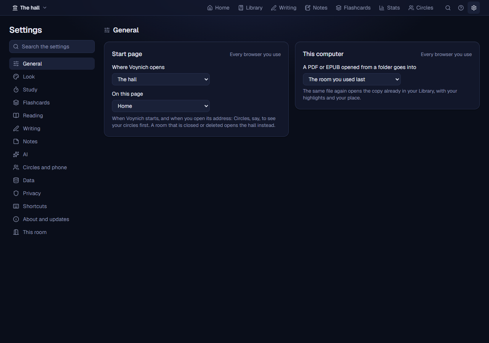
Settings (the gear) is one page, the same in the hall and in every room, in tabs: General (the start page), Look (themes, text size, fonts), Study (break reminders, days off, Stats’ colours), Flashcards, Reading (the reader’s pages, text boxes, the notes beside a book, what each highlight colour means, the Library, book search), Writing, Notes (note cards, the graph), AI, Circles and phone, Data, Privacy, Shortcuts, About and updates and This room (a room’s courses, activities, name, symbol and goals, closing or deleting it). This room and Flashcards are about one room: the room you are in, or another chosen at the top. Search the settings, above the tabs, finds a setting by its words (“font” finds the text size and the theme’s fonts) and opens its tab at it; the search of everything (Ctrl+K) finds settings too. Each part says where it is kept: This browser only (a phone and the computer can differ, such as the reader’s pages or the text size), Every browser you use, or one room only. Settings you meet where you use them (the reader’s menus, Flashcards’ menu, Writing’s Paper button, the timer’s bell) stay there too and change the same setting. On a phone, Settings shows the list of tabs first and one tab at a time.
Where Voynich opens. Settings, General, Start page: the hall (as before), the room you used last, or always one room, and On this page: Home, or straight into the Library, Writing, Notes, Flashcards, Stats or Circles. A room that is closed or deleted opens the hall instead.
Opening files with Voynich (Windows and Mac). Voynich is in Explorer’s Open with for PDFs, EPUBs and Markdown files (.md). To open them with Voynich when you double-click them, press Make Voynich the default in Settings, General, This computer: Windows’ Default apps opens at Voynich, where you choose it for each kind (Windows lets no program make itself the default). On a Mac Voynich is in the Finder’s Open With for PDFs, EPUBs, Markdown and Word files; to open a kind with Voynich when you double-click it, select one file, choose File, Get Info, pick Voynich under Open with and press Change All. Voynich documents (.vyn) open in Voynich on both. A PDF or EPUB opened this way goes into your Library and opens in the reader, with its notes panel closed (the button at the right end of the bar opens it), and a note with Undo (take it out again); into which room is your choice there (A PDF or EPUB opened from a folder goes into: the room you used last, the hall, or always one room). Voynich keeps its own copy, so your file is never changed. The same file again (or a copy of it under another name) opens the book already in your Library, with your highlights and your place. A Markdown file opens in a page of its own, as VS Code shows one: its text and its preview side by side (Text, Both or Preview at the top, kept for next time). The preview shows headings, lists, task lists, tables, code, quotes, links and the pictures beside the file; HTML written in the file is shown as text, never run, and pictures from the web are not loaded (a link instead, as loading one would tell its website that you opened the file). Write in the text and press Ctrl+S (or Save) to save it to the file, with its own line ends; if another program changed the file meanwhile, Voynich asks first (Save mine over it or Read the file again). Keep in Notes makes a copy of it as a note in a room you choose; the file stays as it is.
2. Installing, starting, quitting
Installing
Download Voynich-Setup.exe and open it. Windows may say “Windows protected your PC” because the program is not signed with a paid certificate: choose More info, then Run anyway. Setup installs for your user only and needs no administrator rights. It offers a Desktop shortcut and adds Voynich to the Start menu. Voynich works on Windows 10 and 11 (64-bit), and on macOS 11 or newer (below); there is no Linux version yet.
Install on a Mac
Download Tracker-Mac.dmg (one download for Apple Silicon and Intel Macs, macOS 11 or newer; its own window needs macOS 12 or newer), open it, and drag Voynich onto the Applications folder. A Tracker (Voynich’s old name) that updates itself renames itself to Voynich; its data folder keeps the old name, so nothing moves. It is not signed with a paid Apple certificate, so macOS stops it the first time, once:
- macOS 15 (Sequoia) and newer: open Voynich, close the message, then open System Settings, Privacy & Security, scroll down to Security and press Open Anyway next to the line about Voynich, and confirm. The button is there for about an hour after the message.
- macOS 11 to 14 (Big Sur, Monterey, Ventura, Sonoma): Control-click (or right-click) Voynich in the Applications folder, choose Open, then Open again.
After that it opens like any app, and updates from inside Voynich do not ask again. On a Mac, Voynich is in the Dock while its window is open, and its icon (an outline with a v) is in the menu bar at the top right; click it to open Voynich, Control-click it for its menu. Your data is in ~/Library/Application Support/Tracker/data and the log in ~/Library/Application Support/Tracker/logs/tracker.log. To remove it, quit it and drag Voynich to the Trash; the data folder stays until you delete it.
Starting
Start Voynich from the Start menu or the Desktop shortcut (on a Mac, from the Applications folder). On Windows it opens in its own window, like any program, whose title bar is Voynich’s own top bar (drag the window by its empty space, double-click it to fill the screen; minimize, maximize and close are at its right end), and puts a small icon near the clock (if you cannot see it, click the little arrow next to the clock). Closing the window hides it: Voynich keeps running, so a call, your circles and their notices go on (the first time, a notice says so). Click the icon to open the window again; right-click it for Open Voynich, Show the log folder and Quit Voynich. Starting Voynich a second time just shows the window. In the window, F11 is full screen, Ctrl and + or - make everything bigger or smaller (Ctrl+0 as it was), its size and place are kept, and links to websites open in your browser.
The loading screen. While Voynich starts (from 0.91), a small picture of its icon shows, the letter on it growing from its middle out along its strokes. When Voynich is ready the letter shines once and the window opens; if Voynich takes longer, the letter breathes until it is. It shows on Windows and the Mac, not when Voynich starts with the computer; from 0.92 the letter grows and shines even with reduce motion on in your computer’s settings (on Windows, Animation effects off); Settings, Look, Loading screen has Always (the default) and As my computer says, which shows the letter whole there. Opening Voynich while an update is being installed waits for the update to finish, then opens it. From 0.93 the loading screen also updates Voynich: when a newer version is out (and both update switches below are on), it says Updating Voynich to the new version under the icon, shows the download, installs it and opens the new version. With no internet, or if anything goes wrong, Voynich opens as it is after a few seconds at most.
On a Mac it opens in its own window too, with the Mac’s three buttons at the left end of Voynich’s top bar. The red button hides the window and Voynich keeps running, so a call and your circles go on; click Voynich in the Dock, or its menu bar icon, to see it again. Cmd+Q quits Voynich. The menus are the usual ones (Voynich, Edit, View, Window): Cmd and + or - zoom (Cmd+0 as it was), Ctrl+Cmd+F is full screen. The window is a download of its own (about 115 MB), checked like an update and kept beside your data: the disk image carries it, and an update that brings a new window shows Voynich in your browser for a minute or two while it downloads. The first time something uses the microphone, the camera or the screen, macOS asks whether Voynich may; it does not ask again after an update that keeps the same window. On macOS 11 Voynich opens in your browser instead.
The window starts with its own copy of the settings kept in this browser only (the theme, the text size, the reader’s pages): if you used Voynich in a browser before 0.80, choose those again once. Settings kept in every browser you use are there as before. Voynich can still be opened in a browser at its address, http://localhost:3417 (or a nearby number if that one is busy). It works only on your computer: no other device on your network can open it, unless you turn on Use Voynich from your phone and pair a phone (see Your phone). Nor can another account on the same computer: since 0.83 Voynich answers only what brings its key, a file only your account can read. Its window and the browser it opens bring it by themselves, and a bookmark keeps working in that browser. One thing to know: a browser sends the key’s cookie to every program on your computer’s own address (localhost), whatever its port. On a computer that other people also sign in to, use Voynich’s own window, which keeps its cookies to itself.
Starting with Windows. The installer asks whether Voynich should start when you sign in to Windows (the box is ticked; an update never turns it on). It then starts in the tray, with no window, so your circles and reminders are ready; click the icon to open it. Turn it on or off in Settings, General, This computer, Start Voynich when you sign in to Windows, or in Windows’ own Settings, Apps, Startup.
Starting when you log in to a Mac. Settings, General, This computer, Start Voynich when you log in to this Mac (off until you turn it on). Voynich then starts in the menu bar with no window; click its icon to open it. macOS may say that Voynich added an item that can run in the background, and System Settings, General, Login Items lists it.
Quitting
Right-click the icon (Control-click on a Mac) and choose Quit Voynich (on a Mac also Cmd+Q), or press Quit Voynich in Settings, About and updates. Closing the window (or a browser tab) does not stop Voynich, and a running timer is kept (it lives in your browser, see The timer).
Removing it
On a Mac, drag Voynich to the Trash (see above). On Windows: Windows Settings, Apps, Installed apps, Voynich, Uninstall. It asks whether to delete your data as well; the default is No, so installing Voynich again later carries on where you left off.
3. Rooms
The first time you open Voynich you see the welcome page.

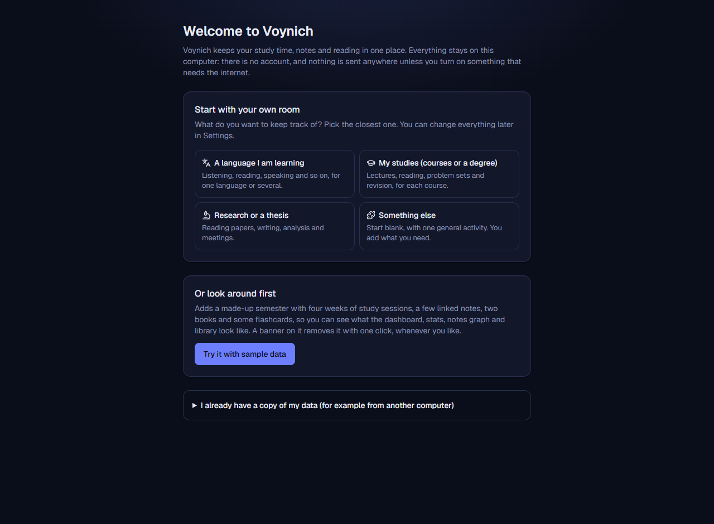
- Start with your own room. Choose A language I am learning, My studies (courses or a degree), Research or a thesis or Something else. Each comes with sensible activities and a symbol you can change later. Then name it, say what each part is called (one word, like Course, Language or Topic) and optionally type your first ones separated by commas. Create my room makes it.
- Try it with sample data. Adds a made-up semester: three courses, four weeks of sessions, nine linked notes (some written under others), two books and goals. A slim line at the top of its pages says it is sample data and has Remove sample data, which takes only the sample away (a copy of your data is saved first).
- I already have a copy of my data. Opens the restore and import options, for a copy or export from another computer (see Backups, exports, moving).
Your first room (your own or the sample) opens with a short tour: four cards on rooms and the timer, notes and the graph, books and the reader, and Writing. Next and Back go through it, Skip or Esc closes it, and it is not shown again; Settings, About and updates has take the short tour again.
More rooms: press New room at the bottom of the room menu (the room’s name at the start of the top bar). Changing one: Settings, This room (with the room chosen at its top), lets you change its symbol (an icon chosen from a set, which also shows in the room menu and on the hall’s Home) and name, what each part is called, its daily goal, and its order in the room menu. Closing one you are done with (last term’s): Close this room in the same place. It leaves the room menu’s rooms for Closed rooms under them and has no door on the hall’s Home; nothing in it is deleted, its time stays in Stats and your streak, and it is not offered as a place to move things to. Tick Put its books and documents on a shelf of the hall to find them from the hall too, on a shelf named after the room. A closed room says so at the top of its pages; Open it again in its settings brings it back. Deleting one: Delete this room in the same place. Voynich shows what will be removed (sessions, courses, activities, notes and books), and if the room holds any sessions, notes or books it asks you to type the room’s name before Delete permanently works. A copy of your data is saved first (“Before a delete” in the list of saved copies).
4. Courses and activities
Both are managed in the room’s own Settings, in the lists at the top. You can add, rename, recolour and delete them, and drag the grip (or focus it and use the arrow keys) to put them in the order you like.

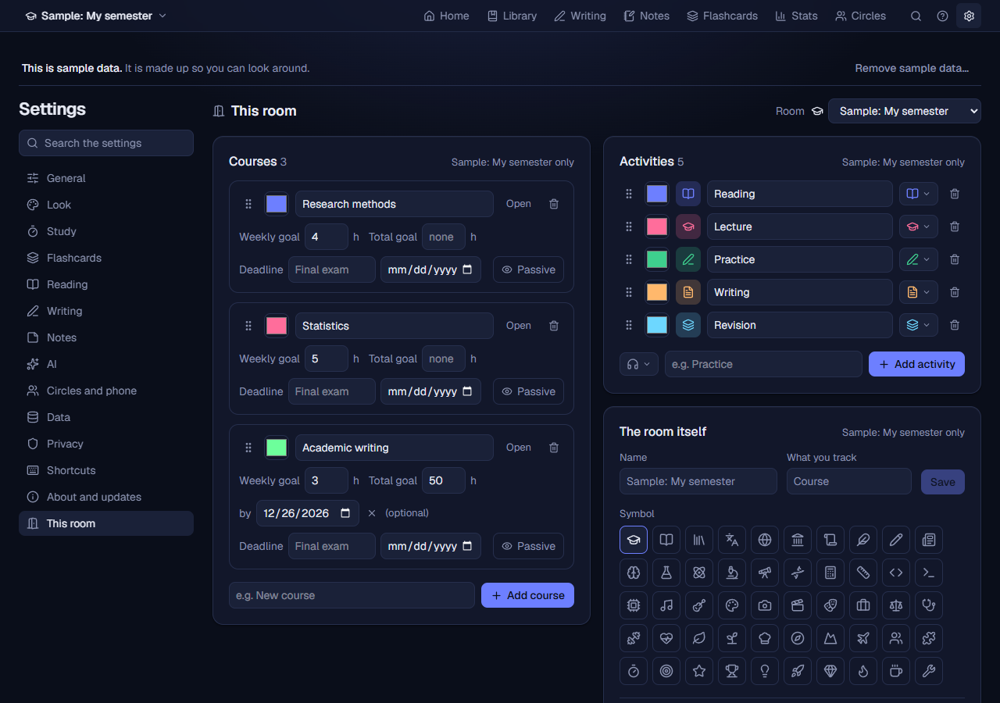
Courses
- Weekly goal: hours per week. It becomes a progress bar on the room’s Home.
- Deadline: a day of its own (an exam, a hand-in) and what it is called (“Final exam”). Home counts down to it under Coming up (see Home). Empty the date to take it away.
- Total goal: hours in all, with an optional finish date. Home then shows how far along you are and, with a date, how many hours a week it takes to finish in time.
- Passive: a passive course is left out of Home’s weekly goals list (for example something you only follow loosely). Its time and goals are kept.
- The colour you pick is used in lists, charts, notes and the graph.
- Each course has its own page: click its name wherever it appears (Home’s goals, a book’s course, a note’s course, Stats, or Open in Settings). It shows the course’s time this week and in all, its books with their progress, its notes, its documents and its latest sessions, each leading on to where it lives.
Activities
Each has a name, a colour and an icon (pick the icon from the pictures). Add the ones you actually use; an activity can be used with any course.
Deleting a course or activity asks in place what to do with what it has: Move them and delete moves its sessions (and for a course its notes, books and documents) to another one first; Delete them too deletes its sessions with it. A copy of your data is saved before anything is deleted. If you only want a course out of the way, mark it Passive instead.
5. Home

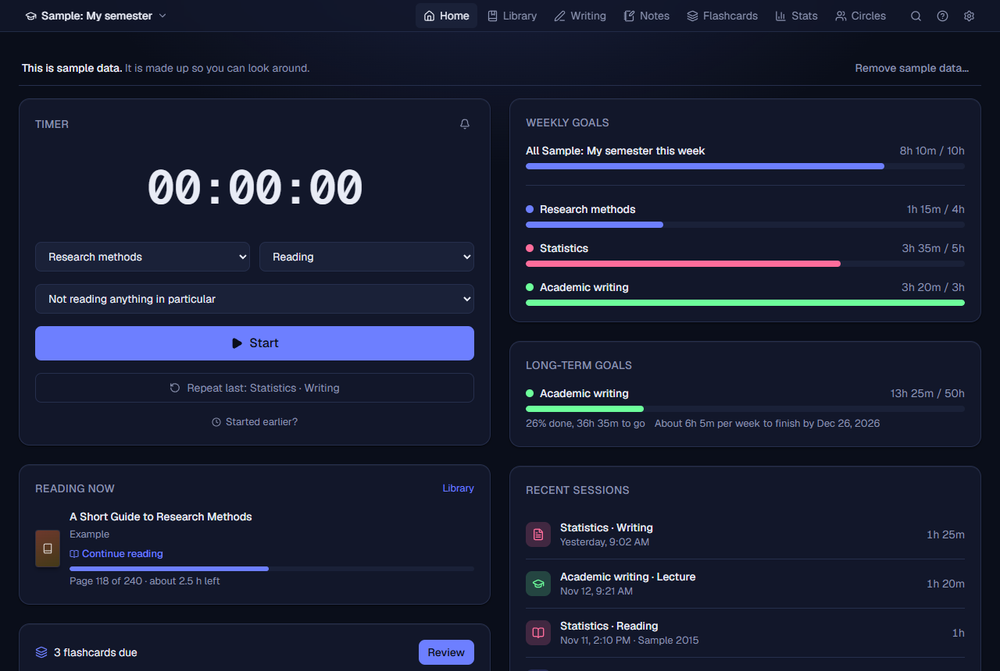
- Timer: see the next section.
- Coming up: the deadlines of the room, the nearest first: a course’s Deadline (in Settings) and the day a document is due (Due, under Page in Writing), with how far off each is (“in 12 days”; red once it has passed, shown for a week after). For a course it works out what a day needs until then, counting the days before the deadline itself: the pages left in its books that are not finished and have a page count, the minutes left of its total goal, and its flashcards (of its notes and books) due by then. For a document it shows the words so far. The card is not there when there are no deadlines.
- Reading now: the books you have marked as Reading, with the page you are on and an estimate of how long is left. Continue reading opens a book that has its file where you stopped. A book with a day to finish it by (Finish by) says how many pages a day that takes.
- Week in review: on Sundays and Mondays a small card leads to the week in review in Stats (on a Sunday the week ending that day, on a Monday the week just over).
- Flashcards due: how many of your flashcards are due, with Review (shown only when some are).
- Today: time logged today against the daily goal, your streak (days in a row with time logged, in any room, passing over your days off) and a calendar of your last weeks. Each square is a day; the darker, the more time. Click a day to see that day’s sessions (Stats, Sessions). The number of weeks shown depends on how wide the card is: squares are kept big enough to click.
- Weekly goals: a bar for the whole room and one for each course that has a goal. A course’s name opens its page.
- Long-term goals: courses with a total goal, with percent done, hours to go and the pace needed.
- Recent sessions: your latest sessions, with the book and note if any.
Those are the cards Home starts with. Each room’s Home can be arranged as you like, and more can be put on it.
Arranging Home
Press Edit Home (at the top right of Home). Each card gets a strip with its name and a dashed edge, and a bar stays at the top of the window:
- Moving: drag a card by its strip; the others make room. Cards snap to a grid of 12 columns.
- Sizing: pull a card’s right edge, bottom edge or corner. A card is as tall as what it shows until you change its height by hand; then it keeps that height (and scrolls inside if what it shows is longer). Fit to its content on its strip makes it follow what it shows again. A card cannot be made narrower than it can be read: on a narrower window it takes more columns by itself.
- Taking a card off: the X on its strip. Undo in the bar puts it back; Add a widget puts it back later.
- With the keyboard: Tab to a card, then the arrows move it (a column left or right, past the card above or under it), Shift and the arrows size it, and Delete takes it off. What happened is said aloud to a screen reader.
- Reset puts Home back as it was at first. Copy to... gives another room this Home’s cards and places. Done (or Esc) ends editing.
A wide window (from 1600 pixels) and a narrower one keep their own places, so arranging one does not disturb the other. On a phone there is no grid: Edit Home shows the cards in their order, with up, down and X. Home’s arrangement follows you to your other computers and your phone, like the theme. A wide card shows more: the timer’s clock beside its controls, the books, goals and sessions in two or three columns.
Adding widgets
In Edit Home, Add a widget shows every kind. A new one goes to the top left; drag it where you want it. Those that need to know something ask when they are added (which deck, which note), and the sliders on their strip in Edit Home ask again. You can add several of most kinds (two decks, two notes).
- A note: one note in full (a formula sheet, a list). Checklist lines tick on Home; Edit changes the note there, Open opens it in Notes.
- Scratch pad: a few lines typed on Home, kept as you type.
- A deck: one flashcard deck (or the cards in no deck): what is new, learning and to review, and Study, which starts that deck’s review.
- A shelf: the covers on one shelf (a smart one too), or the books you are reading. A cover opens the book’s page.
- A document: one document’s words, toward a target if you give one, and Write.
- Countdown: the days until a day you name, big; amber in the last week.
- Study time: the last 7 or 30 days as bars, coloured by course. Point at a bar for the day’s time.
- Goal ring: today’s time against the daily goal as a ring, with the streak.
- A circle: one study circle’s news (messages, what mentions you), who is studying in voice, and Open.
- Links: a few links of your own, one on a line as a name, a bar and the address (Course page | its address). They open in your browser.
- Clock: the time, the date and the week’s number.
Nothing on Home reaches the internet. If a widget’s note, deck, shelf, document or circle is deleted, the widget says so; choose another with its sliders or take it off.
6. The timer

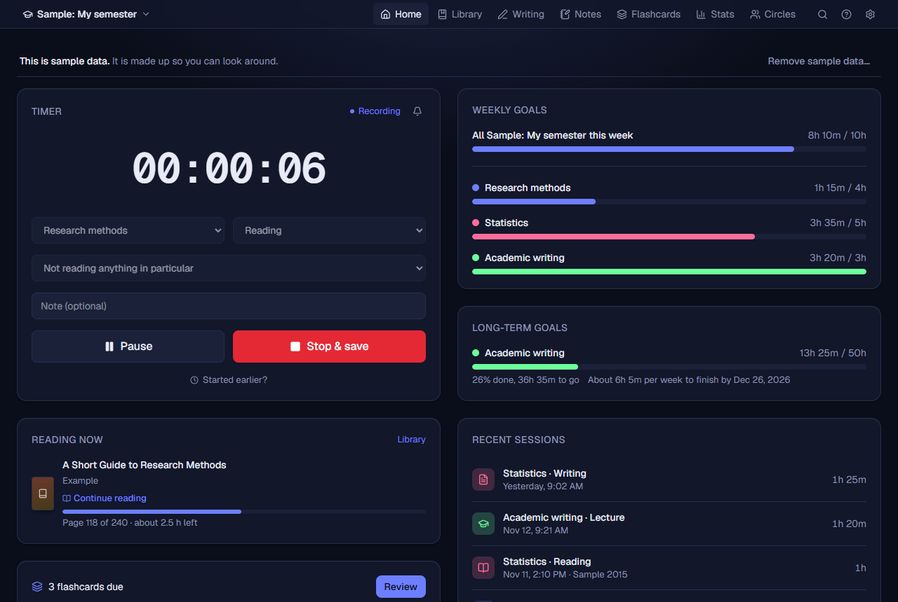
Starting
Choose a course and an activity. If you keep a Library, a third box lets you pick the book or article you are reading (“Not reading anything in particular” otherwise); picking a book also selects its course, and a book with its file has Read it (Open the book while the timer runs). Press Start. Repeat last starts the same course, activity and book as your most recent session in one click.
While it runs
- Pause stops the clock without ending the session; press it again to resume. Paused time is not counted.
- You can type a note about the session while it runs.
- Started earlier? moves the start back by 5m, 10m, 15m, 30m, 45m or 1h when you forgot to press Start. It also works before you start: the same buttons then start the timer now, counting from that long ago.
- The timer keeps running if you close the tab, reload the page or quit and reopen your browser: it is kept in your browser, and its time is worked out from when it started. (If you clear your browser’s site data, a running timer is lost, so save first.)
- The bell icon switches break reminders on or off. With it on, your browser may ask permission to show notifications, and Voynich reminds you to take a break after every 30 minutes of active time (paused time does not count). The choice is kept in this browser.
Saving
Stop & save stores the session. A timer stopped within a minute (started and stopped by mistake) is not saved, and the timer says so: “Only 12 seconds, so it was not saved”; the reader’s and Writing’s timers do the same. Sessions under a minute saved before 0.48 are counted at the top of Sessions, with Delete them. While a timer runs, the browser tab’s title starts with its time (“12:04 Voynich”), so it can be seen from another tab. If saving fails (for example the disk is full), Voynich says why and the timer keeps running, so nothing is lost. Right after saving, a bar says “Saved” with the time and offers Add note (or Skip). If the session was about a book or article, it also asks Now on page so you can type the page you reached and press Save page.
7. Sessions
Every session is in Stats, Sessions, beside Charts and Week in review (until 0.55 this was a tab of its own, the Log, and its old links still lead here). The hall’s Stats has the hall’s own sessions there; each room’s are in that room’s Stats.

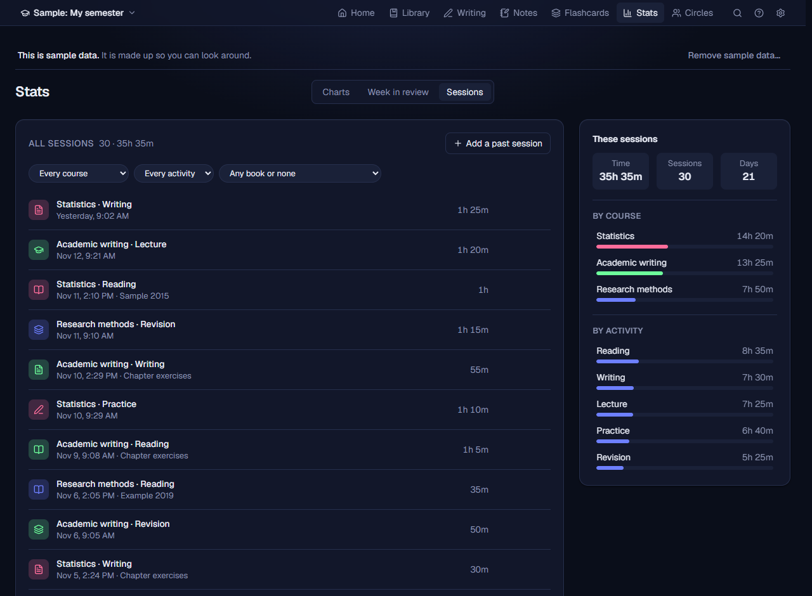
- Add a past session opens a form: choose the course, activity, optionally a book, the date, the time, the minutes and a note, then Add. The date and time start as now, or as the day you clicked in the calendar on Home.
- Sessions lists everything newest first, with how many and how long in all. Point at a row for its buttons: write a note about that session (shown all the time when it has notes, with how many), edit it (every field can be changed) and delete it. A deleted session leaves at once; Undo brings it back for a few seconds.
- A session’s book or document is a link to it, and each of its notes leads to the Notes tab and to its page in the book.
- These sessions, beside the list on a window 1280 pixels wide or more: what the sessions shown add up to (the time, how many, on how many days), then by course and by activity, each with a bar. Click a course or an activity to show only its sessions; click it again to show them all.
- Show only one course, one activity or one book with the boxes above the list (Show all clears them). Coming from a day in the calendar, the list shows only that day. A book’s sessions in the Library and a course in Stats open Sessions shown that way.
8. Stats

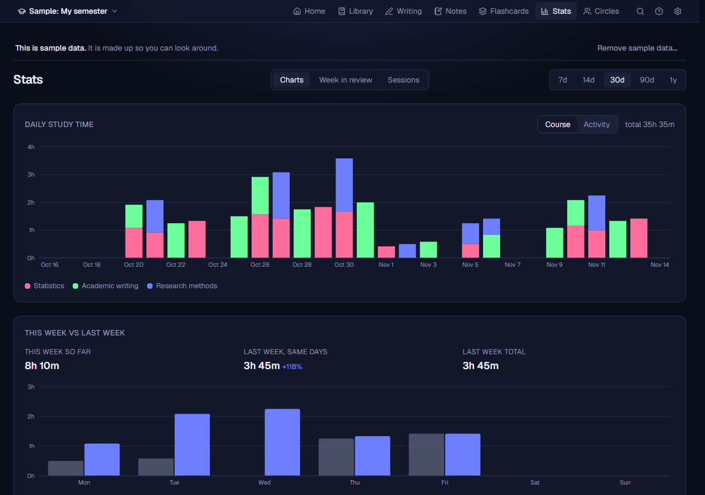
- Daily study time as bars, for 7d, 14d, 30d, 90d or 1y. Its colours show the courses, one colour each; switch to Activity beside the chart to colour by activity instead, with each course’s time side by side within a day, left to right in the order of your course list. The choice is kept. The side says hours. Hover or focus a bar for the exact time.
- This week vs last week: this week so far, last week up to the same day (with the difference in percent) and last week in total, with a chart by weekday.
- By course and by activity: where the time went, as bars with totals. A course opens its page, an activity its sessions.
- Week in review (the switch beside the ranges, Charts or Week in review): one week, Monday to Sunday, in one page. Its time against the week before and against your weekly goal (your room’s, or your courses’ added up), the days you studied (each day’s bar with its time under it, “45m”, “1.5h”) and your longest session, each course with its goal, the activities, the books you read and the documents you wrote in (with the time on each), the books you finished, the notes you wrote, and the flashcards you answered (with how many of the ones you knew you remembered) and made. The arrows go a week back or forward. It opens on this week, or on a Monday on the week just over. The hall’s Stats has the same, across all your rooms.

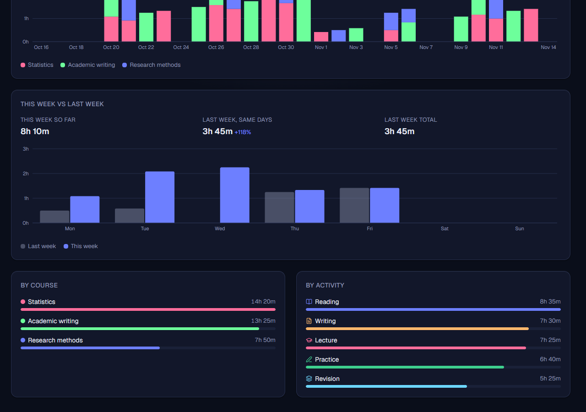
9. The hall
Think of Voynich as a library. The hall is its main hall, the first item in the room menu, where you study in general: books, writing and notes of any kind, that belong to no course. The rooms under it are study rooms, each for one thing you study. The hall has these pages along the top:
- Home, where you start. On the desk lists the books you are reading, one row each with a small cover, the page you are on and a line of how far you are; one click opens a book where you left off. Beside it are the documents you wrote in last, each saying where it is. Today lists the flashcards due in each room, every deadline of the next two weeks across your rooms (a course’s, or a document’s due day: each opens the course or the document’s page) and your reading plans (“6 pages a day to finish by 18 Nov”), or says it is a quiet day when there is none. Rooms has a door for each room, with its time today and this week, its cards due and its nearest deadline (and Timer on while its timer runs), and New room; a line under them links to your closed rooms. In the hall counts the hall’s own books, writing and notes.
- Library, the hall’s shelves: the books you keep in the hall, and every room’s books under In rooms (see The hall’s books).
- Writing: documents that belong to no room (free writing, an essay, a journal, a draft that has no course yet), in the same editor as a room’s (see Writing), citing any book on the hall’s shelves (the rooms’ too), and under them, In rooms, every room’s documents in the same kind of list, last changed first, each saying its room (with Room to show one room’s), so all your writing can be found in one place. Course chips show only when there are two courses or more to choose between.
- Notes: notes that belong to no room, with cards, the graph and links between them as in a room (a note in the hall and a note in a room do not link to each other). The hall has no flashcards: those are a room’s.
- Stats adds up the hall and all your rooms: today, this week, all time with the number of sessions, your streak (a day counts if the hall or any room has time on it), a daily chart, time per room (the hall among them), your top courses across rooms, and the most recent sessions. Week in review at the top shows a week across all your rooms (see Stats).
- Settings: the same page as in a room (see Settings).
Days off. A streak is days in a row with something done. In Settings, Study, Days off, choose the weekdays your streak passes over, the weekend for example: a day off with nothing done does not break the streak, and study on it still counts. Home does not say your streak is at risk on a day off, and the streak your circles see follows the same days. At least one day of the week stays a study day.
Study reminder. In Settings, Study, Study reminder, choose a time, 19:00 for example. At that time, on a study day with nothing logged yet today (a timer running counts as studying), a notice says it is time to study; once a day, however many windows and tabs are open, and a page opened later the same day still gives it. On Windows it comes whenever Voynich is running, even with no window or tab open: Voynich near the clock gives it as Windows’ own notice (a click on it opens Voynich), two minutes after the time, so an open page gives it first. On a Mac it comes while Voynich’s window is open or closed, or a tab of it is open in a browser. It never comes when Voynich is not running. A day off gets none. No reminder turns it off.
Time in the hall. The hall is simpler than a room: there is nothing to set up and nothing to choose. Its time is what you time while you read one of its books (Start the timer in the reader) or write one of its documents (Start the timer in the document): it starts at once, as reading or as writing. That time counts in Stats and your streak like a room’s, as “The hall”, and a line under the hall’s title on Home says how much there was today and this week; The sessions there lists them, to put a mistake right. For a course, a goal or a timer of its own, a room is the place.
Moving between the hall and the rooms. A note or a document can go to the hall or into a room: the move button on a note card, or beside a document in Writing, lists where it can go and says what it leaves behind first. A note leaves its place’s subfields, the notes it is under (the notes under it stay, one level up), its session, its flashcards (they stay in their room, no longer from that note) and the comments on its lines in the graph; it keeps its book when the book is where it goes. A document leaves its subfield and folder and keeps its time spent, its versions and its citations. A book moves with Move into a room and Move it to the hall in the hall’s Library. The addresses of the old Overview and Archive pages lead to the hall.

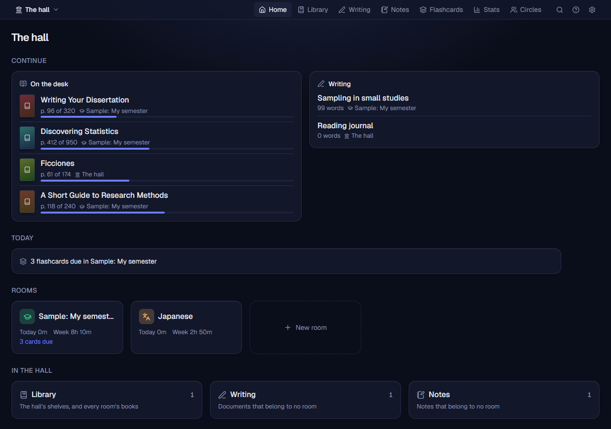
10. Notes and the graph

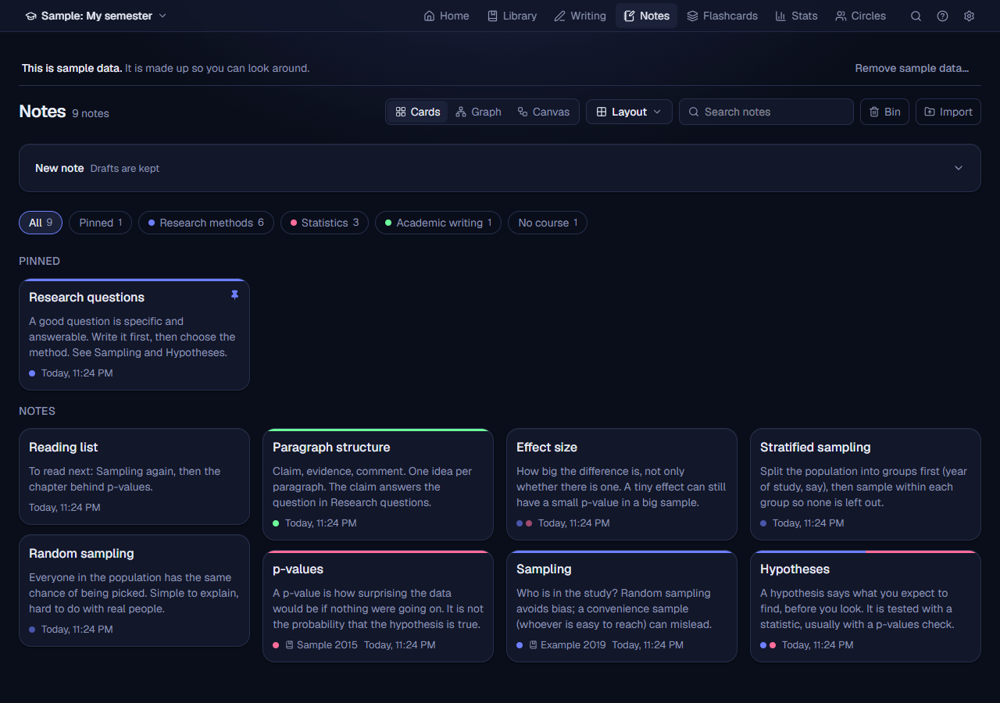
Writing
- Press New note to open the editor (it starts folded once you have notes, so they come first). Anything half written is kept if you leave, until you save or discard it.
- Select text and use the toolbar: bold, italic, strikethrough, highlight, code, heading, quote, bullet list, checklist, link and picture. Ticking a checklist item on a saved note works right on the card.
- Pictures: paste a screenshot, or use the picture button. They are stored inside your data (see Backups).
- Start from: Reading note (claim, evidence, questions), Word study (word, meaning, example, forms, related), Lecture note, Learned, Question, Checklist and Terms fill in a starting shape. Save as a template keeps what you have written as one of your own, under a name you give, offered after the others (the × removes it); your templates are the same in every browser you use.
- Courses: tick one or several; the note then appears under each. About ties it to a book or article, with an optional page number (Now on p. 118 fills in the page the book is at). A thin line of each course's colour runs along the top of the card (a note in several courses shows every colour side by side) and curves with the card's corners in every theme.
- Under: put the note under one or more other notes (type part of a title and pick it; the × takes it out again). See Notes under notes.
- Pin keeps a note at the top. Ctrl+Enter saves (another key can be chosen in Shortcuts).
- You can also write a note right after a session (see The timer) or about a session in Stats, Sessions.
Linking
Type a note’s title between double brackets, like [[Sampling]], and it becomes a link. A link to a title that does not exist yet is shown as an “unwritten link”, ready to be written. A link to a heading, [[Sampling#Kinds]] as Obsidian writes it, goes to the note. A line that is only ![[Sampling]] shows that note inside this one, in a box whose title opens it; ![[Sampling#Kinds]] shows only its part under that heading, to the next heading as big. A note shown inside another can show others in turn, three deep, and never itself; a title not written yet offers to write it. Embeds are shown on the Notes page; elsewhere they are links. Each card lists Linked from: the notes that point to it. The open note also lists Mentioned in, not linked: the notes that name its title in their words without a link (any case and spacing, never inside a link or code), each with the words around it and Link, which makes those words a link there while the sentence reads as before. Two notes can have the same title: the list that opens as you type [[ shows what tells them apart (the note each is under, its book, its subfields, the day it was made), and a link picked there, or made in the graph, remembers which one it means. While you edit it shows a short code after the title ([[Reasoning^05952bws]]); on the card it shows just the title. When a second note takes a title, the links that went to the first one keep going there.
Notes under notes
A note can sit under another note, for example Random sampling under Sampling. A note can be under several notes at once, and a note under a note can have notes under it too, as deep as you like. Put a note under another with Under in its editor, or with Put under... in the graph.
- A note is in the courses of every note above it as well as in its own. In the example, Random sampling is in Research methods because Sampling is, without being given that course itself. In the note’s editor that course shows as a dashed chip. You can still give it a course of its own as well (press the chip), but a new note under a note, or about a book that is under its course, is not given the course you were filtering by or the one a running timer is for: it has it already, and a second line to the same place would only add clutter.
- A note is also about the books of every note above it, the way it is in their courses. If Sampling is about a book, Random sampling shows that book too, as a dashed chip, and in the graph its bubble lists it under Also about. There is no line of its own to that book. A note can still be about a book of its own as well. Its editor shows the book too (the About box reads the book, through the note above), and the Page box is there as well: the page is then in that book, and it is shown beside the dashed chip.
- Each card shows Under with the notes it is under, and how many notes are under it; click one to go to it.
- A note cannot be put under itself, or under a note that is already under it. Voynich refuses that and says why.
- Deleting a note that has notes under it keeps them: they are given its courses and move up to the notes it was under. The question before deleting says so.
- A [[link]] and being under a note are separate: removing one leaves the other.
- The faint dashed lines the AI suggests (when it is on) never join notes of one family: two notes under the same note, or one above the other. The hierarchy already ties those together.
Books under courses, notes under books
The same idea reaches the Library: a book can sit under the course it is about, and the notes you write about a book sit under that book. So a course holds its books, and a book holds its notes.
- When you choose a course for a book in the Library, Voynich asks how the book is joined to it: Put it under the course (the first choice) or A normal connection, a plain line that says nothing more. Books you already had are under their course.
- A note you write about a book (About in the note’s editor) is put under that book at once, and you do not have to choose.
- As with notes under notes, a note is in the course of the book it is under, as well as its own courses. A book that is only connected to its course does not pass the course down to its notes.
- In the graph, a book under its course and a note under its book are joined by dashed lines, each in its own look (see Four kinds of line for being under something below). Put under... works for them too: a book goes under a course, a note goes under a book. Selecting the line of a book and its course shows Type: Under or Normal, to switch between the two.
Grid, full text and list
Layout, beside Cards and Graph, chooses how the cards show: Grid (small cards with the title, a few lines, the course dots, the book and the date; the usual choice), Full text (every note in full) and List (one row per note). Small, Medium and Large set the size in Grid (how many cards side by side and how many lines show) and in List (how roomy the rows are). In Grid and List, click a note to show it in full where it is, with its pictures and buttons; click its title again, press Esc or click another note to make it small again. A note opened from a link, a citation or the graph is shown in full. The same choice is in Settings, Notes, and it is kept in this browser for every room.
On a card
- The book chip opens the book in the reader at this note (its highlight lit up, or its page); a book without its file opens its Library card. A course’s name opens the course’s page.
- A note written about a highlight shows the highlighted words above it, leading to them in the book.
- Make a flashcard (the cards button) makes a flashcard from the note: its title on the front and its text on the back, both changeable first.
- Delete takes the note away at once, with Undo for a few seconds. After that it is in the Bin (the bin button next to the search) for 30 days: Put back brings it back with its courses, its place under other notes, the notes that were under it, its highlights, flashcards and pictures; Delete for good and Empty the bin delete it.
Finding
Filter by All, Pinned, a course, or No course, or type in Search notes. A course lists its notes and the notes under them. Notes can be dragged into your own order. The search and the filter are kept when you come back. A book’s notes in the Library opens the Notes tab showing only that book’s notes (the × on its chip shows them all again), with the book’s highlights that have no note folded above them, each with Open in the book and Make a flashcard.
Today’s note. Today (beside Import) opens the note for today, titled by the date (2026-11-25), and makes it if there is none yet: one note a day, so [[2026-11-25]] links to that day. Write a note titled Daily note template and each new day starts with its text; {{date}} in it becomes the date, {{weekday}} the day of the week and {{long date}} the date in words. A new day’s note goes under the course a running timer is for, as a new note does.
Bringing notes from Obsidian or Notion
Import (beside the search on the Notes page) brings in notes written elsewhere. Choose a folder takes your Obsidian vault’s folder, or the folder of a Notion export (in Notion, export as Markdown & CSV and unzip it); Choose files takes some .md files. Voynich first says how many notes it found and how many are new; Bring in adds them.
- Each file becomes a note titled after the file (without the long number Notion adds to every name).
- Links between them stay links: Obsidian’s
[[Note]]and[[Note|other words]], and Notion’s links to its own pages. A link to a heading inside a note goes to the note. - Bold, italic, headings, lists and code come across. Obsidian’s settings at the top of a file (between
---lines) are left out. An embedded note (![[Note]]alone on its line, or![[Note#Heading]]) stays embedded and shows that note inside this one; one in the middle of a line becomes a link. Embedded pictures and files are left out (Voynich says how many). - A note with a title you already have is left out, so bringing the same folder in again adds only what is new. The files themselves are only read, never changed.
Flashcards
Flashcards is a tab of its own in every room (until 0.55 it was a view of Notes; the hall’s Flashcards tab lists what is due in each room), and needs no AI. On its Decks tab, the top (on a window 1280 pixels wide or more, a column at the right with Review stats under it) says how many cards there are to study now (new, learning and to review), how many answers you gave today and how many days in a row you have studied, with Study now for every deck. The More button (···) beside it has Import from Anki, Import a text or CSV file, Export all to Anki, Export..., Check the cards, Study more and Settings. Under it are four tabs, Decks, Browse cards, Add cards and Stats; the one you used last opens next time.
Studying fills the window with the cards that are due, one at a time, and nothing else: the new, learning and review cards still to come along the top, and Quit reviewing (or Esc) to go back. Space or Enter shows the answer; you answer Again, Hard, Good or Easy (1 to 4, or Enter again for Good), and each button shows when the card would come back. Cards are scheduled with FSRS, the same method Anki uses: each card comes back when you would still remember it with the chance its deck’s preset asks for (90% to begin with; higher means more reviews). Every answer is kept with the card.

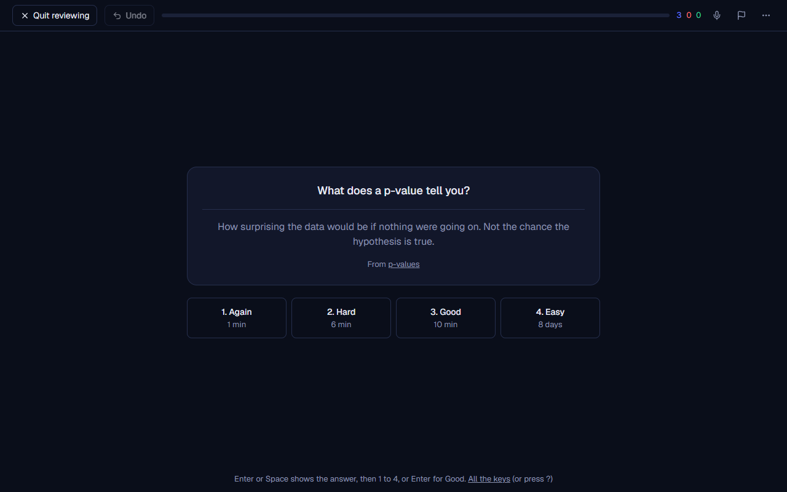
- While reviewing. Undo (Ctrl+Z) takes back the last answer, Bury or Suspend, and again, back through the session. E edits the card (or its note) in place. I shows Card info over the review: where the card stands, the chance you still remember it, its stability and difficulty, the time spent on it, its memory graph and every answer it was given (Esc or I closes it; the review waits). The card’s menu has Bury until tomorrow (-), Suspend (@, left out of reviews until taken back), Delete (with Undo) and Open in Browse; Ctrl+1 to 7 set one of seven flags. R plays the card’s sounds again, and Record yourself (Shift+V) lets you hear yourself after the card, to compare your accent. A card forgotten 8 times is a leech: it is tagged
leech(and, if its preset says so, suspended), and the review says so. - Cloze cards. Write a sentence and select words in it, then press Make a gap: they become
{{c1::words}}, as in Anki. Each gap number is a card of its own ({{c1::...}}and{{c2::...}}make two cards; two gaps with the same number are asked together), and{{c1::onset::part}}shows [part] as a hint. On Show the answer the gap is filled in place and the hint goes. Once one card of a sentence or a note is answered, the others wait for the next day (bury siblings, in the preset). - Typing the answer. With Type the answer on in a deck’s Options (or a note type whose card asks for it), a cloze card has a box in its gap and any other card a box under its front. Enter checks what you typed letter by letter (right letters in green, wrong ones in red, missing ones shown) and suggests an answer, which Enter takes. The deck’s language gives buttons for its letters that are hard to type (Alt+1 and on), and on a phone its keyboard. Whether case, accents and spaces at the ends count is the deck’s choice.
- Writing cards. Write it (Chinese) asks you to draw a character stroke by stroke on a pad: each stroke is checked as you draw, its outline shows after three misses, Show me plays the strokes in order, and the answer suggested depends on your misses. Write it (any script) is a free pad: draw, then compare with the answer and choose yourself. Add writing cards in a deck’s menu adds a writing card to each of its notes. The review stats list the characters you miss most.
- Decks. A card can be in a deck: a deck is made when a card is put in it, and
Chinese::HSK 1is a deck inside a deck. The Decks tab has a tile for each deck, with how many cards it has to review, how many new ones it can show today, and how many cards it has in all (decks inside opens them out). Study studies that deck alone, and Browse opens its cards. A deck’s menu (···) has Options, Study more, Add writing cards, Rename or move, Export to Anki and Delete the deck..., which asks whether its cards are kept in the deck above or deleted too (with Undo for a few seconds). - Options and presets. A deck’s Options hold its language and typing, and the preset it goes by: a named set of scheduling options shared by the decks that choose it (a deck inside another goes by the deck above unless it chooses). A preset has new cards and reviews a day (a deck inside another is held by both), the learning and relearning steps (
1m 10m), the longest gap, how much to remember, the order of new cards and of reviews, burying siblings, leeches, and sound (play a card’s sounds when shown, read it aloud in the deck’s language, readings over words only with the answer). Changing how much to remember or the longest gap says first how many cards would move, and can reschedule them. Settings holds the Default preset, and The next day starts at (4 am, as in Anki: reviewing past midnight still counts for the evening). - FSRS in a preset. Spread reviews evenly over the days (load balancing, on) puts each review on the least busy of the few days FSRS leaves free around it, and Easy days gives the weekdays you choose fewer reviews, or none. Train on my answers fits FSRS to the answers of the preset’s cards once there are 400 given a day or more apart (until then it says how many more): it trains on your earlier answers and checks on your latest ones, which it did not see, and offers the new parameters only if they predicted those better by both measures it shows (log loss and RMSE, lower is better). Use them, then Save, keeps them, and each card’s memory is worked out again from its answers; Back to the defaults undoes it. Suggest a retention plays out a year at each retention from 70% to 95% with your own answer times and shows minutes a day and cards remembered, with the retention that costs the least time for each card remembered. That one is often the lowest offered, because forgetting more is cheap in time; choose by the table.
- Study more (the More menu, a deck’s menu, or when a deck is done for the day): more new cards or reviews today, Review forgotten cards, Review ahead, Preview new cards, Study by tag or state, and Cram for an exam (by default its answers change nothing, so a cram the day before an exam does not push everything far away). Saved, a study is listed under the decks as a study session to come back to.
Add cards makes a note: choose its note type and fill a box for each field, in the deck typed or chosen at the top (Ctrl+Enter adds it). Basic, Basic and reversed (a card each way), Basic, optional reversed, Cloze, Type the answer, Image occlusion and the two writing types are built in, and Note types makes your own, with the fields and cards you choose. A field can be bold, in italics, underlined, coloured, a list, and can hold pictures (paste, drag in or choose) and a recorded sound; \( \) and \[ \] draw maths, and 漢字[かんじ] a reading over a word. A sticky field keeps its text for the next note, a note whose first field is already here is pointed out, and Just added lists what you added, to fix a typo. Editing a note changes all its cards; each card keeps its own schedule. Image occlusion: choose a picture and draw boxes over the parts to hide, a card for each. A card can also be made from a note card, a highlight in the reader, or an AI answer, and says which note or book it came from.
- Browse cards lists the cards in a table. Its search box takes Anki’s search language: plain words search the cards’ text, and
deck:German,tag:verbs,flag:1,is:due,is:new,is:suspended,prop:ivl>30,prop:r<0.8,rated:7:1,added:7,edited:3, a field by its name (German:*ung),re:for a regular expression,nc:for words without their accents anddupe:for notes that have a copy (the same first field;dupe:Basicof one note type), with-for not,orand brackets. A mistake is said under the box; How to search lists everything. The Sidebar has saved searches (Save this search), today, card states, flags, decks, note types and tags: a click searches, Ctrl adds it with and, Shift with or, Alt as not. Show a row for each card or each note, choose the Columns, and click a heading to sort by it (again for the other way). The chance of remembering (prop:r, the Retrievability column and its sorting, and the Stats) follows each deck’s preset: its trained FSRS parameters once you have saved them, FSRS’s own before. - Chosen cards. Tick cards to choose them (Shift chooses every card between, and the box at the top every card shown, then Choose all that match). The bar at the bottom moves them to a deck, adds or removes tags, sets a flag, suspends or takes them back, Set due date, Reposition new cards, Forget, Change note type, Replace (find and replace in a field or all of them, words or a regular expression, with a preview first and Undo after), exports them and deletes them (with Undo). Find duplicates lists notes whose field says the same, with Choose the extra copies.
- One card. Click a card to open it beside the list: its note’s fields, its deck, tags and flag, Preview (both sides as a review shows them), where it is in learning it, each answer it was given, and its memory: how its chance of remembering it fell and rose over time. Esc closes it.
- Stats (the fourth tab): today’s answers, a year of review days with your streak, the forecast, reviews and their time by learning, young, mature and relearning, intervals, stability, difficulty and the chance of remembering each card, the hours you study, the answer buttons, cards added, a retention table, and which FSRS parameters each preset goes by. Choose 1 month, 3 months, a year or all, a deck, or the cards of any search. The smaller Review stats under the decks stay.
- Away from Voynich. If Voynich cannot be reached while you review (a phone out of the house), the review goes on: each card is scheduled on the device as it would be on the computer, and the answers wait there, in order, until Voynich can be reached; then they are sent by themselves.
- Import from Anki brings in an Anki deck (.apkg) or a whole collection (.colpkg): its decks, notes and note types, its pictures and sounds, tags, flags, suspended cards, how far you are with each card and the history of your answers. Brought in again, a card that is already here is updated where Anki answered it since (or, as Settings says, left as it is). Anki’s shared decks are on
ankiweb.net/shared/decks: download one there, then bring it in this way. The installed Voynich reads a package (yours, or a deck from a circle) in a small program of its own, given five minutes: a package made to keep it busy slows only that, and is then left alone with a word saying so. - Import a text or CSV file brings in a word list saved from a spreadsheet as CSV, or a file Anki exported as text. Choose the file, then the separator (found by itself), the note type, the deck, tags for every note, and where each column goes (a field, the tags, the deck, or nowhere); the first rows are shown as they will come in, with how many notes that makes. A note whose first field is already here is left as it is, updated from the file, or added again, as you choose.
- Export... saves every deck or one as an Anki package, a CSV for a spreadsheet or Anki’s own text, with the schedule or without. An Anki package without the schedule has every card new, with no answers, flags or suspensions: a deck to share without your progress. Export all to Anki is the quick way, and the chosen cards in Browse cards can be exported too.
- Check the cards looks through the room’s cards and offers a fix for each problem it finds: cards not showing what their note makes now, cards a note lacks, cards their note no longer makes (empty cards, deleted only as you tick them, since their answers go with them), dates from a clock that was wrong, cards with no memory for FSRS, notes with no card, pictures and sounds no card uses, and files cards name that are missing.
The graph
Press Graph (next to Cards) to see your notes as dots joined by their links. Courses are the large ring-shaped dots, books are rectangles, notes are dots coloured by course (a note in two courses is split in two colours).

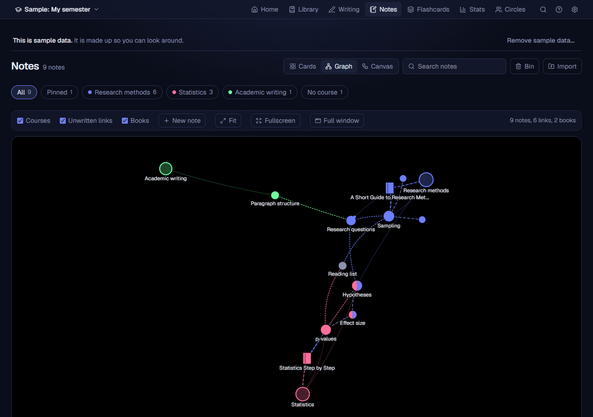
- The tick boxes Courses, Unwritten links and Books show or hide those kinds of dots; Fit fits everything in view. Your choices are remembered.
- Click a dot or a line and its details open in a bubble beside it. A line’s bubble names its kind (the names used in Customise) and its two ends, with an arrow from what is under to what it is under. The bubble follows the dot when you move or zoom the picture, opens on the dot’s other side near the edge of the picture, and has the buttons Open note (or Open in Library for a book), Connect to... and Clear. Clicking empty space closes it.
- The note panel. Open note in a note’s bubble (or a double-click on its dot) shows the note as its card in a panel at the right of the graph, below it on a narrow screen: its text, pictures (a picture of a page too), courses, book and links. A [[link]] on it shows the linked note in the panel. Edit under the card opens the whole editor in the same place: title, text, courses, under, book and page, pictures and pin, with Save and Delete note. Clicking another note’s dot shows that note in the panel. The close button or Esc closes it (in a field, the first Esc leaves the field). It is there in Full window and Fullscreen too. Go to card leaves the graph and shows the note’s card instead.
- New notes from the graph. New note beside Fit, the N key, or a double-click on empty space opens the panel with an empty editor. Add note in a dot’s bubble starts it already under that note, about that book, or in that course. Nothing is saved until you press Add note; the new note’s dot is then selected and brought to the middle.
- Full window (next to Fullscreen) makes the graph fill this browser window, without taking over the screen. It is for people who keep Voynich in a smaller window beside other things. The tick boxes and Fit come along, Esc leaves it, and Open note leaves it before showing the note. It works together with Fullscreen.
- Fullscreen (when your browser allows it) gives the graph the whole screen. Esc leaves it.
- Each course has a home of its own. The courses sit round a ring, each with room for its notes, and a note is drawn to its course’s home (a note in two courses between the two). Choosing one course above the graph, then All, moves nothing: the picture only shows and hides, so two courses never fall into each other. A note with no course sits in the middle of the ring. The first time the graph opens after 0.71 it lays everything out once in this way.
- Zoomed out, courses are named clouds. Below about three quarters of the full size, each course becomes a soft cloud in its colour with its name and number of notes, and the notes’ own names step aside until you zoom in again. A name that would cover a bigger course’s name is left out.
- Loose ends, under the graph, lists the notes joined to nothing (no link either way, not under a note, nothing under them, not about a book) and the books nothing is written about (no note about them and no document citing them). Each opens with a click. It is not shown when there are none.
- The picture stays as you left it. Voynich remembers where each dot is (the same in every browser you use), so the graph looks the same every time you open it, and a dot you move stays where it comes to rest. A new note appears next to what it is connected to. A dot is never left sitting on a line it is not part of: it is moved just off it. Pressing and holding a dot moves nothing; dragging it makes the others step aside, and everything comes to rest as soon as you stop moving. Names that would cover each other are not all written when the picture is zoomed out: the selected dot and what it touches, courses, books and the busiest notes come first, and the rest appear as you zoom in. Changing how hard the lines pull (Customise) lays everything out again.
- Four kinds of line for being under something. A dashed line runs from a book to the course it is under, from a note to the book it is about, and from a note to each note it is under. It pulls the lower dot close, so what is under something gathers around it, and it has a look of its own by how far down it is, so that you can tell the levels apart. A primary note is one about a book (or a note with nothing above it), a secondary note is under a primary note, and a tertiary note is under a secondary note, or anywhere further down. The four lines, from the top: subfield and book (dashed, in the course’s colour), book and primary note (heavy dashed, in the theme’s accent colour), primary and secondary note (dashed, the accent half faded) and secondary and tertiary note (thin dashed, grey). A dashed line is always the hierarchy: a [[link]] is a dotted line in the colour of a course the two notes share (or else the first note’s course; orange when neither has one), and a note in a course has a thin solid line in the course’s colour. In a light theme these automatic colours are darkened as much as needed to stay easy to see. None has an arrowhead until you switch it on in Customise. A note has a line to a course only for the courses you gave it yourself; it reaches the others through what is above it. If a [[link]] also joins two notes, they share that one line. A book that is only connected to its course has a plain thin line in the course’s colour instead. Arrowheads, pointing at the one above, can be switched on in Customise.
- Put under... (next to Connect to... when a note or a book is selected) puts it under the note, book or course you click next: a note goes under a note or a book, a book goes under a course. The shortcut: hold Alt and drag the note or book onto what it goes under (for a book and a course, Connect to... and Shift-drag make a normal connection). See Shortcuts for one for each kind of line. Select an under line and press Disconnect to take a note out from under another, or a book out of its course.
- Shortcuts. Hold keys while you drag from one dot onto another to choose the kind of connection: Shift makes a normal connection (two notes get a [[link]], a note joins a course, a note is about a book), Shift+1 puts a book under a course, Shift+2 a note under a book, Shift+3 or Shift+4 the dragged note under the other note (the message says whether it became a secondary or a tertiary note), Shift+5 adds a note to a course, and Alt puts it under whatever it is dropped on. For the book and course shortcuts either dot can be the one dragged. If the two dots do not fit the keys, nothing changes and a short line says what the keys join. In the graph, N starts a new note and F fits the picture. Every shortcut can be changed in Settings, Shortcuts (press Change, then the new keys; Esc cancels; a key that is already used is refused; Save a note is under Notes). They are named with the room’s own word for its parts (“Course and book”), as the Notes graph settings are. Kept in this browser.
- Change a connection’s type. Click the line between two notes and its bubble shows Type: Link (a [[link]] in the text) or Under (the first note under the second). Switching from a link takes the [[link]] out of the text (the words stay) and puts the note under the other; switching to a link takes it out from under and adds the [[link]] to its Related line. Swap turns an under line round, so the note that was above goes under. For a book and its course the choice is Under or Normal. A comment on the line moves with it, the line stays selected, and one Undo puts everything back. If the new connection cannot be made (for example it would put a note under itself), nothing changes.
- A connection can carry a short comment that keeps its history, so you can write why two notes belong together. The comment is written along the line, tilted with it and cut with “...” to fit between the two dots; select the line to read it in full. A changed or removed comment can be brought back with Restore.
- In Settings, Notes, Notes graph, you can choose the shape of each kind of dot and how the graph moves (it follows your computer’s “reduce motion” setting by default).
- Customise, in the same place, starts closed and is optional. For every kind of line, listed from the most important (it pulls hardest) to the least: subfield and book, book and primary, primary and secondary, secondary and tertiary, links, note and subfield, and suggestions, you can set its style (solid, dashed or dotted), width, colour, opacity and strength (how hard it pulls its two dots together), and for the four lines for being under something whether they have an arrowhead (off to begin with); for every kind of dot its fill colour and opacity and its border colour and width; and the general pull: Spread (how hard dots push apart) and Centre (how hard everything is pulled to the middle). Background sets the picture’s background: automatically it is pitch black in a dark theme (so the dots and lines stand out from it) and the theme’s own in a light one. Automatic keeps the colour the graph picks itself, such as a course’s colour. A line still lights up when its dot is selected and fades when another is. Back to the defaults brings back the usual look. The choices are kept in this browser and used in every room.
Around this note
An open note card (click a card in Grid or List, or any card in Full text) shows Around this note under its text: a small picture of the notes it is joined to (its links, the notes that link to it, the notes it is under and those under it) round it, and theirs further out. It is the same picture every time. Click a dot to open that note. A note joined to many shows the ten nearest and says how many more there are.
The canvas
Press Canvas (beside Cards and Graph) for boards of your own: a canvas is a page where you put notes, books and your own words by hand, wherever you like, and draw lines between them with words on the lines (a concept map: the plan of an essay, the parts of a theory). Unlike the graph, nothing on it moves by itself.
- New canvas makes one and asks its name; the list beside it switches between a room’s canvases, and the last one you looked at opens next time. Rename and Delete are beside it. Deleting a canvas removes only the board and its lines, never the notes or books on it.
- Add a note or a book: type part of its title and pick it. Add words puts words of your own on the board. Each lands in the middle of what you see.
- Drag a thing to move it, drag the empty board to move around, and use the mouse wheel or the + and − buttons to zoom.
- Click a thing to select it, then Join to… and click another to draw a line between them (Esc stops). Click a line to select it: Write on the line puts words on it, Remove the line takes it away. Words of your own can be changed with Edit words.
- Take off (or Delete) takes the selected thing off the canvas with its lines. A double-click on a note or a book opens it. A note or book deleted from the room stays on the board, greyed, as gone.
- Canvases are kept with the rest of the room: in the backups, in Download everything, and they go when the room is deleted. Flashcards cannot be put on a canvas yet.

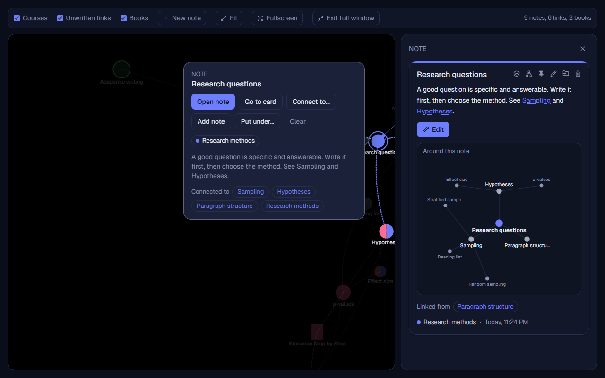
11. The Library: books
Each room’s Library tab has its books and articles, described here; what you write yourself is in Writing, the tab beside it. The hall’s Library has every book of every room, and books you keep in the hall (see The hall’s books below).

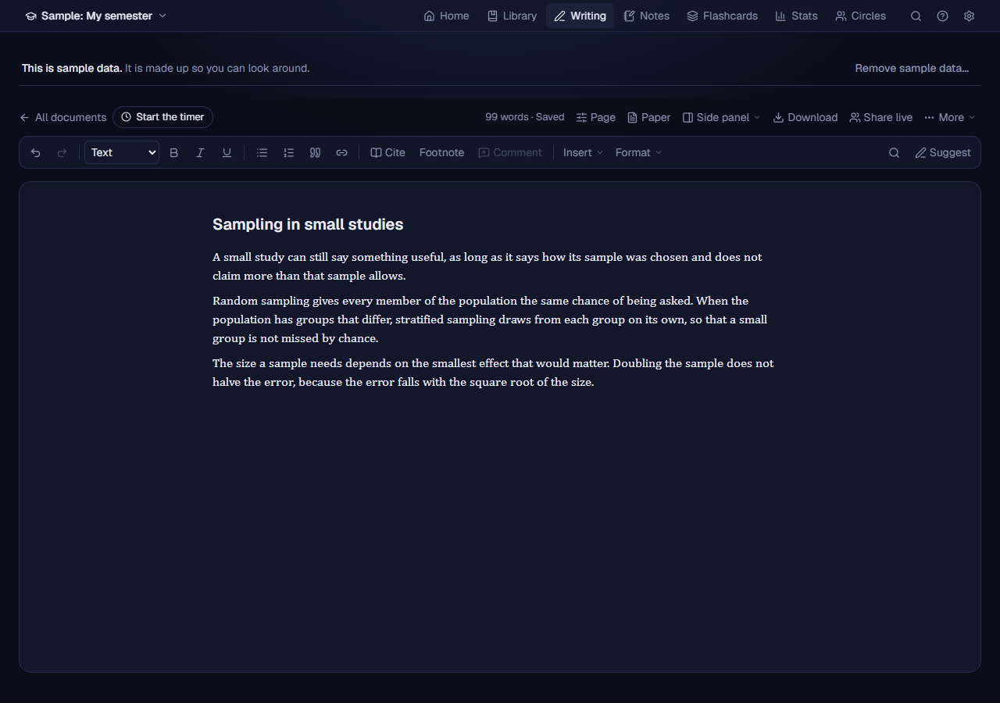

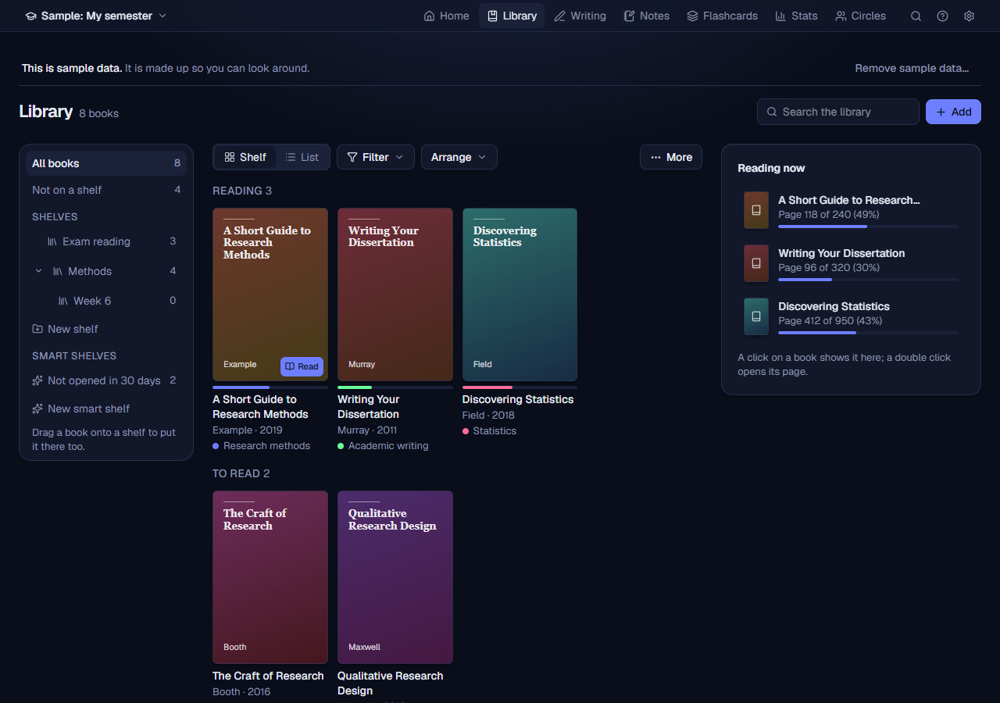
These look like the same book: when two books of a room have exactly the same file (before 0.103, Take off the list in a circle could make a second book of a file already made into one), a box at the top of the Library lists them, each with its highlights and sessions, to open or Delete this copy (asked first). Nothing is deleted on its own; the box’s close button hides it until next time.
Tidy titles (from 0.109): when books are named after the file they were downloaded as (“Title -- Author -- 2024 -- Publisher -- isbn13 978… -- 548c9f… -- Anna’s Archive”, “Author - Title (1967, Publisher) - libgen.li”, “Title (Author) (z-library.sk, 1lib.sk)”), a line at the top of the Library says how many. Tidy titles shows each before and after, ticked; untick any to leave as they are, then Tidy all. The title becomes the book’s own, and the authors, year, publisher and ISBN the name holds are added where the book has none (never written over). Nothing changes until you press it. A PDF or EPUB dropped into the Library is read the same way when the file itself says nothing better, and the circles’ feed says a sent book’s title, not its file name.
Adding a text
Press Add. In the box, type:
- an ISBN: finds that one book (Open Library first, then Google Books for missing details);
- a DOI: finds that article or chapter on Crossref (or DataCite, which holds the DOIs Crossref does not, such as Zenodo’s);
- an arXiv number (
arXiv:1706.03762, or an arxiv.org link): finds that preprint; - words: searches Open Library for books and Crossref for articles and chapters, and also ISBNdb and Google Books if you saved their keys (see below).

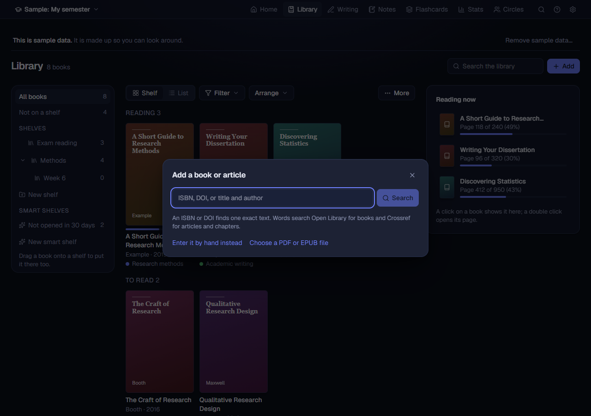
Pick a result, check and correct the details (title, authors, year, publisher, pages, edition...) and save. If you choose a course for the book, Voynich asks whether to put the book under that course or to make it a normal connection (see Books under courses, notes under books). Enter it by hand instead skips the search entirely, and Choose a PDF or EPUB file adds books from files, each with its file (the same as dropping them, below). When a book comes from a search, Voynich also keeps its cover picture.
Dropping files. Drag PDF or EPUB files onto the Library and each becomes a book with its file attached. Voynich reads from the file what it can: the title and authors, the number of pages, and a cover (the first page of a PDF, the cover picture of an EPUB). If the file names its ISBN, Voynich also looks the book up (as Search does) to fill in the publisher, year, edition and the shop cover. An article with no ISBN is looked up by the DOI printed on its first page, or by the arXiv number stamped down the side of a preprint: its real title (not the “Microsoft Word - final.docx” many PDFs carry), authors, journal, volume and issue come from that; Look up dropped books in Settings, Reading, Book search, turns that off.
The shelf and the list
One row of tools sits above the books: Shelf or List, Filter, Arrange and More. Each room (and the hall) remembers your choices in each browser.
- Shelf: each book’s cover, with its title, authors, year and course under it and a thin line for how far you are. A book with a file has Read on its cover; its ... menu (on the cover when the pointer is over it, always on a phone) changes the status, opens Edit details, moves it (into a room, or to the hall) and deletes it. +1 inside means a chapter or an article is under it. Click the cover or the title to open the book’s own page.
- List: a row for each book, with its course, author, year, status, progress and when you last read it. Click a column’s heading to sort by it. Chapters and articles are indented under the book they are in.
- Continue reading, at the top when you look at all your books grouped by anything but status (grouped by status, the Reading group is already first): the books you are reading, last read first; one click opens the reader where you left it.
- Filter shows only one course, one kind of text, those with a file to read or those with notes; the button says how many filters are on, and Show everything clears them. Arrange groups them by status, course, shelf, author, year or nothing (the hall’s Library also by room) and sorts them by last read, last added, title (a leading The or A aside), author, year or progress.
- Covers: a book without a picture has a made cover, its title and author on its colour. Find missing covers in More takes each cover from the book’s own file (a PDF’s first page, an EPUB’s cover picture) or, for a book with an ISBN, from Open Library. Hide cover pictures is there too, and so are New shelf (before there is one) and Import and export.
Beside the list. On a window 1280 pixels wide or more, the Library has three parts: your shelves, the books, and at the right the book you click. A click on a book shows it there (its cover, status, course and how far you are, Read and Open its page, its notes, its flashcards, its last reading sessions and the books inside it); a double click opens its own page, and Esc or the X puts it away. With no book chosen, that part shows Reading now, the books you are reading with how far you are, and Continue reading is not shown above the books.
A book’s own page
Click a book on the shelf or in the list to open its own page (on a wide window, double-click it), where everything about it is together:
- At the top: the cover and details, the status (change it there), the course, the book it is part of, how far you are with the pace and time left, Now on page and Finish by (a reading plan: the pages a day it takes), then Read (or Continue reading), Notes and Edit details.
- Tiles: the notes and highlights about it, its flashcards (how many are due), the time read and the documents that cite it; each tile takes you to its part of the page (Flashcards to the Flashcards tab), and that part leads on (Open in Notes, All its sessions).
- Notes about it with their pages, its highlights that have no note, the chapters and articles inside it, and the latest reading logged against it.
- Where it is kept: the shelves it is on (its room’s, and the hall’s), each with × to take it off and Add... for another; whether it is under its course (its notes count in the course too) or only connected to it; and the book it is part of. File: attach, replace or remove its PDF or EPUB. Citation: the reference in the style you choose, with Copy.

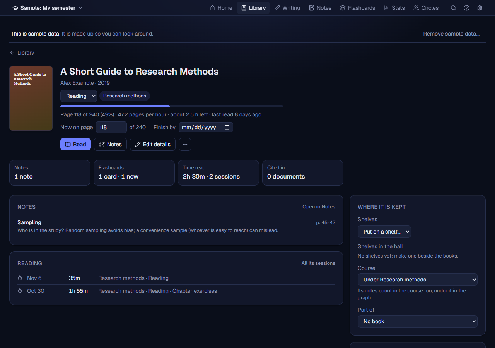
Links to a book from elsewhere (a note’s book, a flashcard, the graph, search, the reader’s way back) open this page.
Shelves, smart shelves and books under books
- Shelves. The panel beside the books holds your own shelves (it shows once there is one: make the first with More, New shelf; on a phone or a narrow window it folds behind a Shelves button above the books), for books and documents alike (they were called folders before 0.41): New shelf, and on a shelf New shelf inside, rename and delete. Two shelves side by side cannot have the same name (“There is already a shelf of that name here”); in different places they can. A book or a document can be on several shelves. Click a shelf to show what is on it (and on the shelves inside it); its number counts each once. A shelf with shelves inside has an arrow to close it and open it again, and a closed shelf stays closed in that browser. All books and Not on a shelf are at the top. Put a book on a shelf by dragging it onto the shelf (it stays on its other shelves too), or with Add... on its page. Deleting a shelf keeps what was on it: it goes onto the shelf above (or onto none). Your folders from before 0.41 became shelves, with everything that was in them.
- Smart shelves hold what their rules pick, and nothing is put on them by hand: New smart shelf starts from a ready-made one (Has a PDF or EPUB, Not opened in 30 days, Finished this year, With notes; for documents Due this month, Over 5,000 words, Edited this week) or your own: words in the title or authors, the status, a file, notes, days since it was opened. Its pencil changes the rules.
- Choosing several books. More, Choose several books, puts a tick on each cover (or row). Pick books, or Choose all, and the bar at the bottom puts them on a shelf, takes them off the shelf you are looking at, sets their status or course, moves them to the hall or another room, copies their references (APA) to paste in a document, or deletes them.
- Books under books. Part of on a book’s page puts it under another book, for a chapter, a volume of a series or an article in a collection. On the shelf its book says +1 inside; in the list it is folded under that book until you open it, at any depth. A book cannot go under itself or a book under it.
The hall’s books
The hall’s Library keeps books that belong to no room: anything you read in general. Drop PDF or EPUB files on it, or Add a book by its ISBN or title, as in a Library. They are read in the same reader, with highlights, text boxes, drawings, notes (the hall’s), Ask and the timer; flashcards belong to a room. It also lists every room’s books, grouped by room at first (the hall’s own first), and the rooms are a filter in the panel beside them; every book can be edited here (its room’s courses to choose from, for a room’s book). The hall’s shelves are its own, and hold any book: a book in a room can be on a shelf here beside the hall’s own books, and keeps its shelves in its room’s Library (a book can be on Syntax in its room and on Linguistics here). Drag a book onto a shelf, or Add... under Shelves in the hall on its page; a shelf shows its books together, whatever room each is in. A book can go under another book of the same room, or of none. Move into a room, in the ... menu of a book of the hall, moves it there, with its file and highlights, when it belongs to a course there. Move it to the hall does the opposite for a book that has no notes, sessions, flashcards or citations yet.
Reading a text
- Status: To read, Reading, Paused, Read. Starting to read and finishing are dated for you.
- Finish by: a day to finish the book by (a book being read, paused or on the to-read pile). With its number of pages, Voynich says how many pages a day that takes from the page you are on, counting today and that day (“12 pages a day to finish by 30 Nov”), here and on the room’s Home; once the day has passed it says how many pages are left. Without the number of pages it says to add them (Edit details) to see the pages a day. Empty the box to drop the plan.
- Now on page: type the page you are on. Voynich shows the percent done, pages per hour from your timed sessions, and the time left (“about 4 h left”). Settings, Books (in any room) can also add a guess of how many weeks that is at your recent pace; it is off by default because it is only a rough guess, and the hours are useful on their own.
- Pick the text in the timer and the session counts towards it (“4h in 3 sessions, last today”).
- Notes about a text show how many there are, and can name the page they are about. 3 notes opens the Notes tab showing only them, and the time read (4h in 3 sessions) opens its sessions in Stats. Cited in lists the documents that cite the book, and the course chip opens the course’s page.
- Filter by course, search with Search the library, and use Covers to show or hide the pictures.
- A PDF or EPUB of the book: edit the book and choose Attach a PDF or EPUB (up to 500 MB). Voynich keeps its own copy in a
booksfolder next to your data and never changes your file. The book then has a Read button (see Reading). Replace and Remove are in the same place; removing the file keeps the book, its notes and its highlights. Deleting the book deletes Voynich’s copy of the file. A book whose file is not on this computer (after moving to a new one, for example) says so; attach the file again and it is back, with its highlights. - Find a free PDF: an article with a DOI and no file yet has this beside Attach. It asks Unpaywall, which knows the legal free copies (the publisher’s open version, a university repository, arXiv), and attaches the first real PDF it names, as if you had attached it. Unpaywall asks for an email address with every question, so give yours once in Settings, Reading, Book search; Voynich never sends one of its own. Nothing is asked until you press it, and a file is never replaced. When Unpaywall knows no free copy, or none of its copies can be downloaded as a PDF (some publishers only show a page), it says so.
Citations and sharing
Import and export (below the list) copies your citations as BibTeX or RIS for a reference manager or paper, and reads those formats back in.
From Zotero on this computer (in the same place) brings in a whole Zotero library. Leave the box empty for Zotero’s usual folder (Zotero in your home folder), or type the folder Zotero keeps its data in (Zotero shows it under Settings, Advanced, Files and Folders). Look at it says how many items are new, in how many collections, with how many highlights and notes; Bring in adds them:
- each item as a book, with its authors, year, publisher, DOI, ISBN and the rest;
- each collection as a shelf (collections inside collections as shelves inside shelves), with its items on it;
- the highlights and comments made in Zotero’s reader, as notes about that book at their page, and the notes on an item as notes about it;
- if you tick it, each item’s PDF or EPUB, copied (Voynich says how much that is first).
Zotero can stay open: Voynich reads a copy of its database and never changes anything of Zotero’s. Items you already have (the same ISBN, DOI, or title, year and first author) are left as they are, so it can be run again later for what is new. Items in Zotero’s bin are left out.
Better search with keys (optional)
Open Library and Crossref are free but do not know every edition. In Settings, Reading, Book search, you can add an ISBNdb key (a paid service with a short free trial, with a large catalogue in many languages) and/or a Google Books key (free, with limits; you create it in Google Cloud Console). A key is checked when you save it, kept only on your computer, never shown again, and sent only to its own service.
12. Reading
A book with a PDF or EPUB attached (see The Library) opens in Voynich with Read. The book, its notes and its highlights stay on your computer, and the reader asks nothing of any other site: everything it shows comes from Voynich itself.

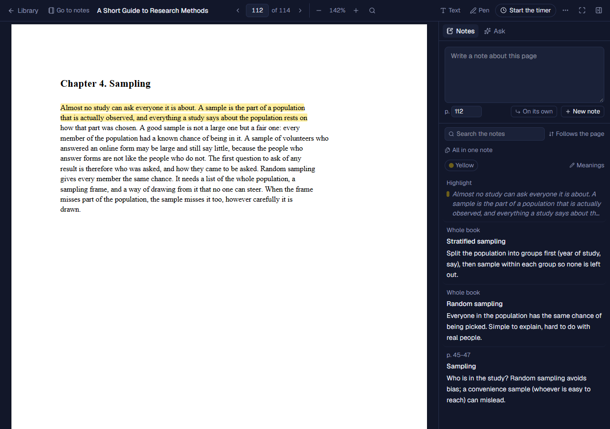
Reading a PDF
- The bar along the top has the way back (Library, or The hall for a book of the hall), Contents (the PDF’s own contents list when it has one, its Pages and your bookmarks), Bookmark this place (see Bookmarks), Go to notes and the title on the left; the page in the middle (the page box shows the page you are on, of how many: type another and press Enter, or use the arrows), the zoom with its size in percent, and search; and on the right the tools: Text, Pen, the timer, More (…) with Save with notes, Read another book beside, Share pages, Dim the pages, Night pages, Picture of part of a page, Two pages side by side, Text boxes beside the page and Page numbers do not match?, and the button that shows or hides the side panel (notes and Ask). Page Down and Page Up go a page on or back, Home and End to the first and the last page, G to the page box (type a page, then Enter), and H highlights the words you selected in the colour you used last. All of them can be changed in Settings, Shortcuts.
- Back to where you were. A link in the book (a footnote, a reference, a line of its contents) takes you to the place it points to, the line itself and not only its page. After a link, the contents, the page box, a page in Pages, a bookmark or a note in the panel, a small button beside the page number names where you were (p. 12) and takes you back there, as a browser’s Back does (Alt+Left); the arrow after it goes forward again (Alt+Right). An EPUB has the same, by chapter.
- Pages. Contents has a Pages tab with every page of the PDF small, as Acrobat and Zotero have it: the way to find a chapter by its look in a scanned book, which seldom has a contents list of its own (such a book opens on it). The page you are on is marked; a click goes to a page.
- Search in the book (or press /) finds words on every page and marks them; Enter goes to the next one. A word broken over two lines is found too.
- The minus and plus buttons zoom; the size between them fits the width of the window again (the width most pages have, so a cover or a foldout of another size does not decide it). Dim the pages (under More) makes white pages softer on a dark theme; Night pages turns them to light letters on a dark page, for reading in the dark, with your highlights in their colours (pictures in the book are turned too). Both are kept in this browser.
- Two pages side by side (under More, in a window at least 900 pixels wide) shows a PDF as a printed book opens: the cover alone, then pages 2 and 3, 4 and 5, so the odd pages are on the right. A page wider than it is tall (a foldout, or a scan of two pages at once) stays alone. Page Down and Page Up turn both pages, and fitting the width fits the two. In a narrower window the pages go back to one a row. Kept in this browser.
- Highlights made in another program. A PDF can carry highlights and notes made elsewhere (in Acrobat, on an iPad, in Zotero’s or Voynich’s own saved copy with notes). The reader shows them on the page; when it opens such a book it counts them and offers Bring them in: each highlight becomes yours, with the words under it, its colour (Acrobat’s yellow is Voynich’s yellow; another colour is kept as it is) and its comment as a note about it, and each sticky note becomes a note about its page. Then they are in the notes panel, found by search, quoted and changed like your own, and the page draws your copies instead of the PDF’s. A highlight over a scanned page with no text under it keeps where it is instead of its words. Not now does not ask again in this browser. The PDF itself is never changed.
- Page numbers. The reader shows the page number printed in the book (“p. 45”), not the count of PDF pages, so your notes and citations match the paper book. Most PDFs say their own numbers. If one does not, or its numbers are wrong, go to any page with a number printed on it and choose Page numbers do not match? under More, and type that number: every other page follows from it. It works on every PDF, an excerpt too (a chapter scanned on its own, whose first page is printed 45). On a PDF that has numbers of its own, yours are used instead, and Use the PDF’s own page numbers under More goes back to them. The book’s Now on page in the Library follows the page you read, forward only: going back to the contents or an earlier chapter does not undo your progress (change it by hand in the Library if you need to).
- Close the book and open it again: it opens where you were. A file you open for the first time opens at the page the book is at (the progress you kept by hand, for example on paper).
- A scanned book (pictures of pages) has no text of its own, so the reader offers to read it (see Scanned books below). A PDF locked with a password asks for it; Voynich does not keep the password.
Scanned books: reading their text (OCR)
A PDF made of pictures of pages has no text, so at first its words cannot be selected, highlighted, searched or asked about. The bar above such a book offers to read the text from the pictures (OCR), on your computer.
- Choose the languages the book is in (up to three; English to start with, and... adds another, the × takes one out), then press Read the text. Choosing the right languages matters: letters like ö, ğ and ı are read well only when Turkish is among them.
- The first time a language is used, Voynich downloads its reading data (1 to 6 MB) once and keeps it; the bar says which and how much before you press. The pages themselves are read on this computer and never leave it (see Privacy).
- It starts at the page you are on and takes a few seconds a page; the bar shows how far it has come and about how long is left. You can go on reading meanwhile: each page you see gets its text as soon as it is read. Stop, or closing the book, stops it; next time the bar says how many pages are read, with Go on reading the text and Forget it.
- When every page is read, the bar goes, and the book works as a PDF with text: select words to highlight, quote, Look up or ask about them, search in the book, find it with Search everything, quote it from Writing, and ask about the whole book. Your highlights stay where they are.
- What OCR reads is kept with the book, in your data, and goes when the book’s file is removed or replaced. How good it is depends on the scan: a clean scan of print reads almost without mistakes; handwriting, very small print, unusual typefaces or a crooked page less well. Check a quotation against the page before you rely on it.
- It reads only pages that have no text of their own, so a PDF where only some pages are scans is offered it only if Voynich found no text when it first opened the book.
- A book whose own text is garbled. Some scanned books carry text that an old OCR made badly: the page looks right, but its text says “kavram1 iizerine” for “kavramı üzerine”, with letters lost. Everything that uses the text gets those words: selecting, copying, Quote, Ask, search and Read aloud. When Voynich opens a book it looks at a few pages, and if their text is garbled the same bar offers Read the text again: OCR reads every page from its picture, on this computer, and its text is used instead of the PDF’s. Not now hides the bar until Voynich starts again. (A book whose text only lacks some accents, with nothing else wrong, is not noticed.)
Looking up a word
Select a word or a short phrase (up to six words) and press Look up. It is a dictionary, with no AI (the Ask tab is where the AI explains things). It shows each entry for the word: its kind of word, its pronunciation (pinyin for Chinese), its meanings with their labels (formal, transitive, plural) and an example with its English. A form leads to its word: ging shows that it is a past of gehen, and the meanings of gehen below it; Häuser leads to Haus, gitti to gitmek. A word it leads to is a link, which looks it up in turn (Back returns), the box at the top takes any word you type, and the speaker says it with your Read aloud voice. A long word the dictionary does not list (Turkish words carry many endings) is tried shorter, and the nearest word found is shown as a guess, marked as one. The book’s language is looked in first (an EPUB says which; for a PDF Voynich guesses from the sentence), then any other language that has the word. Make a card opens Make a flashcard with the word on the front and its meanings and the sentence on the back, to change before saving.
Where the words come from (Settings, Reading, Look up):
- Dictionaries on this computer, if you download them there: English (about 120 MB), German, Spanish, Russian, Italian, Portuguese, French, Turkish, Dutch (12 to 44 MB each) and Chinese (8 MB). They are made from Wiktionary and, for Chinese, from CC-CEDICT, explain every word in English, work with no internet and send nothing. Each is checked against a fingerprint in Voynich before it is kept. Downloading and removing them is done on the computer; a paired phone uses the computer’s.
- Wiktionary online, for a word no downloaded dictionary has: only the word is sent, never its sentence or the book, and the answer is kept on this computer, so the word shows again offline. Offline only turns this off.
Reading an EPUB
An EPUB opens in the same reader, one chapter at a time, with the same bar (the chapter and how far in, with arrows for the chapter before and after, in the middle), notes, highlights and questions. Text size and page colour (the Aa button) sets the size of the letters, the space between lines, the margins, and the page colour (your theme’s, or sepia). A link to another chapter goes there; a link to a web page asks before it opens. The book’s own scripts never run. A book locked by the shop that sold it (DRM) cannot be opened here, and the reader says so.
Text (the T in the bar) writes a text box beside a paragraph: press it and click the paragraph, on the side of the text where the box should go, then type (leaving the box or Ctrl+Enter keeps it, Esc drops it). As an EPUB’s text moves with the text size and the window, the box belongs to its paragraph and is shown in the margin next to it wherever that paragraph is. Where the margin has no room (a phone), a small mark stands by the paragraph and a tap shows the box. Its menu has its colour, its text size, Edit (or double-click it), Make it a note (its title then shows at its top), Move to the other side and Delete text box. The pen is for PDFs only: drawings cannot stay on the words they marked once an EPUB’s text moves.
Bookmarks
Voynich always remembers where you stopped. A bookmark is a place of your own to come back to, as many as you like in a book, in a PDF or an EPUB.
- Bookmark this place (the ribbon on the bar, on a phone too) marks the top of the screen: in a PDF its page and how far down it, in an EPUB the words there, so it stays right when you change the text size or turn your phone. It is named by where it is and its first words (“p. 84: Aspect has to do with the internal...”).
- The ribbon on the bar is filled while a bookmark is on the screen; pressing it then takes the bookmark away.
- A small ribbon in the page’s right margin shows where each bookmark is; tap it to see it in the list.
- Contents has a Bookmarks tab (a book with no contents of its own opens straight to it): your bookmarks in the order of the book. Click one to go there; Rename (the pencil) gives it a name of your own, Remove takes it away.
- Bookmarks are yours: they are synced to your other computers and kept in your copies of your data, but never shared in circles, and not shown with the book’s highlights or in Search everything.
Notes and highlights
- The Notes panel beside the book is for writing while you read. What you type there becomes an ordinary note about this book and the page you are on, saved as you type. New note (or N) starts another, and the × in the box clears it. A quote goes into the note being written; when the box holds a note you opened to change, a quote starts a new note instead.
- Select words on the page: Quote puts them in your note with their page, Highlight marks them in one of three colours (yellow, green, blue), Copy cited copies them in quotation marks with their citation, to paste anywhere (“the words” (Odden 2005: 212)), in the citation style of the room’s last document in Writing, or APA when there is none (in an EPUB, whose chapters are not pages, the citation has no page), Read aloud reads them with the computer’s own voice, and Ask asks the AI about them (below). Highlighting does not open the Notes panel; Write a note in the highlight’s menu does. The + after the colours adds a colour of your own (up to eight, the same in every browser you use); it is used like the others, in Save with notes too. A highlight made in pink, orange, purple, red or teal (offered before 0.53) keeps its colour, which shows beside the three in its menu. Lines that are close together are highlighted one by one, without marking the space between them twice. On a phone these buttons are in a bar along the bottom of the screen, out of the way of the phone’s own menu by the words (Copy, Look Up, Translate); words selected where it comes are moved up above it.
- Click a highlight to change its colour, open or write its note, Make a flashcard of it (the highlighted words are the answer), or remove it; removing it keeps its note. Its Tags field takes words to find it by, with spaces or commas between them (
ling::phonologyputs phonology under ling, as flashcards’ tags do); Enter, leaving the field or closing the menu keeps them. The notes panel shows a highlight’s tags under it, and a click on one searches the panel for it (#exam). Highlights stay on their words at any zoom or text size, and are kept in Voynich, never written into your file. - In a PDF, Text writes on the page itself, in a margin or any empty space: press it, click where the text goes and type (leaving the box or Ctrl+Enter keeps it, Esc drops it). Drag a text box to move it, drag its right edge to make it wider, and double-click it to change the text: the caret goes where you double-clicked and the page stays where it is, however long the box. A box that runs past the bottom of its page stays on top of the next page there. Opening another box while you write keeps what you wrote in the first. A text box can also go beside the page, in the dark space to its left or right: click there with Text on, or drag a box there. If you would rather not, turn off Text boxes beside the page under More: new and moved boxes then stay on the page, and ones already beside it stay where they are (kept in this browser). New text boxes start at 8 pt. While you write, the small bar over the box has Raise and Lower (Ctrl+Up, Ctrl+Down): they turn the letter before the cursor (or the selected letters) into a raised or lowered one, as in kʲ or x₂, for the letters and numbers that have one (with the IPA’s). Click a box for its colour, its text size, Make it a note (it asks for the note’s title and where it goes, on its own or under a note you find by typing; then it becomes an ordinary note about the book at that page, and the box shows the note: its title on the first line, then its text, with numbered and bulleted lines kept; the Notes panel stays as it was) and Delete text box, which can be undone for a few seconds and keeps the note. A click anywhere else closes its menu. Lock text boxes under More keeps every box where it is: dragging one does nothing, a finger on a box scrolls the page (useful on a phone), and a click or tap still opens its menu. It is remembered in each browser, so the boxes can be locked on the phone and movable on the computer.
- In a PDF, Pen writes or draws on the page by hand (with the mouse, a pen or a finger): choose the ink (black, blue, red or green) and the thickness, and Undo the last line takes lines back one by one. Done (or Esc) puts the pen down. Click a line later to change its ink or thickness or to delete it.
- In a PDF, Picture of part of a page (under More) takes a figure, a table or any part of a page as a picture: drag over it and it becomes a new note about the book at that page, with the picture drawn again from the PDF, sharper than the screen shows it. The notes panel opens on it to write about it. Esc or Cancel stops without one.
- What the colours mean: above the list in the Notes panel the colours of the book’s highlights are shown; Meanings lets you say what each colour means to you (yellow: a definition, green: an example). The meaning is then shown beside it and on the colour buttons, the same in every book and browser. Click a colour there to list only its highlights; click it again for all.
- Read aloud: choose Read aloud under More (in an EPUB, the speaker button), then click the sentence to start from (the sentence under the mouse lights up; From the top of this page starts at the top, Esc or Cancel stops choosing). The voice reads on from there, page after page (in an EPUB, chapter after chapter), lighting up the sentence it reads and turning the pages to keep it in view, until the end of the book. The bar at the foot of the window shows the page, with Back a sentence, Pause (and Go on reading), Next sentence and Stop reading aloud. Words selected on the page offer Read from here (from their sentence, and on) and Read aloud (only those words). The voice is chosen in Settings, Reading, Read aloud:
- A natural voice (the first choice): a voice made on this computer by a voice program, which sounds close to a person. It is downloaded once, when you press Download there (or Download in the offer Read aloud makes the first time), and the size is shown first: the voice program (about 10 MB) and Kokoro for English and Chinese (about 350 MB), or a voice of its own for each of 38 other languages, German and Turkish among them (about 70 MB each). Choose the language, then its voice (Kokoro has several for American and British English and for Mandarin), and Listen to it. A book is read in its language: an EPUB says which, and for a PDF Voynich guesses from the words. Reading starts within a second and goes on a few sentences ahead of what you hear. Nothing is sent anywhere: the voice is a program on this computer, and a paired phone hears the computer’s voice too. Downloading and removing voices is done on the computer.
- This device’s own voices: the voices of the computer or phone you use, with nothing to download, the better ones listed first. They also read a language that has no natural voice (Japanese, for example), and whenever the natural voice is not there. On an iPhone or iPad, the Enhanced and Premium voices added in Settings do not show here: iOS does not offer them to web pages, only to its own apps. For a natural voice on an iPhone, choose A natural voice, which the computer makes and the phone plays.
- All in one note (above the list in the Notes panel) makes one new note about the book of every highlight and text box in it, in the order of the book (page by page and down each page; in an EPUB, chapter by chapter): highlights as quotations with their page, text boxes as their words. Drawings are left out. A highlight’s tags follow it on a line of their own, as
#tags(a space inside one becomes_), as Obsidian writes them. A note holds 2,000,000 characters; when they do not all fit, it has the first ones and says how many. - On a phone, held either way, a tap on the page hides the bar at the top, so the book has the whole screen, and another tap brings it back; the page stays where it is under your finger. A swipe scrolls as before, and a tap on a link, a highlight or a text box does what it always does. The first time, a short line says how to bring the bar back. With the phone on its side the bar is a single line. When Contents, the text size or another of the bar’s menus is open, a tap closes it and the bar stays. On a phone Contents opens over the page. (On an iPhone a tap on a highlight in an EPUB hides the bar too, rather than opening its menu.)
- On a computer, Full screen (the square at the right end of the reader’s bar, or F) gives the book the whole screen, with its notes if they are open. The bar goes out of sight; move the mouse to the top edge and it comes over the page, which does not move, and stays while the mouse is on it or you use it. F, Esc or the bar’s button leave full screen. While it is full screen, Voynich’s notices from elsewhere (a message, a call) do not show; sounds still play.
- Go to notes (next to Contents; under More on a phone) opens the Notes tab; the Library tab brings you back to the book, at the page where you were.
- Read another book beside (under More; in an EPUB, the button with two books next to Aa) opens a second PDF or EPUB of the same room beside the one you read, to read two texts on one topic side by side. Each keeps its own page. In the second book, select words to Highlight them there (in any colour) or Quote in my note: the quotation goes into the note you are writing, followed by the other book’s title and page, and the note stays about the first book. The buttons on its bar put it on the other side, choose another book or close it. Which book is beside, and on which side, is remembered for each book. An EPUB beside is read chapter by chapter. On a phone-sized screen there is no room for two, so the second book is not shown there.
- Open in its own window (the arrow out of a box, on the bar of the book beside) moves that book into a window of its own, its reader at the page it was on, to put on another screen. The book beside closes in the first window. Writing has the same button (see Writing). If nothing opens, your browser blocked the new window: allow pop-ups for Voynich.
- Save with notes (a PDF) saves a copy of the book with your highlights (and the notes written about them, as their comments), text boxes and drawings written into the file as ordinary PDF annotations, so whoever you share it with sees them in Adobe Acrobat, Edge, Chrome, Brave, Firefox or Preview. Voynich's own copy of the book is not changed, so your highlights stay yours to change. A page with a text box beside it is made wider in the copy, with white paper on both sides, so that the box is on the page. The text of a text box is written with the Noto Sans font, which has Turkish, the IPA, Greek and Cyrillic; Chinese, Japanese or Korean in a text box shows as empty boxes on the page, though the full text is in the annotation's comment. A PDF locked with a password cannot be written into.
- Share pages (under More) saves or shares part of a PDF: This page, or Pages from one to another, as a PDF, or the one page as a PNG picture, with or without your highlights, notes, text boxes and drawings. Share... opens your computer’s own way to share when it has one.
- The Notes panel lists the book’s notes by page and, to begin with, Follows the page: the last page first, kept scrolled to the notes of the page you are reading (it waits while the pointer is on the list). The button above the list switches to First page first or Last page first, which stay put (Voynich remembers which). Quotations are shown as quotations. Click one to go to its page, with its passage lit up. Notes under a note about the book that have no book of their own are listed too. They are ordinary notes: they are also in the Notes tab and the graph, as notes about the book. Delete note (point at a note) deletes it; Undo brings it back for a few seconds. Search the notes above the list keeps only the notes and highlights with every word you type (in any case, with or without accents); Esc empties it.
- Whole note (under the note being written) opens the whole note: its subfields, pictures, and Under, the notes it is put under, which is its place in the graph. A note written in the reader goes on its own, linked to the book, unless you choose otherwise with the button left of New note: it shows where new notes go (On its own, or Under a note), and a click lets you find a note to put them under. The choice is remembered for the book, and a new note you are writing moves there too.
Asking about what you read
The Ask tab (with the AI tab turned on, see The AI tab) answers questions about the words you selected or the page you are on, with quick ones such as Explain this or Translate to English. It says which AI answers and where it runs. Only your question and that passage are sent, and only when you ask. The first time you open Ask on a book, it is prepared for questions by itself (from 0.72; before, it waited for a button), reading the whole book into the search index once, in this browser, with a line saying how far it is and a way to stop it (Prepare goes on from there later); then you can ask the whole book and your notes, and the answer’s citations open the reader at the right page. Conversations are saved with the book and are also in the AI tab.
The timer
Opening a book does not start the timer. Start the timer in the reader starts it for this book (choose the course and activity); Started earlier? starts it counting from 5 minutes to an hour ago. While it runs, the time shows on the bar: click it to move the start back. Stop saves an ordinary session, as on Home, and asks for a note for the session (optional), already filled in with the pages you read (“pp. 12-30”; for an EPUB, the chapters). The notes you wrote in the reader while it ran belong to that session.
13. Writing
Writing, the tab beside Library, has what you write yourself: essays, articles, chapters, a talk. A document is saved as you type, in your own data on your computer, and nothing in it is sent anywhere. Writing and Library each remember where you were: go to Notes or the graph and come back, and the document you were writing (with its panel or its book's PDF open at the same page), or the book you were reading, is there again.
Your documents
- New document starts one. The arrow beside it starts one from a template: Term paper (introduction, background, discussion, conclusion), Thesis chapter (numbered sections and a table of contents), Journal article (abstract, introduction, data and method, analysis, discussion, conclusion) or Conference abstract (a word limit of 500). The parts are headings to write under; everything can be changed as in any document. The list shows the newest first, with the number of words and when it was last changed. Search with Search your documents and filter by course.
- Import opens a Word file (.docx) or a plain text file as a new document, to go on writing it here: headings, lists, tables, quotations, bold and the rest, links, pictures and footnotes come with it, and so does the look of the paper: its font, text size, line spacing and margins and where its page numbers are (set under Page), each paragraph’s lining up (centred, justified), first-line and hanging indents, paragraphs moved in from the left (as quotations, in their own text size: a 10 pt quotation stays 10 pt), a paragraph’s own line spacing (a single-spaced quotation in a 1.5-spaced paper stays single-spaced), the looks of the headings and of the title (a Heading 1 the size of the text, bold and centred, stays so; Page, Title and headings shows them, and changes them), empty lines, page breaks and section breaks (a title page stays on its own page, in the middle of it if it was so in Word, and each chapter that started a new page still does), the page numbers of each section (front pages numbered i, ii, the text from 1 again, none on a chapter’s first page), footnotes with their italics and bold, and Word’s table of contents, which becomes Voynich’s under its own title. The document is named after the file’s Title (or first heading), which stays in the text as it was; otherwise after the file’s name. The font is the one most of the text is in (a Word file often sets Times New Roman on its words over a Calibri or Aptos style); one Voynich does not have becomes the nearest of its kind (Arial for a sans font, Times New Roman otherwise), never the font of the document you wrote before. Your file is not changed or kept. What Word has and Voynich does not (fonts of single words other than the text’s, the colours of headings, comments, tracked changes, drawings) is left out, and Voynich says when something was. An old .doc file must be saved as .docx in Word first.
- Documents as files (Windows; on a Mac, opening them from the Finder). A document can also live in a folder, as a file. Voynich documents (.vyn) hold a document whole: the paper with its comments and suggested changes, its versions, its page settings and citation style, its pictures, and the details of the books it cites (never the books’ files), so whoever opens it in their Voynich sees your citations written out. In Explorer, right-click in a folder, New, Voynich document makes an empty one; double-click it to write in it. A Word file (.docx) opened with Voynich (Explorer’s Open with, or the default, see Opening files with Voynich) is read as Import reads one. Either way the document opens in Writing linked to its file: a bar over it names the file; Save to the file or Ctrl+S writes it back in its own kind (Voynich keeps it as one of your documents too, saving as you write). The first time Voynich saves over a Word file, it keeps the file as it was beside it (“Handout (before Voynich).docx”) and lists what it does not keep (headers and footers other than the page number, text boxes and drawings, fields, your own styles, columns and sections); it writes the file from its own document. If another program changed the file since it was opened, Voynich asks before saving over it. Opening the same file again opens the same document, brought up to date if the file changed elsewhere (the text before is kept in Versions). Keep in Voynich only ends the link: the document stays, the file is left as it is. OpenDocument files (.odt) can be downloaded from Voynich but not opened in it: open one in LibreOffice and save it as .docx first.
- Give a document a course under Page, so it shows under that course.
- Shelves: the same shelves as the Library’s, and smart shelves for documents (see Shelves). Drag a document onto a shelf, or put it on one on its page. The list shows each document’s words, when it last changed, its course, its due day and its shelves; the pencil beside its title opens it in the editor.
- Beside the list. On a window 1280 pixels wide or more, Writing has three parts like the Library: your shelves, the documents, and at the right the document you click, with its words, when it was changed, how it begins, Write and Open its page, the books it cites, the time written on it and its versions. A double click opens its own page; Esc puts it away. With none chosen, the documents changed last are there.
- A document’s own page (click its title; on a wide window, double-click it): how many words it has and a line of how they grew (from its kept versions), its due day, the books it cites (each opening its own page), the time written on it and its sessions, its shelves and its versions, with Open in the editor, the move button and Put in the bin.
- Start the timer in a document times its writing: it starts with the document’s course and a writing activity, has Started earlier?, and the time spent shows next to it (“3h 20m writing”). The sessions are in Stats, Sessions, with a link back to the document.
- More, Move to the bin in a document moves it to the Bin (it asks first). In the Bin, Take out brings it back and Delete for good deletes it and its earlier versions, after asking.
Writing
- Above the document is one row: All documents, the timer, the word count, and Page, Paper, Side panel (Outline, Comments, Notes, Book, Versions, one at a time beside the document), Download, Share live and More (Focus and Move to the bin); in a window narrower than a full laptop screen the buttons show only their pictures (each says its name when you point at it), so they stay on the one row. It stays on screen with the toolbar while the document scrolls; on a phone only the toolbar does, as one row that scrolls sideways, and its menus open at the foot of the screen.
- The toolbar has what is used all the time: undo and redo, the text style (Text; Title and Subtitle, large words for the head of a paper, a chapter or a title page that are not headings, so they are not numbered and not in the outline or the table of contents, and Enter after one goes on in ordinary text; or Heading 1 to 6), bold, italic, underline, bulleted and numbered lists, quotation, link, Cite, Footnote and Comment, then Find and Suggest. Insert has a picture, a table (with buttons to add and remove rows and columns while you are in it), a page break, a table of contents, table and figure captions and their lists, and Cross-ref; and, when the document has Tools for linguistics on, Example, Tree and IPA. Format has the font and text size of the selected words (the first choice is the document’s own), strikethrough, superscript and subscript, and lining up (left, centre, right, or justified with both edges straight).
- Select words and a small bar comes up over them: bold, italic, underline, a link, a comment and Cite.
- Type / at the start of a line (or after a space) for a menu of what can go in: a heading, a list, a quotation, a citation, a footnote, a table, a picture, a page break, a table of contents, a caption, a cross-reference, an example or a tree. Type a few letters to narrow it (/he for the headings), the arrows to choose, Enter to put it in; Esc or a space leaves the / as it is.
- Focus (under More, or Ctrl+Shift+F) leaves only the document: the top bar and the notes above the page are hidden (in the window an empty bar stays at the top, to move the window by) until you press Esc or Leave focus.
- Ctrl+Enter (Cmd+Enter on a Mac) puts a page break where the cursor is: what follows starts a new page in the paper view, the PDF and every download. A page break that falls at the very foot of a full page stays on that page, as in Word, so it never leaves a blank page. It shows as a dashed line; select it and delete it like any block. The words on the line are also a choice of what the page numbers do from there: numbers start again at 1 (the pages before it are then numbered i, ii, iii, as the title page and the contents of a thesis usually are, or 1, 2, 3 if you choose so under Page; a Word file brings its own choice), numbers start again, none on this page, or no number on this page (a chapter’s first page). The table of contents counts a page without a number all the same. When the numbers start again, two more choices appear beside it: 1, 2, 3 or i, ii, iii, and from, the number its first page has (a chapter printed on its own that starts at 47). The last choice on the line moves the numbers from that page on: Numbers bottom centre from here and the others, or No page numbers from here; it holds until a later page break says otherwise, so a preface can be numbered i, ii at the foot and the text 1, 2 at the top right, as Word sections are. Word, OpenDocument and LaTeX files follow it (LaTeX puts its numbers at the foot, centred, whatever the place; a Word file brings each section’s first number and i, ii, iii with it).
- Tab moves a paragraph’s first line in (1.27 cm, as in Word), and the paragraphs you start after it with Enter are moved in too; Shift+Tab, or Backspace at the start of the paragraph, takes it out. In a list, Tab moves the item one level deeper; in a table, to the next cell. The PDF, Word and OpenDocument files keep it. Since Tab stays in the text, Esc leaves it for the toolbar.
- IPA (under Insert) opens the IPA symbols: consonants, vowels, length, stress and tone, and the diacritics (click a diacritic after the letter it goes on).
- Page sets the whole document out: its citation style and course, its font, text size, line spacing (single, 1.15, 1.5, double, or any number), the space after paragraphs, the page margins in centimetres, Page numbers (top or bottom, left, centre or right, and if you like none on the first page; and, when a page break starts the numbers again at 1, whether the pages before it are numbered i, ii, iii or 1, 2, 3), Title and headings (below), A title page in the middle (what comes before the first page break sits halfway down the first page), Number the headings (Heading 1 is 1., 2., a Heading 2 under it 1.1, 1.2, a Heading 3 1.1.1, down to Heading 6; each chapter’s sections count from 1 again, and a Heading 3 straight under a Heading 1 is 3.0.1, as in Word), Tools for linguistics (examples, trees and IPA in Insert and the / menu; off for a plain essay, which changes nothing in the text) and a Word limit: with one, the word count under the text reads “412 / 500 words”, turns amber near the limit and red past it (hover over it for how many are left or over). The PDF, Word and OpenDocument files follow them. A new document starts with the settings of the last one you wrote; an imported Word file has its own (its page numbers, whether its headings are numbered, its title page), never the last document’s. A font that is not on this computer says so; Word or LibreOffice on another computer use their own in its place.
- The document’s name is the line above the pages (or above the text without them): it names the document in Writing’s list and the files you download, and it is never printed on the pages, the PDF or the downloads. A paper’s title is a Title paragraph in the text (Turn into, Title).
- Title and headings (under Page) sets how the Title and each heading level look: the size, bold, italics, centred, and indented as a paragraph’s first line. One press gives a style’s own looks, as their guides set them: APA 7 (all at the text’s size; the title and level 1 centred and bold, level 2 bold, level 3 bold italic, levels 4 and 5 indented: APA runs them into their paragraph, here they stand on their own line), Chicago (Turabian’s plan, all at the text’s size: level 1 centred bold, 2 centred plain, 3 bold, 4 plain, 5 italic), MLA 9 (all at the text’s size, no bold, the title centred; MLA sets no heading levels, so level 1 is plain and the rest italic), or Voynich’s (larger headings). Harvard and the Unified Style Sheet set no looks of their own. Change any line from there; the page view, the PDF, Word and OpenDocument follow. The panel says when the document cites in a style whose looks it does not have.
- Paper shows the document on white A4 pages with its margins, as it prints, so you see where each page ends: a paragraph goes on at the top of the next page, a long table goes on row by row, the footnotes are at the foot of their page and the page numbers in the margin. Click a footnote at the foot of its page to write in it there, as in Word (Ctrl+I, Ctrl+B and Ctrl+U work in it; Enter or Esc leaves it, and one Undo takes the change back). The pages are drawn smaller when the window is narrow. Press it again for one long column. The choice is this computer's, not the document's.
- Book quotes a book straight from its own PDF or EPUB, without a note first: choose a book of your Library that has its file, find words in it (or go to a page with the arrows or by its number), select words on the page shown, and press Quote in the text (in quotation marks) or As a block quotation. They go where the cursor is, with the citation of that page. For a PDF, Show the PDF beside the document shows the book itself, page by page, next to your document, with your highlights: select words on its page and choose Quote in the text or As a block quotation; Highlight too also keeps the quoted words as a highlight in the book (it stays on until you turn it off). Text view goes back to the panel. Open in its own window (on the PDF’s bar, and at the top of the panel) opens the book in the reader in a window of its own, for a second screen.
- Find (the magnifying glass, or Ctrl+F) finds words in the document: every place is marked, the one you are at more strongly, and the bar says which of how many it is. Enter goes to the next place and Shift+Enter to the one before. Match case tells capitals apart, and Whole word finds “tone” but not “tones”. Ctrl+H (Cmd+Shift+H on a Mac) adds Replace with: Replace changes the place you are at and goes on, Replace all changes every place at once, and one Undo puts them all back. Esc closes the bar and leaves the place selected in the text. The words of footnotes and examples, kept in their own forms, are not searched.
- Outline lists the headings beside the document, indented by level and numbered as the document numbers them, the one you are in marked; click one to go there. Add a table of contents at the start puts the list in the document itself, under Contents: it follows the headings as you change them, a click on an entry goes to that heading, and in the paper view (and so in the PDF) each entry has its page. Hover over it to remove it. Word and OpenDocument files get a real table of contents with the headings already in it; Word offers to update it as the file opens, which adds the page numbers (in LibreOffice: right-click it and choose Update Index).
- Notes opens your notes beside the document. Quote it here puts a note in as a quotation, with its citation when the note is about a book and page; Open at p. 45 shows the book there, and Open the note opens it in the Notes tab.
- Versions: while you write, Voynich keeps an earlier version now and then (at most one every ten minutes, the newest 50). Look shows one; Put this version back brings it back, and what was there just before is kept as a version too, so nothing is lost. Compare with now shows what changed since that version, word by word: words added underlined in green, words taken out struck through in red, with how many of each.
Citations and the bibliography
Cite opens your Library: pick a book or article, type the page (“45” or “45-47”) if you like, and press Cite. The citation is written in the style chosen for the document, under Page: APA (7th edition), Chicago (author-date), MLA (9th edition), Harvard (as Cite Them Right has it, with a Reference list), the Unified Style Sheet for Linguistics or IEEE, numbered: the first book you cite is [1], the next new one [2], and a page goes with its number, [2, p. 45]; the references are numbered the same, in the order first cited (IEEE is set by citeproc-js from the Citation Style Language’s own IEEE style, the way Zotero sets it). Changing the style rewrites every citation at once. The bibliography (References, or Works Cited in MLA) is made from the books you cite and stays under the text. In the list of books to cite, an IEEE document shows each book as “Odden 2005”, since its number only exists once it is cited; words copied from a book with Copy with citation take APA’s citation then, as a [1] means nothing outside its document. Click a citation to change its page, to remove it, or to Open the book at p. 45 (a PDF opens beside the document at that page; an EPUB in the reader). A new document takes the style you used last.
Footnotes and examples
- Footnote puts a numbered footnote where the cursor is; type its text, and click its number later to change it (or, in the paper view, click its words at the foot of the page). A footnote can have italics (a book’s title), bold and underlining: Ctrl+I, Ctrl+B, Ctrl+U or the buttons above its box, and every download keeps them. Footnotes are numbered in the order they appear.
- Example adds a numbered linguistic example: (1), (2) and so on, in the order they appear. Type the sentence, its gloss and a free translation. Write the gloss one item per word, with grammatical labels in capitals (
1SG-PST-eat-FV food): each gloss stands under its word, and the labels are shown in small capitals, as the Leipzig Glossing Rules have it. A judgement (*, ?, ??, #, %) goes before the sentence. Add a line makes a set: (1a), (1b). Double-click an example, or press Edit, to change it.
Syntax trees
- Tree adds a syntax tree. Type it in labelled brackets, as linguists write them:
[S [NP the cat] [VP [V sleeps]]]. A node is[Label ...]with nodes or words inside; a label ending in^draws a triangle over its words ([NP^ the big cat]). The drawing changes as you type, and the form says what is wrong when a bracket is missing or one too many. Done puts the tree in the text (words in italics), centred; double-click it or press Edit to change it. - The PDF prints the drawing; the Word and OpenDocument files have it as a picture (made when you press Done); the LaTeX download writes it as a
foresttree, which LaTeX draws itself. A tree can have a figure caption (Caption, Figure caption, with the tree selected).
Captions and cross-references
- Caption, Table caption puts a caption above the table the cursor is in (or at the cursor), and Figure caption one under the picture selected: a line that starts with Table 1. or Figure 1., then your words. Tables and figures are numbered in the order they come, and the numbers change by themselves when one is added, removed or moved.
- List of tables and List of figures (under Caption) put a list of their captions where the cursor is, kept up to date; a click on an entry goes to it. Hover over a list to remove it.
- Cross-ref puts in the number of an example, a table, a figure or a section, chosen from a list: (3), Table 2, Figure 1, or section 2.1 (when the headings are numbered; otherwise the heading’s title in quotation marks). Type the words around it yourself (“see (3)”, “as Table 2 shows”). The number follows what it points at, however things move; if that is deleted, it shows (?) in red.
- The PDF, Word, OpenDocument and Markdown files have the same numbers, as text.
Comments
- Select words and press Comment (or Ctrl+Alt+M, Cmd+Option+M on a Mac): the words are marked in the text, and the Comments panel opens beside the document, ready for what you want to say about them (“check the source”). Several comments can be on the same words.
- In the panel the comments are in the order of the text; click one to go to its words, or put the cursor in marked words to show their comment. Write a Reply under it (Enter), Resolve it when it is dealt with (its words then look as before, and Show the resolved ones brings it back to Reopen), or Delete it, which leaves the words. Your name is shown on your comments and replies (kept in this browser); without one they say “You”.
- Comments are kept with the document, in its versions, and Undo works on them as on the text. They are not printed and not in the PDF or Markdown files; Word files have them as Word comments (replies threaded under them, resolved ones marked done), and OpenDocument files as LibreOffice comments.
Suggesting changes
- Suggest (beside Comment) changes how you edit: what you type is kept as a suggestion to add (underlined in green) and what you delete stays in the text as a suggestion to take out (struck through in red), each with your name (Your name in the Comments panel) and the time. The button says Suggesting while it is on; press it again to write normally.
- Typing over selected words suggests taking them out and adding the new ones. Deleting words that are your own suggestion to add takes them out for good. New paragraphs, lists and headings are made as usual and not suggested, and Backspace at the start of a paragraph does not join it to the one before while suggesting.
- The Comments panel lists the suggestions under the comments, in the order of the text: click one to go to it, Accept or Reject it, or Accept all and Reject all. Accepting keeps the words added and takes out the words to take out; rejecting does the opposite. Undo takes any of it back.
- Word and OpenDocument files have suggestions as tracked changes (with the name and time), to accept or reject there. Markdown and LaTeX are written as if every suggestion were accepted. The PDF prints the pages as they are shown, suggestions marked, so accept or reject them first for a clean copy.
Sending a document for review
Someone with Voynich can comment on your document and suggest changes in their own Voynich, without an account or a server: the document goes by a file, as by email.
- In your document choose Download, For review (.trackerreview) and send that file. It holds the document with its comments and suggestions, the books it cites and your name (from Your name, asked for if it is empty).
- They open it in their Voynich with Import in Writing. It becomes a copy, … (review), with a note saying whose it is. Suggest is on in it, so what they type or delete is a suggestion; they add comments and reply to yours. Its citations are written from the books that came with it, though those are not in their Library.
- They choose Download, Review file to send back and send you that file.
- You open it with Import in Writing (it opens your document), or in the document with Bring in a review or a Word file at the foot of the Comments panel. Their new comments and suggestions come in as theirs, with their replies under your comments; a note says how many. Whatever you wrote in the meantime stays: each comment and change is found again by its words and the words around them. One about words that are no longer in your text is kept as a comment saying what it was, so nothing is lost. Bringing the same file in again adds nothing. Undo takes the whole review out again.
From Word. For a colleague without Voynich, download Word (.docx) and send it; they comment and change it in Word with Track Changes on. Bring the file they send back into your document with Bring in a review or a Word file: their tracked changes become their suggestions, and their comments (with replies, and done ones resolved) your comments, found in your text the same way. Changes to formatting in Word are not brought in.
Writing together live
Share live (at the top of a document) lets someone write in the document with you at the same time, from their own browser, through your computer: no account, nothing to install, and no server in between.
- Choose whether they may write and comment or only read, and press Start sharing. A link appears for each way to reach your computer: on the same Wi-Fi, and through Tailscale when you have it (for someone elsewhere: share this computer with their Tailscale account in Tailscale itself). Copy one and send it. The link is shown this once; for a new one, end the sharing and start again.
- They open it, give their name and write. Each of you sees the other’s cursor with their name, and the changes come together as you type, even in the same sentence. They have the toolbar, Paper, Suggest and Comments as you do, and see the references under the text; their citations come from the books the document cites.
- They see this one document and the books it cites, nothing else of yours: not your rooms, notes or other documents. Your computer has to be on and Voynich running while they write (the installed Voynich opens the same door your phone uses; see Your phone).
- Everything is saved in your document as it is written, and its earlier versions are kept as usual. If their connection drops, what they type meanwhile comes through when it is back.
- Share live again shows who is in. End sharing stops it at once: their link stops working and their page says the sharing has ended. A document put in the bin is no longer shared.
Writing together with members of a circle
In Share live, Share with members of a circle sends the document to the Voynich of members of one of your study circles, over the circle’s own encrypted connection: from anywhere, with no link and no Tailscale. Tick the members and choose for each Write and comment or Only read, then Share with them.
Someone outside your circles (below it) makes an invite code for the document, choosing Write and comment or Only read. Voynich makes a small circle of its own for it, named “Writing:” and the document’s name, and whoever joins that circle with the code is offered the document that way. They need Voynich: they paste the code in Circles, Join a circle, then open it from Shared with you. Hand the code to one person, since anyone who has it can join; it stays under the share, to copy again. It is an ordinary circle, so you can also talk there. Ending the sharing works as below; leaving the circle ends it as well.
- They find it in Writing, under Shared with you (from whom, in which circle), and Open a copy: a document of their own, in the hall’s Writing, whose name comes from you.
- While you are both connected, the two copies stay in step as you type, cursors and comments included. What each of you writes while the other is away stays in your own copy and comes together the next time you are both connected; nothing is lost if either Voynich is closed meanwhile. Share live shows for each member whether they are in step, connected, or away.
- The books the document cites go with it (their details, never their files), so the member’s citations and references come out right; a book they cite from their own Library comes back to you the same way.
- Your Voynich takes changes only from members you shared it with to write; a copy to read cannot be written in.
- End sharing (for one member, or in the whole circle) tells them now, or when they are next connected. Their copy stays with them, to read, marked No longer shared; they can put it in the bin. Voynich cannot erase a copy on someone else’s computer. A document you put in the bin is no longer shared, and leaving a circle ends what you share in it.
- Two members reach each other directly or through a member who relays for the circle (as everything in a circle does). Both need Voynich 0.64 or later.
Downloading
- PDF in Voynich’s own window makes the PDF itself, on A4 pages with real text you can select and search, and asks where to save it. In a browser it opens the print window: choose Save as PDF. Either way it prints the pages exactly as the paper view shows them (footnotes at the foot of each page, page numbers), with the fonts on your computer, so every script and every IPA symbol comes out as you see it. In the print window, leave the margins at their default (the pages bring their own).
- Word (.docx), OpenDocument (.odt) (the open format of LibreOffice and other programs) and Markdown (.md) download a file named after the title. In Word and OpenDocument, footnotes are real footnotes and an example is a table without lines, one word above its gloss. A picture in WebP format is left out of a Word file (Word cannot show it); PNG, JPEG and GIF go in.
- LaTeX, examples with gb4e or with expex downloads a .zip:
document.tex,references.bibwith the books you cite, and the pictures infigures/. The page settings, headings (numbered or not), lists, quotations, tables, footnotes, captions and the table of contents come across; citations are\parencitewith their pages, in the biblatex style of your citation style; glossed examples are written for the package you chose, with grammatical labels in small capitals; syntax trees useforest. It is made for XeLaTeX or LuaLaTeX (so every script and IPA symbol works as typed): runxelatex, thenbiber, thenxelatextwice (MiKTeX fetches the packages it lacks the first time; with TeX Live they are there). The first lines of the file say which packages it needs. It uses the document’s font when the computer has it, and otherwise the first it has of Charis SIL, Doulos SIL, Gentium Plus, Noto Serif, DejaVu Serif, Cambria and Times New Roman, which all have the IPA. Fonts of single words, comments, and pictures in WebP or GIF format are left out.
14. The AI tab
Optional and off by default. Until you turn it on, the tab shows “The AI tab is off” and nothing is ever sent anywhere.

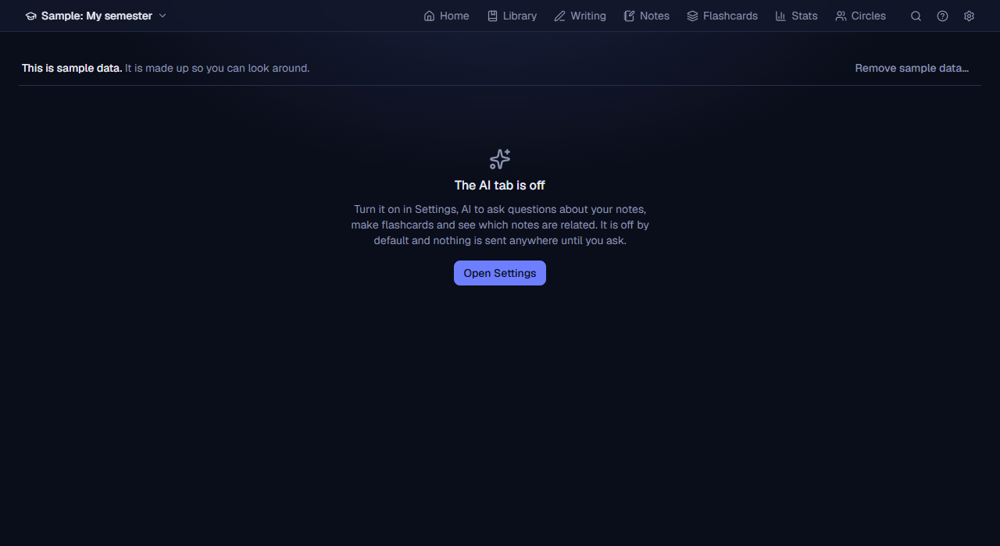
Turning it on
Settings, AI, Show the AI tab. Then choose an engine:
- Ollama (recommended for privacy): a free program from ollama.com (Download Ollama, shown while Voynich cannot find it, opens its own download page) that runs language models on your own computer. Install and start it, and Voynich finds it at the address shown (Where Ollama is running; the default is right unless it runs on another computer; if it cannot be reached, Voynich says so and has a check again link). Under Suggested for this computer Voynich recommends models that suit your computer’s memory and graphics card and can ask Ollama to download them, with a progress bar. Choose a Model that answers questions, a Model for Look up and quick jobs (a small, fast one is best: a model that thinks before it answers, such as deepseek-r1, takes half a minute or more a word, and Voynich warns you when Look up would use one) and, optionally, a Model that searches your notes (without one, Voynich matches words only; a multilingual one finds notes by meaning). Test the connection checks that they work. Nothing leaves your computer.
- An online service that works like OpenAI’s. Pick it under Service: Google Gemini, OpenAI, Mistral, OpenRouter, Groq, DeepSeek or LM Studio fill in their address and current models by themselves and say where a key comes from; Another service lets you type any address (most end in /v1). Then paste the Key (Save key, or Remove it again) and press Test the connection: it lists the models your key can use and, when a model is not found (a wrong name, or one the company has retired), names the nearest one it does offer, with the service’s own words beside Voynich’s. A service with no Search model finds notes by their words. When a service says “too many requests” while the index is updated (a free key allows only so many a minute), Voynich waits and goes on by itself, saying how long. Use this only if you accept that the text of your notes that the AI needs is sent to that company.
When your notes and books do not have the answer (Settings, AI): by default the AI answers from its own knowledge, and such an answer is labelled Not from your notes, cites nothing, and says to check it before you rely on it. Only my notes makes it say the answer is not in your notes instead, as it did before 0.72.
Ask your notes
Type a question. Voynich finds the pieces of your notes and books that match (it reads them in small pieces through a search index; Settings, AI, shows how many pieces are indexed across all your rooms and has Update the search index to bring the index of every room up to date), and the model answers from them first, naming its sources as numbered citations you can click to open the note (or, for a book prepared in the reader, the book at its page). If they do not contain the answer, it answers from its own knowledge with the label Not from your notes, or, with Only my notes, says so (see above). A question about your study time (“how many hours did I spend on Statistics this week?”) is answered from your real totals, not from the model’s arithmetic. Your conversations are listed so you can reopen, rename or delete them.
Ask, on every page
With the AI on, every page of a room has an Ask button at the bottom right. It opens the AI beside what you are doing, and it knows what you have open: the words you selected when you pressed it (a passage in the reader, a sentence in Writing), or else the note you opened on the Notes page or the document you are writing. A line at the top says what it is about; untick it to ask without it. Quick questions work on it: Explain this, Summarise, Quiz me (three questions, answers held back), Key terms, and in Writing Check the citations. Its conversations are the AI tab’s: saved and listed there. Esc closes it.
Keeping an answer
Under an answer, here and in the reader’s Ask tab, Save as a note keeps it as an ordinary note (the question as its title, the sources it cites listed under it; in the reader, about that book), and Make a flashcard makes a card of it.
Flashcards
Flashcards have a tab of their own (see Flashcards); the Flashcards button here goes there. With the AI on, Cards from your notes, by the AI in its Add cards tab picks a note (or the notes of a course or a book) and the model proposes cards you can edit, then save.
What is sent: with Ollama on this computer, nothing leaves it. With another computer or an online service, your questions and the notes needed to answer go there; in the reader, your question and the passage it is about; from the Ask button, also what it says it is about (the selected words, the open note or the document), unless you untick it. The Privacy section spells it out.
15. Your phone
Voynich can open on your phone, in the phone’s browser, while it runs on your computer. Your data stays on the computer: the phone shows it and changes it there. It is off by default, there is no account, and nothing goes through the internet or any company.
Turning it on and pairing a phone
- In Settings, Circles and phone, Your phone, tick Use Voynich from your phone. The first time, Windows asks whether Node.js (Voynich) may use the network: allow it for private networks. A Mac asks whether to accept incoming connections: choose Allow.
- Press Pair a phone. Voynich shows a QR code and a one-time code. The code works once, for ten minutes, and ends after five wrong tries.
- With the phone on the same Wi-Fi, scan the QR code with its camera, open the address and press Pair this phone. (Or open the address shown and type the code.) Voynich opens on the phone.
- To keep it like an app: on an iPhone, Share, Add to Home Screen; on Android, the browser’s menu, Add to home screen.
Your phones are listed under Paired phones; the bin button removes one, and it can no longer open Voynich until it is paired again. Unticking the box closes the way in at once; the phones stay paired for when you tick it again. This is part of the installed Voynich (started from its icon).
On the phone
On a phone, the tabs are in a bar at the bottom of the screen: Home, Library, Notes, Circles and More (Writing, Flashcards and Stats, and AI when it is on). It steps aside while you type. The top bar keeps the room, the search and Settings. Home and the timer, quick notes, flashcards and reading are made for a phone’s screen. In the reader, a page fits the width, you turn pages by scrolling (the page box still takes a page number), the notes open over the page with the panel button and close with the × (or when you go to a note’s page), and words selected with a finger get the same menu as with a mouse. Writing and the graph are better on the computer.
Calls and cameras on the phone (the secure address)
A phone lets a page use its microphone and camera only on a secure (https) address, and a home network has none of its own. So from 0.110 Voynich makes its own certificate on this computer, and the phone’s address answers both ways, http and https, on the same port. Trust the certificate once on each phone and it opens Voynich on https from then on: talking and the camera in voice channels, watching a screen someone shares, voice messages, and flashcards with the computer out of reach. (Cameras and watching came in 0.111: in 0.110 the phone could talk but showed no camera button.) A phone cannot share its own screen: no phone browser can.
- In Settings, Circles and phone, Your phone, Calls and cameras on the phone shows a QR code. Scan it with the phone, or on the phone tap Calls on this phone in a voice channel. The code holds the address chosen under Address in the code: the home network’s when the phone is on the same Wi-Fi, Tailscale’s (100.…) when it uses Tailscale (on mobile data, say). A page that stays white means the other one.
- Follow the steps the page shows for the phone. On an iPhone, in Safari: Download the certificate, Allow; then Settings, Profile Downloaded, Install; then Settings, General, About, Certificate Trust Settings, and turn on Voynich on your computer’s name. On Android: Download the certificate, then in Settings search for CA certificate, choose Install anyway and pick the file.
- Before you trust it, check that the fingerprint (SHA-256) the phone shows for it is the one Settings shows on the computer.
- The page notices by itself when the phone trusts it: press Open Voynich on the secure address. From then on the phone’s plain address goes there by itself; to keep it on the home screen, add it again from there.
The certificate can vouch only for addresses on your own network and names ending in .local (its name constraints), never for a website on the internet, so trusting it does not let anyone pass for one, even if its key were taken from this computer. (It could vouch for another device on your own network, a router’s page for example, which is why its key stays in Voynich’s data folder and nowhere else.) It is kept in the data folder (phone-tls) and lasts ten years; the part for this computer’s addresses lasts 397 days and is made again by itself when an address changes or a month before it ends. If you remove it from the phone, open /secure on the plain address (http, with the port Settings shows) to trust it again. Firefox on Android also needs Use third party CA certificates (in its Secret settings).
Flashcards with the computer off
Reviewing goes on when Voynich cannot be reached: the answers wait on the phone and are sent when it can be reached again (see Flashcards). Over your Wi-Fi this works while the review page stays open. To open Voynich on the phone with the computer off or far away, the phone needs an https address: the secure address is enough (open Voynich on it once at home), or Tailscale can give this computer one of its own: in Tailscale’s admin console turn on MagicDNS and HTTPS Certificates, run tailscale serve --bg 3418 on this computer (the port Settings, Circles and phone, Your phone shows), and pair the phone with the https address that then appears under Address in the code. Each time the phone opens Voynich there, it keeps the flashcards due in every room; with no connection it shows them on a page of its own, ready to review. Settings, Circles and phone, Your phone says whether this is set up (Check again looks once more). Voynich only asks the Tailscale program on this computer what it serves; it changes nothing in it.
What follows you from browser to browser
Some choices follow you to every browser you use Voynich in, the phone included, within a few seconds: the timer while it runs (start it on the computer, stop it on the phone), the theme and your changes to it, the notes graph’s shapes, look, options and where its dots are, your own highlight colours and what each colour means, your own note templates, your shortcuts, the order of the reader’s notes, break reminders, Show cover pictures, the weeks estimate, Look up dropped books, the AI tab being on, and how Stats splits its bars. What belongs to one screen stays in its own browser: the text size, the reader’s zoom and panels, the paper view in Writing and the like. The choices that follow you are kept with your data on the computer, so the complete copy holds them too.
Away from home: Tailscale
Tailscale is a free app, made by another company, that links your own devices into a private, encrypted network from anywhere. Install it on the computer and on the phone (Download Tailscale in Settings, Circles and phone, Your phone, opens its own download page), sign in with the same account on both, and pair the phone with the Tailscale address (it starts with 100.), chosen under Address in the code. Voynich is not part of Tailscale and sends it nothing.
Keeping it safe
- Only paired phones get in. Any other device gets the pairing page and nothing else, and a request from another website is refused, as on the computer.
- A phone cannot quit Voynich, install updates, or pair and remove phones: those stay on the computer.
- On the plain (http) address the connection is not encrypted; on the secure address it is. On a shared network (a café, a library, a school), use the secure address or Tailscale.
- Lost a phone? Remove it in Settings, Circles and phone, Your phone.
- A phone not used for 90 days is let go on its own and has to be paired again. Settings shows when each phone was last used and the day it would be let go.
- The computer has to be on, with Voynich running.
16. Study circles
A circle is a small private group (a few friends, a class, a language exchange) whose Trackers connect to each other directly. There is no server and no account: you join with an invite code, and whoever is online is the circle at that moment. A circle shows who is in it and who is online, the progress each member chooses to share with it, the decks they share and the books they read together, and it has channels: text channels to write in and voice channels to talk, share screens, turn cameras on and study in rounds (below). You can be in several at once (a book club, a language group, a class), each with its own invite code and its own members; none of them can see the others, or tell that you are in them. Everything about circles is in the hall, Circles (in the bar at the top of the hall and of every room).
The circle’s page

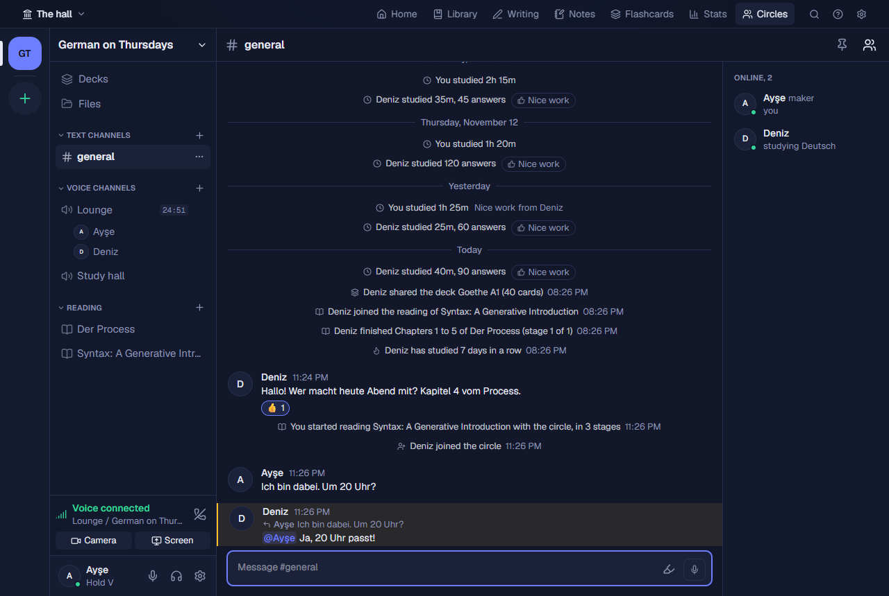
A circle’s page has four columns, as chat apps do. On the far left, your circles, each a round mark with its initials and a count of what is new; + under them makes or joins one. Beside them, the open circle: its name (press it for Invite people, Settings and Make a channel), then Decks and Files, then its text channels (#general first), its voice channels, with who is in each voice channel under it, and its Reading channels, one for each book the circle reads together. At the bottom, your name and picture in this circle, with Mute, Deafen and the gear for your settings (it opens Settings at Your profile). In the middle, the channel open (its name and topic at the top); on the right, the member list: who is online, then who is not, each with what they are doing (studying now in a room, reading a book, online, or when they were last seen). The members button at the top hides it or brings it back. Press a member for their own page: their week day by day, each room they share, the readings they are in and where they are, the voice channel they are in, the decks they share (with Bring in), Nice work, and what they did lately. Your own page shows what the others see of you, with the choice of what you share beside it. The circle and channel open are remembered, and are in the page’s address, so they come back after a reload.
One settings page, as in Discord. It opens over the whole window, with its parts in a list on the left; Esc or the X closes it. From 0.108 everything you can change about circles is there, in two groups. You: Your profile (your name, picture, colour and line, and whether this circle brings them), Your page (what your page shows in this circle), Voice and video (open microphone or Hold to talk, your microphone and speakers, noise suppression, the microphone tests) and Notices. This circle: Overview (the circle’s picture and banner, how long messages are kept, who may make channels, how files go: the maker chooses, the others see the choice), What you share, Members, Invite people, Connection and Leave the circle. The gear by your name, at the bottom, opens it at Your profile; pressing the circle’s name, at Overview. Search, above the list, finds a setting by its words (“camera” finds Voice and video); Enter opens the first found. On a phone the list is a page of its own.
Your profile, brought into your circles. In a circle’s settings, You, Your profile (from 0.108; in Settings, Circles and phone, from 0.92 to 0.107, where a link to it stays): your name, a picture, a colour (behind your initials when you have no picture) and a line about yourself, saved with Save your profile. Making or joining a circle offers Bring my profile (the first choice) or A profile for this circle only; the first circle you make or join with no profile yet makes the name you give into it. A circle that brings it changes with it, at once. The list under it shows each of your circles and whether it brings it; the same page’s first part has that choice for the circle it is in. A circle turned to its own keeps what it shows as its own; giving a circle its own name or picture does the same. The books and articles you show stay each circle’s. Members on Voynich 0.91 or older see your picture and name, but not your colour.
A picture for one circle. In a circle with a profile of its own, its settings, Your profile, Choose a picture: drag it (or use the arrow keys on it) and zoom so the part you want is in the circle, then Use this picture. Voynich makes it small (it goes along with what you share with that circle) and the others see it beside your messages, in the member list and in calls, instead of your initials. Each circle can have its own, or none; Remove your picture brings back your initials. Members on Voynich 0.79 or older see your initials.
A member’s page (from 0.109; click a name in the member list, or yours at the bottom of the channels): across the top, their banner (or their colour), their picture, name, the maker’s crown, their line about themselves and what they are doing now, with Message on another’s page and Edit in settings and What you share on yours. Under it, three parts side by side on a wide window (two on a middle one, one under another on a phone): Their week (the week’s total and the room most of it went to, a bar for each day, the streak, By room, Nice work), the Shelf (the books they show as covers, the articles with their first lines, the decks they share) and Lately (the readings they are in, the voice channel, and what the feed says they did).
The circle’s own picture and banner (from 0.137). Its maker chooses them in the circle’s settings, Overview, Picture and banner: Choose a picture (moved and zoomed in a circle, then Use this picture) for the rail, instead of the circle’s initials, and Choose a banner (a wide picture, 3:1) for the top of its channels. Voynich makes them small and the maker’s Voynich signs them on the circle’s list of members, so everyone in the circle has them, even when the maker is away. The others see them in Overview but cannot change them; Remove the circle’s picture or Remove the banner brings back the initials or nothing. Members on Voynich 0.136 or older see the initials.
Channels
A circle starts with #general and two voice channels, Lounge and Study hall. Everything said in a circle before channels is in #general. The circle’s maker makes more with the + beside Text channels or Voice channels (or Make a channel in the circle’s menu): a name and, for a text channel, a topic (“chapter-3”: a text channel’s name is written in small letters, with dashes). The ... beside a channel, for the maker, has Edit channel, Move up, Move down and Delete channel (#general stays); a deleted channel’s messages are not shown any more, at anyone’s. In the circle’s Settings, Overview, Anyone can make channels lets every member make them: a member’s new channel appears for everyone once the maker’s Voynich is online, and is shown in italics to them until then. Alt+↑ and Alt+↓ go to the text channel before or after, Ctrl+Alt+↑ and ↓ to the circle before or after, and Escape back to the channel from a member’s page or the settings.
A text channel shows its messages by day, each person’s name and time once for messages written together, and a red line where you were last there. #general also has short lines about what members did with the circle: a deck shared, or new cards in it; a reading started or joined, a stage of its plan reached, the book finished; a streak of 7, 30, 100 or 365 days; someone joining or leaving; and once a day, in the evening, each member’s study that day (“Deniz studied 1h 10m, 90 answers”), with Nice work on it and who said it. Nothing new is sent for these lines: each Voynich notes them itself from what members already share, so what you do not share makes no line. What was already there when you joined is not news: the lines start with what happens after.
Search a channel with Ctrl+F or the magnifier beside the pin: every word you type must be in the message, in any case, with or without accents and Turkish letters (isik finds Işık); a file is found by its name. The newest 50 are listed; a click goes to the message, reading further back in the channel until it is there (a pinned message’s Go to it does the same). Only the messages this computer keeps are searched, for as long as the circle keeps them; nobody else is asked.
What is new
Circles in the top bar counts the messages and lines from the others that you have not seen yet; each circle’s mark counts its own, and a channel with something new is bright, with a grey count. A message that mentions you, a reply to one of yours and a direct message make the count red, with an @ on the channel, and its notice says who and where. While Voynich is not in front (behind another window, minimized, or closed to its icon near the clock), a message for you comes as Windows’ own notification, with the writer’s picture; a click opens that conversation. While Voynich is in front, a small card says it at the top right of its other pages (not for the conversation open), and study rounds started in a voice channel too. In a browser (a phone, a tab) the browser’s own notification does it while the tab is out of sight, once you allow it in Circle settings, Notifications. A message that comes much later (someone who was away catching up) is only counted, and a reply in a thread notifies you only when it is for you. What you have read is the same in every browser of your Voynich: read on the phone, and the computer no longer counts it. In Circle settings, Notifications: Pop-ups for new messages, Show the message in pop-ups (off, a pop-up says only who wrote where), Replies to my messages notify me like mentions, and the cards in Voynich’s pages (this browser’s, or Turn these off on a card); the counts stay either way. What notifies you can be chosen for each circle, channel and person (from 0.133). A circle is All messages (the default), Only mentions (only a mention or a reply to you notifies, and nothing else adds to the count, not even a dot) or Nothing; a channel follows its circle (Default) or has its own. Mute a circle, a channel or a person’s direct messages for 15 minutes, 1, 3, 8 or 24 hours, or until you turn it back on: a muted circle or channel is greyed and only mentions reach you; muted direct messages notify and count nothing. A timed mute ends by itself. Right-click a circle on the rail, a channel or a person under Direct messages for these, or use the bell beside a channel and in its header; Circle settings, Notifications has them all for the circle. A mention of you is always counted in red, whatever you choose. They are the same in every browser of your Voynich. Your status (from 0.134): Online, Idle, Do Not Disturb or Invisible. Choose it from the round button by your name at the bottom of a circle’s channels (Do Not Disturb also for 1 hour, 8 hours or until tomorrow), or in Circle settings, Notifications, Status and Do Not Disturb, for as long as you like. The others see it on your picture: green, a yellow moon for Idle, a red bar for Do Not Disturb. You are Idle by yourself after 10 minutes with no input anywhere you use Voynich (its window asks Windows how long the computer has been idle; a phone in your hand keeps you Online), never in a call. Do Not Disturb: no pop-ups, no cards in the pages, no message sound, no flashing; the messages are still counted and wait for you, and the badge stays unless you turn on Do Not Disturb hides the badge too. While you share your screen, nothing pops up either, since it would show in the share. Quiet hours are Do Not Disturb by themselves at the times and days you choose (23:00 to 08:00 on a Friday runs into Saturday morning). Invisible shows you offline to the people in your circles, but your Voynich still connects to theirs: it hides you from the people, not from the network. A Voynich older than 0.134 shows you as online whatever you choose. Your status follows you to every browser of your Voynich. Listening to (from 0.138): turn on Show what you are listening to in Circle settings, Notifications, Status and Do Not Disturb, and your circles see what plays under your name and on your page: “♫ Listening to a song by someone on Spotify”. It is read from Windows’ own media session, the one its volume pop-up shows, so any player that shows there works (Spotify, a browser tab, Media Player) and no account is needed. It is off until you turn it on; while off, nothing is read. While on, Voynich looks every 15 seconds and keeps only the title, the artist and the player’s name, in memory. It is never shown in Do Not Disturb or Invisible, and goes when the music pauses. Windows only for now; a Mac shows nothing. Members on Voynich 0.137 or older do not see it. Sounds (from 0.135): a message, a mention or a reply to you, and a direct message each have their own short sound, as do joining and leaving a call, someone joining or leaving yours, a screen share starting or ending, and muting, unmuting, deafening and undeafening. Circle settings, Notifications, Sounds lists them all: each on or off with a button to hear it, Every notification sound off, and one volume. A message makes its sound only when it notifies you (not muted, not Do Not Disturb), never for the conversation in front of you, and once: where you used Voynich last (the window, a browser tab or the phone), not in every tab at once. A burst of messages is one sound. Deafened, you hear none but deafening and undeafening. A theme’s sound pack may carry its own message, mention and direct message sounds; with only a message sound, it plays for all three. The Inbox (from 0.136): the bell in the top bar has the red count of what is for you. Mentions lists each mention of you, reply to you and direct message not read yet, newest first; Unreads lists each channel with something new, newest first, with Mark as read. On the circles page it can show this circle or all; Mark all as read reads everything. In a channel, a red NEW line comes before the first message since you were last there, with a bar “3 new messages since 14:05”: Jump goes to the line, Mark as read (or Esc) takes them away. Right-click a circle on the rail for Mark as read; Shift+Esc anywhere marks everything read. What is read is the same in every browser of your Voynich. The same count is on Voynich’s taskbar button (from 0.132): a red number, 1 to 9 and then 9+, for messages for you (read out by a screen reader as “3 messages for you”), or a small red dot when there are only other new messages; the button flashes on a mention, a reply to you or a direct message while the window is not in front, until it is. The icon near the clock gets a red dot too, and its tip says how many, so it shows with the window closed to it. In a browser tab the title starts with the number, “(3) Voynich”, and the tab’s little icon has the dot. A dot for other unread messages and Flash the taskbar are in Circle settings, Notifications, the same in every browser of your Voynich. Nothing is sent anywhere for any of it.
First steps, and the phone
A new circle shows its first steps in #general: invite someone (with a button that copies the invite code), choose what you share, and study together (in a voice channel, or a reading). Each is ticked once done, and the steps go when all three are (or with the cross).
On a phone the circles and channels are one screen (the menu button at the top), a channel fills the screen, and the member list opens over it. On a phone, talking, the camera and watching a shared screen need the secure address (set up once), and sharing a screen is not possible (no phone browser can); on the plain address a phone shows who is in each voice channel, and Calls on this phone there leads to the setup.

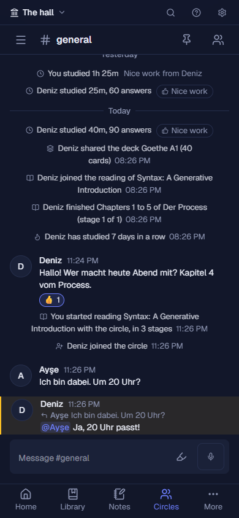
Making a circle and inviting people
- In the hall, Circles, type the circle’s name, choose Bring my profile or type your name in it, and press Make the circle (with circles already there, press Make under your circles first). The first time, Windows may ask whether Node.js (Voynich) may use the network: allow it, or members may not be able to reach this computer.
- In the circle’s Circle settings, Invite people, press Copy and send the code to the people you want in the circle (a message to them is fine). Anyone with the code can join, so send it only to them.
- They open the hall, Circles (Join under their circles if they are in one already), paste it, bring their profile or type their name, and press Join.
Members, and who is online
Your circles are listed with how many members are online; press one to open it. Its list shows every member, a dot for who is online now, and when the others were last seen. Members find each other through a public directory and then connect directly, encrypted end to end; it can take a few seconds after Voynich starts. When two members’ networks cannot reach each other (often two phones’ mobile data), a member who reaches both passes the circle’s news on between them: the list then says online, through that member. With Help members connect through this computer on (it is, until you turn it off), such members also get a connection of their own through your computer, still encrypted: it passes it on without being able to read it, and only for members of this circle.
Sharing your progress
Nothing of yours is shared with a circle until you choose. In the circle’s settings, What you share: switch on the rooms (the hall is one of them) whose progress that circle may see. Each circle has its own choice, so the German group can see your German room and the book club the hall, and neither sees the other. For each room on, the circle sees its name and, for each of the last two weeks’ days, the minutes you studied there and how many flashcards you answered; with them, your streak (days in a row with either, counted from midnight) and the “nice work” you gave. Nothing else: no notes, no titles of what you studied, no books or cards. Under the rooms, What the others see of you shows it as they see it, and Exactly what is sent shows the very text sent.
Each member’s Voynich signs what it shares with that member’s own key, and members pass it on for each other, so you see a member’s progress even when you are never online at the same time as them (through a member who was), and nobody can change it on the way. It is brought up to date within two minutes of a change while Voynich runs; a member who is offline shows what they shared last, with As of when it was. Turning a room off sends the circle a card without it from then on; what members already saw stays with them.
Each member’s page shows today’s minutes and answers, the streak, this week day by day (Monday to Sunday) and each room they share. Nice work under a member says so on their day (today’s, or yesterday’s when they have not studied yet today); press it again to take it back. You see the “nice work” others gave you on your own page. There is no ranking: members are listed in the order the circle’s maker’s list has them, never by who studied most.
Sharing decks
One member makes the German or Chinese deck, and the whole circle studies it. In the circle’s settings, What you share, choose a room and one of its decks (the decks inside it go with it) and press Share. The deck goes without your progress: every card is new for the others, and none of your answers, flags or suspensions go with it; its notes, note types, pictures and sounds do.
Under a member who shares a deck, the circle sees its name, how many cards and how big it is. Choose one of your rooms and press Bring in: the deck’s file is fetched from whoever in the circle has it (it is checked against the fingerprint on its maker’s card, so nobody can slip in another), and it comes in as an Anki deck does. After that, when its maker changes the deck, the change reaches you by itself within a few minutes while both Trackers run (or through a member who has the new version): new cards are added, and the notes its maker changed are updated. Your schedule and history stay yours, and an edit of your own to one of its cards stays unless its maker changes that same note. Stop updates keeps the cards as they are, as your own; Stop sharing (the maker’s) offers it no more. Cards its maker deletes stay with you.
Reading together
The circle reads the same book, each member in their own copy, by a plan. Press the + beside Reading in the channel list (Start a reading), then Start a reading, choose a book of your Library and write the plan: stages of a page and a day (“up to page 120 by Friday: Part 1”), as many as you like. The others see the book’s details and the plan, never the book itself, and choose Join with their own copy: a book of their Library, or Add it to my Library, which makes one from the details. The book’s file: where the circle’s maker lets files be sent on their own, whoever started the reading can tick Members can get my copy’s file (only share a book you may share). The others then see Get their copy with its size; it comes from them or from any member who already has it, is checked against its checksum, and goes into your Library, where Join with it joins the reading with it. Ending the reading, or unticking, stops offering it; copies already fetched stay. Members on a Voynich older than 0.103 see it as a file sent to the circle.
Each reading is a Reading channel of its own, under Reading, with a book beside its name: at its top, The reading (the book, the plan, everyone’s place, and Join), which folds away; below it, the channel’s own messages, as in a text channel, to talk about the book. Nobody has to make it: it comes with the reading, and goes when the reading ends (its messages then show in #general). Members on a Voynich older than 0.79 see its messages in #general.
In the reader. A book you read with a circle has a circle button in the reader’s bar, which says the plan’s next stage (“p. 120 by Fri”). Press it for everyone’s page and how far each is from that stage, and a link to the circle. A book read with more than one circle lists each. Books no circle reads have no button.
Each reader’s place is the current page of their own copy (as the Library and the reader keep it), so it follows their reading by itself, within a couple of minutes. Every reader sees everyone’s page, how far through they are, and how many pages they have to the plan’s next stage. When two copies have different page counts (another edition), a stage is counted by how far through the book it is. The reading’s starter can change the plan or end the reading; the others can leave it. The books stay in everyone’s Library.
Asking for files
In a circle’s Files (beside its channels), Ask for files asks the circle for 1 to 5 files: PDFs, EPUBs, or files of any kind (slides, a scan, a Word file), with a note saying what you are looking for (“Please send me a copy of Crime and Punishment, thanks”). Choose who gets what is sent: Only me, or The whole circle (anyone can then take a copy), and which room’s Library the PDFs and EPUBs go to. #general says what you asked for, and Files counts the others’ open requests.
A member who has the file presses Send under the request: a book of their Library that has a file of that kind, or a file of this computer (up to 500 MB). The file goes directly from their Voynich to yours, checked on arrival, like a shared deck; a file sent to you alone is handed to nobody else. When it arrives, a PDF or an EPUB becomes a book of the Library you chose, and any other file goes to Received, below the requests, to Open or Save. A request closes itself once as many files as it asked for have arrived, or press Close the request. The sender can Take back a file that has not been fetched yet, and Take off the list removes a received file (a book made of it stays). Send and ask only for files you may share: what goes between members is their own act, and it never leaves the circle.
Profiles
Each circle can see a page of you, which shows nothing until you choose: in the circle’s settings, Your page (from 0.108; your own page, your name in the member list, shows you as the others see you, with Edit in settings). Write a line about yourself (in a circle that brings your profile, its line), tick the books of your Library (up to 12) and the documents of your Writing (up to 8) to show. The others see a book’s title, authors and year, and whether you have its PDF or EPUB; an article’s title, its first lines and its length. Nothing else goes: no file, no notes. Each circle has a profile of its own (a book club may see your novels, a class your papers), and Copy from another circle, on the same page, fills one from another. The circles cannot tell they share a member: the same book has another name in each.
What you are doing now. In the same place, two ticks show the circle, under your name in its member list, the book open in your reader and its page (“reading Crime and Punishment, p. 120”) and the deck you are reviewing. Any book or deck, not only those on your profile. It shows only while you do it and goes a few minutes after you stop; nothing of it is kept. Both are off until you tick them, in each circle on its own.
On another member’s page, Ask for its PDF (or EPUB) beside a book, or Ask for a copy beside an article, asks them alone. They see it in their Files, with Send or Decline. A book’s file goes into your Library; an article arrives as a document of your own Writing, which you can change, with the books it cites added to your Library and its citations pointing at them.
Sending without a request. The circle’s maker can choose, in the circle’s Settings, Overview, Files: Only in answer to a request (as every circle starts) or Anyone can send any file. In a circle open for sending, Files has Send a file: to everyone in the circle or to one member, a book of your Library or a file of your computer (up to 500 MB). The others see its name and size under Sent in the circle and press Get if they want it: a PDF or an EPUB goes into their Library, anything else into Received. A file sent to one member is handed to nobody else. The sender can Take back a file; a copy already fetched stays with whoever has it.
Your name, and the maker. In a circle with a profile of its own, its settings, Your profile, Your name here, changes what the others in that circle call you (each circle has its own). Your phone is not a member of its own: it opens the Voynich on your computer, so in a circle you are one member whichever you use. A circle has one maker, who chooses its settings and adds and removes members: at first the person who made it. The maker can hand it to another member, on that member’s page, Make … the maker; the hand-over is signed with the maker’s key, so every member’s Voynich can trust it, and only the new maker can hand it on. Everyone in the circle needs Voynich 0.62 or later to see the new maker.
Quotations and passages
The highlighter button beside a text channel’s box opens Share highlights: choose a book of your Library, pick its highlights (by colour if you like, in page order, each with its note), and Send to the chat. Each becomes a quotation in the channel, with its colour, the book and the page. Only the words, the page and the book’s details go, never the file. When a member has the book (the copy they read with the circle, or the same book in their Library), Open in your copy opens it there.
On a book the circle reads together, Hand passages to read gives some of your highlights to one member who reads it too: they see them on the reading, each with Open and a tick for when they have read it, and you see how many they have read (or Take back). #general says so to the two of you only.
A quotation or a passage opens at its page and looks for its words there; when another edition has them elsewhere, the reader looks on the pages around it, and through the whole book, until it finds them. An EPUB looks through all its chapters.
Reading Together: highlights in everyone’s copy
Whoever starts a reading chooses Together or Each on their own. Each on their own shares only the plan and where each member is. In a Together reading, each member can also share their highlights and notes in the book: Share my highlights and notes here, on the reading or in the reader’s circle button. It is off until you turn it on, and it is yours alone: the others choose for themselves.
The others’ shared highlights show in your own copy, each member in their own colour; point at one to see who made it and their note. They are found by their words, so another edition of the book works too; what goes is only the words, the colour, the page in their copy and the note, never the book’s file. Keep some to myself, in the reader’s circle button, leaves any one of your highlights out. A new highlight follows by itself within half a minute; one you delete goes from the others’ copies too.
Writing in a channel
In a text channel, write in the box at the bottom (“Message #general”) and press Enter (Shift+Enter for a new line); it goes to that channel only. The microphone button beside it records a voice message of up to two minutes: a red sign says the microphone is on until you press Stop; then you listen to it, and Send or Throw away. Nothing goes before Send. Every member’s Voynich gets the recording from whoever has it (a member who was away gets it later) and keeps it as long as the circle keeps its messages; members on an older Voynich see a line saying it is a voice message. On a phone, recording needs the secure address (the phone plays them either way). Every member’s Voynich keeps the messages for as long as the circle’s maker chose (a week, 30 days, a year or for good; 30 days unless they change it), and members who were away get them from whoever is online when they come back. A message is signed by its writer, so nobody can write in someone else’s name. A member on Voynich 0.76 or older sees every channel’s messages in its one chat, and what they write is in #general, until they update.
Replies, mentions, reactions and pins. Point at a message (or press Tab to it, or tap it on a phone) for three buttons. Add a reaction offers eight (👍 ❤️ 😂 😮 😢 🎉 ✅ 👀) and + for all the emoji: find one by name, the ones you used lately come first, and the hand beside the search chooses a skin tone (kept for next time). Reactions show under the message with how many, and pointing at one says who. Press one of yours again to take it back. (A member on Voynich 0.89 or older sees only reactions among the eight.) Web addresses in a message are links: they open in your browser, never inside Voynich, and pointing at one shows where it goes. Reply puts “Replying to” above the box; the reply shows the start of what it answers, and pressing that goes to it. Reply in a thread opens a thread beside the channel: the message, the replies under it, and a box to reply there. The replies stay out of the channel, whose message says how many there are, who wrote them and when the last came; pressing that opens the thread. A thread is one level (a reply in it cannot begin another). Members on a Voynich older than 0.105 see the replies in the channel, as plain messages. Pin pins the message for everyone in the circle (anyone can pin, and unpin); the pin at the top of the channel lists what is pinned in it. To mention someone, type @ and the start of their name, then choose them from the list (Enter or Tab): the message is marked in their chat, and counted in red for them. Members on a Voynich older than 0.79 see a reaction or a pin as a short message saying so (“reacted 👍”), a reply as a plain message, and a mention as the words written.
Images and files in the chat. These are the circle’s maker’s choice, off unless chosen: in Circle settings, Overview, Files, the third choice, Anyone can send any file, also directly in the chat. Where it is off there is no +, nothing can be sent, and what is already in the chat shows as a plain line naming it, until the maker turns it on again. Where it is on, the + at the start of the box adds them; you can also paste a picture into the box or drop files on the channel. They wait above the box until you press Send, and each goes as a message of its own. An image (PNG, JPEG, WebP or GIF, up to 20 MB) shows to the others blurred, from a very small preview that travels inside the message, until they press Download. It then comes from any member who has it, and is sharp; pressing it shows it larger, with Save. So everyone in the circle does receive that small blurred preview, and only those who press Download receive the image. If no member who has it is online, it says it is waiting, and comes when one is. A video (MP4, WebM or QuickTime, up to 500 MB) works the same way: one frame, blurred, with its length and Download; once here it plays in the chat (play, pause, the time line, full screen), and Save under it keeps a copy. A video this browser cannot play (an iPhone’s HEVC often) says so, and Save still works; one that the sender’s Voynich could not read goes as a plain file. Members on Voynich 0.79 or older see a video as a file card. Any other file (up to 500 MB) shows as a card with Get, then Save. Images, videos and files can be sent in Reading channels too. Files never open in Voynich from the chat: they are saved, so nothing a member sent can run. All of this also shows in the circle’s Files, under In chat, and goes when its message goes, by the circle’s choice of how long messages are kept. A copy already saved outside Voynich stays. Delete for me (under More on the message, or the small bin in Files) takes an image or a file out of your chat and its file off your computer, after asking. It does not come back, and the others keep theirs. If you were the only one with the file, those who had not downloaded it can no longer get it. The message itself, with its small preview, stays hidden in your Voynich until its time is up, so that you can still pass the message on to members who were away. Members on an older Voynich see a line naming the image or file, and cannot get it or pass it on.
Edit, take back, delete for me. The fourth button on a message, More (three dots), has: Edit, on a message of your own words (not a voice message, a quotation, an image, a file, or a message long enough to go in parts): change it in place, Enter saves and Escape leaves it as it was. It then shows (edited) to everyone, with the new words only. Take back for everyone, on your own messages of any kind: it goes from every member’s Voynich that is on now, and from the others when they come back on, with its image, file or recording. Both are small messages signed by you, so nobody else can edit or take back yours. Said plainly: someone may have seen or saved it before, and a member on a Voynich older than 0.102 keeps it (they see a line “took back a message”, and an edit as a new message with the new words). Delete for me, on any message: it goes from your own chat only, and the others keep theirs. A message may be any length (from 0.130): a long one goes in parts and shows as one (a Voynich before 0.130 shows the parts one by one), and taken back it goes whole.
Direct messages. To write to one member alone, open them (in the member list) and press Message. The conversation opens in the middle, and the members you have written with are under Direct messages in the channel list, in bold with a dot when there is something you have not read. A direct message is words only, of any length: from 0.129 a long one goes in parts and shows as one (a Voynich before 0.129 shows the parts one by one). It goes between your two computers alone (encrypted, also through a relay), signed for that one reader: it is never handed to the circle, and it is not on your other computers (sync leaves it out). One written while they are away is marked Waiting and goes when you are both online. Direct messages go after the days the circle keeps its messages, and when you leave the circle. A member on a Voynich older than 0.106 cannot get them: yours stay Waiting until they update.
Two members with the same name. Anyone can call themselves anything in a circle, so when two members share a name, both get a short mark after it (eight letters and digits made from their key), in the chat and in the members list. Nobody can pick their mark: to get someone elseboth get a short mark after it (four letters and numbers from their key, which nobody can choose), in the chat and in the members listrsquo;s they would have to make keys until one matched, about a trillion tries. The same person has the same mark everywhere in that circle.
Voice channels

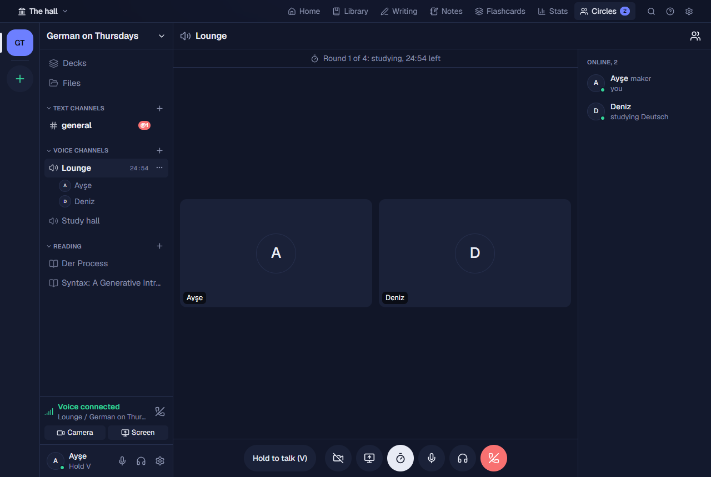
Press a voice channel to join it: you are in it, the others in the circle see you under it, and your microphone is open, as in Discord. Press it again to see the call. The call shows everyone in the channel as a tile (their camera, or their initials), with a green ring round whoever is speaking (it lights while they speak and goes out in their pauses) and a sign for who is muted or deafened. Its bottom bar has Camera, Share your screen, Study rounds, Mute, Deafen and Leave voice. Mute sends nothing until you unmute; Deafen also lets you hear no one (and mutes you); Mute while deafened undeafens and unmutes. Both are also at the bottom of the channels, beside your name, and the others see them. Point at someone’s tile to mute them for you alone. Right-click someone (under the voice channel, or their tile in the call) for how loud they are for you, from 0% to 200%, with Mute for you and Back to 100%; it is kept on this computer for every call with them, and a volume that is not 100% shows beside their name. A short call sound plays as you join or leave, as someone comes into or leaves your voice channel, and as a screen share starts or ends in it (not while you are deafened); Call sounds in Voice settings turns them off. While you are in a voice channel, Voice connected above your name says which, with Disconnect, and Camera and Screen, which open the call. Nothing of the talk is recorded or kept.
If you use speakers without headphones, or are in a noisy room, choose Hold to talk in User settings, Voice and video (on this computer, for every circle): the microphone then sends only while you hold V (not while typing, and not on the flashcards pages, where V plays the card’s sound) or the Hold to talk (V) button in the bottom bar. With speakers and an open microphone the others may hear themselves; headphones avoid it.
Microphone and speakers. In User settings, Voice and video: which microphone the others hear and which speakers or headphones the circle plays on. Both begin at the system’s default. If the others cannot hear you while another program hears you well, the default is often not the microphone you talk into (a webcam’s, or a headset that is not plugged in): choose yours here, then Test your microphone. A new choice takes effect at once, in a call too. The names show once Voynich may use the microphone (Show their names); speakers can be chosen in Voynich’s own window, and in a browser that cannot, the circle plays on the default.
Noise suppression. Also in User settings, Voice and video, for what the others hear from your microphone: Strongest runs two neural networks in a row (GTCRN, then RNNoise) and also takes out keyboard clicks and steady hiss, for a very noisy room or laptop; it can cut the quietest ends of words more often than Strong, adds about 30 ms of delay, and leaves out the highest part of your voice (above 8 kHz), so you sound a little duller. Strong, the choice to begin with, takes out a laptop’s fan, hum and a noisy room, between your words and under them, as well as steady hiss (it is RNNoise, a small neural network that runs on your own computer, before your voice is sent); Standard is the browser’s own suppression only, for steady hiss (try it if Strong cuts the ends of your words); Off takes out nothing, for music or a good microphone in a quiet room. A change takes effect at once, in a call too. If Strongest cannot start in your browser, Voynich uses Strong; if Strong cannot, Standard; and it says so there. Test your microphone, below them, records five seconds of you and then plays them back as the others hear you, with the suppression chosen; it records first and plays after, so speakers cannot howl, and it is not offered while you are in a voice channel. Hear yourself, beside it, plays your microphone to you live, as you talk, until Stop hearing yourself: use headphones (on speakers you would hear an echo), and change the suppression while you listen to hear the difference at once. It leaves out the call's compression, which the recorded test has, and stops when you close the settings.
Study rounds. Anyone in a voice channel can press Study rounds and Start now: 25 minutes of study and a 5-minute break unless you change them, as many rounds as you like. Everyone in the channel sees the same countdown at the top of the call, and the time left shows beside the channel in the list, at everyone’s (worked out from the same start, so nothing has to keep it in step). Anyone in it can stop them (Stop the rounds), and they go on when whoever started them leaves. The maker can set a voice channel to Talk only in breaks (Edit channel): while its rounds run, talking, cameras and screens wait for the breaks, and everyone still hears the room. And while your timer runs in a room you share with a circle, the circle sees “studying now” beside your name, with that room’s name and since when.
Cameras. In a voice channel, Camera opens a preview of yourself that only you see; nothing is sent until you press Turn on. Then your picture goes to the others in the talk, as it happens, and a red sign names who sees you; Camera again (or Turn off on Voynich’s other pages) lets the camera go, and so do leaving the voice channel and the end of a break in a channel that talks only in breaks. The camera’s light is on exactly while Voynich has it. The others’ cameras are on their tiles, with full screen on each, and small in a corner on Voynich’s other pages. Above the tiles, Layout chooses how they are laid out, for you alone and kept on this computer: Grid (everyone the same size, the first time), Speaker (whoever talked last is big, the others in a row under them) or Pinned (the pin on a tile makes that person big until you press it again). On a camera's tile, Fill fills the tile (cut at the edges) and Fit shows all of the picture. Hide cameras takes no one’s: it spares your line, and you still hear everyone. Each picture is shown when that person’s voice from the same moment is heard, so lips and words go together; on a slower line your picture gets smaller (720p, then 540p, then 360p) before it gets fewer frames, and each person gets what their own line allows. Cameras are for up to five people in a voice channel: with more, the talk goes on without them. Everyone sends a copy to each of the others, so your upload decides how sharp your picture is: it takes about 0.7 megabits a second of upload for each of the others (about 3 for a call of five), and more for a sharp picture. On less, your picture breaks or does not reach them, and a full upload slows what comes to you too, so on a slow line keep your camera off. Nothing is recorded or kept. It needs Chrome, Edge, Brave or Firefox on a computer (with graphics acceleration on: in Brave, Settings, System), and everyone in the channel on Voynich 0.77 or later; the red sign names anyone who cannot take your picture, and they still hear you.
Sharing your screen. In a voice channel, Share your screen in the bottom bar asks how: Sharp for reading (full size, up to 2560x1440, up to 30 frames a second) or Smooth for anything moving (60 frames a second, up to 1920x1080), and With its sound for a tab’s sound, or the whole computer’s where the browser offers it (a window has none; it never carries Voynich’s own sound, so the voices do not go back out). Choose what to share opens the browser’s own picker: a whole screen, one window or one tab. Nothing is sent until someone presses Watch, and then only to them. While you share, a red line says who watches; Stop sharing (or the browser’s own) ends it, and so does leaving the voice channel. Everything on what you share is seen, notifications that pop up on it too. Up to three people can share in a channel at once. When someone shares, the others see LIVE with Watch for each: the screen you watch opens large in the call, with the tiles under it, full screen, and, when there is sound, its volume; Also sharing above it names the others, and pressing one shows theirs instead. Each person picks which one is big for themselves; one is watched at a time. On Voynich’s other pages it is small in a corner. If only part of what your share wants gets through (your upload, or a watcher’s line), the red line says so; your camera shares your upload with the screen, so turning it off gives the screen more. When every watcher is short at the same moment, it is your upload: the line says that, and the share goes as one stream at what your upload takes, instead of a second, smaller one for a slow watcher (which would take more of it), until your upload has been fine for a while. On a slower line the picture gets smaller (Smooth) or has fewer frames a second (Sharp) rather than breaking; each viewer gets what their own line allows. It needs Chrome, Edge, Brave or Firefox on a computer, and goes only to members on Voynich 0.77 or later whose connection can carry it. Firefox shares the picture without its sound (it has no way to hand the sound over as it comes), and says so where you start the share.
Voice stays with you. Once you are in a voice channel, you stay in it through every page of Voynich: a small Voice connected panel in the corner says who is talking, with Mute, Deafen and Disconnect, a red sign while your camera is on, and the channel’s name to go back to the call. Drag it by its handle (the dots at its left; or press the handle and use the arrow keys) and it stays there, also after Voynich starts again, and stays on the screen when the window gets smaller; a double click on the handle puts it back in its corner. The cameras (bottom right) and a shared screen in its small window (bottom left) move the same way. A screen being watched is large in its own voice channel and small everywhere else. You leave it with Leave voice or Disconnect, by joining another voice channel (one at a time, in every circle), or by closing the window. In Voynich’s own window a page loaded again (or a file opened from a folder) keeps you in the call. Voice channels need Chrome, Edge, Brave or Firefox, and everyone in them on Voynich 0.77 or later: members on 0.76 or older do not see the channels at all, and cannot hear or be heard in them. Their study rooms and discussion rooms are not shown in 0.77; ask them to update.
How it sounds: in a test network with homes 30 ms apart, the voice took about 50 ms from one member to another, or 80 ms through a member who relays; on lines that lose packets the circle resends them, so Voynich waits up to a quarter of a second before playing when it has to, and nothing came too late even with 5% lost. Real homes have not been measured yet.
Removing someone, and leaving
Only the person who made the circle can remove a member (the bin button beside them). The circle then gets a new key and a new invite code, which the removed member never receives, so their Voynich can no longer connect to it, and it is told it was removed. Members who were away get the new key from the first member they meet. What someone already saw stays with them. Leave (with the circle’s name, inside it) removes that circle from your Voynich and tells its members; your other circles go on; if you made it, it goes on for them, but nobody can remove anyone from it any more.
What a circle sends
Only while you are in a circle and Voynich is running. To find the members, Voynich joins a public directory that many apps share (Hyperswarm’s, first through three addresses run by the project that makes it); the directory sees that a computer joined and the circle’s meeting place, a scrambled form of its key, never the key itself. Members see each other’s internet addresses, as in any direct connection. What goes between members is your name in the circle, who is in it and who is online, the progress you chose to share with that circle, the decks you share with it, the details and your page of the books you read with it, your messages and voice messages, the voice channel you are in (with your mute, deafen and camera, and its study rounds), and whether you are studying now in a room you share with it (above). Only what you choose besides: your profile and what you are doing now, files you send, quotations and passages, your highlights in a Together reading where you turn sharing on, documents you share with members (to them alone), and your voice while you are in a voice channel and not muted (to those in it, never kept). Nothing else of yours (other notes, books, sessions, cards) is reachable through a circle: a circle runs in a small program of its own that answers only circle messages. The circle’s key is left out of complete copies and exports; after putting a copy back on another computer, join again with an invite.
Who learns what
The same thing, by who is looking. Everything between members is encrypted end to end; what is not hidden is who talks to whom, and when.
- The members of a circle learn what is listed above, and your internet address whenever you are both online (from it, roughly where you are and which provider you use). They see when you are online. Voynich gives you a member key of your own in each circle, so two circles cannot match you by your key; your internet address is the same in both, though, so members of two circles you share can tell it is you.
- A member who helps others connect (Help members connect through this computer, on unless you turn it off) carries a connection between two members whose routers cannot reach each other. It cannot read what passes, but it sees both internet addresses, when they talk and how much. When your connection to someone goes through a helper, the helper learns that.
- The public directory (computers run by many people, which any app on Hyperswarm uses) sees your internet address, when you are online, and the circle’s meeting place, a scrambled form of its key. It cannot learn the key, the circle’s name or anything said in it. Someone running many of its computers could notice which addresses look for the same meeting place at the same times, and so guess that they are one group.
- Someone watching your network (your Wi-Fi, your provider, your employer’s network) sees encrypted traffic to the directory and to the members’ addresses: who, when and how much, and that it is Hyperswarm, not what it says.
- Someone the maker removed keeps what they already received (messages, decks, files). The circle gets a new key at once and they cannot get it back. For 30 days the members still look for each other at the old meeting place as well, so that members who were away get the new key there; during that time the removed person can still see the internet addresses that are looking there, and when, but not what is said. A key pair they make up again is refused there. Members the maker met, or had heard of from other members before the removal, get the new key there; anyone the maker knew nothing of needs a new invite.
- Anyone with the invite can join (until the maker removes them). Give it only to the people you mean; when the maker removes someone, the circle gets a new key and the old invite stops working at once for anyone who had not joined yet: they need a new one.
When something seems wrong
Everything a circle does is written to Voynich’s log, one line each, with the time: when it starts, who connects and how (directly, or through another member), who disconnects, when this computer’s network changes (another Wi-Fi, waking from sleep), new keys, and connections it refused. Settings, About and updates shows where the log is. Members are named as they named themselves, never by their internet address, so you can send the log to someone helping you. A member whose computer is switched off or loses its connection shows as disconnected only after a short while, when the connection times out; leaving and being removed show at once.
Sync your computers
With two or more computers of your own (a desk PC and a laptop, say), Voynich can keep them the same, over the same network as circles: no account, no server, no cloud folder. In Settings, Circles and phone, Sync your computers: on the first, give it a name and press Start syncing from this computer; it shows an invite. On the other, give it a name, paste the invite and press Join. The invite is for your own computers only: whoever has it gets a copy of everything.
- What syncs: rooms with their courses and activities, notes and their links, books (details, covers and files), highlights, documents and their versions, flashcards with their notes, pictures, sounds and every answer, study sessions, the AI tab’s chats and canvases. What stays on each computer: keys and passwords, settings, study circles, the phone’s pairing, and the AI’s search index (each computer makes its own).
- When: whenever both computers are on, a change on one reaches the other within about half a minute. A computer that was closed catches up when it is opened again. The first sync of two full computers can take longer: books’ files go a few hundred megabytes at a time.
- Courses and activities with the same name in the same room are one, not two, even though each computer made its own.
- Changed on both while apart: the newer change wins, row by row (a card, a book’s details, a session). A note or a document changed on both computers while they were apart keeps both: the newer stays, and the other is kept beside it as “(the other version, date)”, on both computers, once.
- Which is newer: each change carries a count as well as the time, and a change made after another computer’s change came is always counted after it, so a computer whose clock is wrong cannot make an older change win over one made after it. Changes made on two computers while they were apart are still put in the order of their clocks.
- A card answered on both while apart: every answer is kept, and the card’s next review is worked out again from all of them, in the order they were given, as if one computer had had them all. (Answers given on a Voynich older than 0.104 do not keep what is needed for that; then the newer schedule stays, as before.)
- A note deleted on one computer goes into the other computer’s bin too (Notes, Bin), for 30 days, with its subfields, pictures and links, so a note deleted by mistake can be put back on either. Put back on one, it comes back on the other and leaves its bin.
- Safety: the first time changes come from another computer, a copy of your data is saved first (Settings, Data). Changes from another computer are brought in all at once or not at all, and a trouble is shown there in words.
- The section lists your computers, whether each is on now, how many of this computer’s changes each has not had yet, and what the last sync brought. Stop syncing here stops it; what came stays.
- The same Anki deck brought into both computers before they were paired is one deck after the first sync: its note types, notes, cards and the answers it brought are matched by Anki’s own ids, and the answers are not counted twice. (Before 0.104 its cards showed twice.) A phone away from home cannot sync (it would need a Voynich app of its own); at home it opens Voynich on the computer as before. The Mac joins when its version catches up.
17. Themes and looks
Settings, Look, Theme offers thirteen themes, plus Custom:
- Voynich (the look of a new Voynich, from 0.91), made from its icon: ink black, letters the colour of bone, and the icon’s double frame, a thin line just inside the edge of cards, panels, menus and dialogs; titles in IM Fell English, as in Folio. Voynich Light is its twin: a light page whose top and bottom bars, and main buttons, are the icon’s black tablet. Voynich, as the system is one or the other with your computer’s light or dark. A Voynich used before 0.91 keeps what it showed (Midnight, where no theme was chosen) until you choose another.
- Midnight (the default dark one before 0.91), Black, Light, Forest and Rose.
- Folio and Folio Night: paper and green ink, light and dark, with titles in a book face (IM Fell English), text in Public Sans and numbers in JetBrains Mono. The three fonts come with Voynich, so they work offline.
- Aero Sky (called Frutiger Aero before 0.57): bright sky, glass panels, bubbles at the window’s edges and green hills. Aero Aurora: its dark sister, green glass under the northern lights, with glossy bars. With thanks to the Frutiger Aero community for keeping the style alive; the look is drawn in Voynich’s own styles.
- CCRU: black and phosphor green, after the cover of Ccru Writings 1997–2003, with the Numogram in the left margin of the page (it steps back in a narrow window, and does not show on a phone). The drawing is by Liza Desyatkova, Hijinx World, in the public domain (CC0).
- TempleOS: a white page, blue text, double lines and the 16 colours of TempleOS, with its square 8 by 8 letters (taken from TempleOS itself, which is in the public domain) in the bars, tabs, buttons and titles. Notes, books and documents keep plain letters; the theme studio’s Letters, Font for text, TempleOS square, everywhere puts them on all the text.

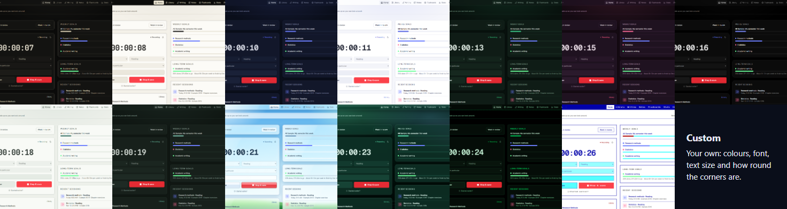

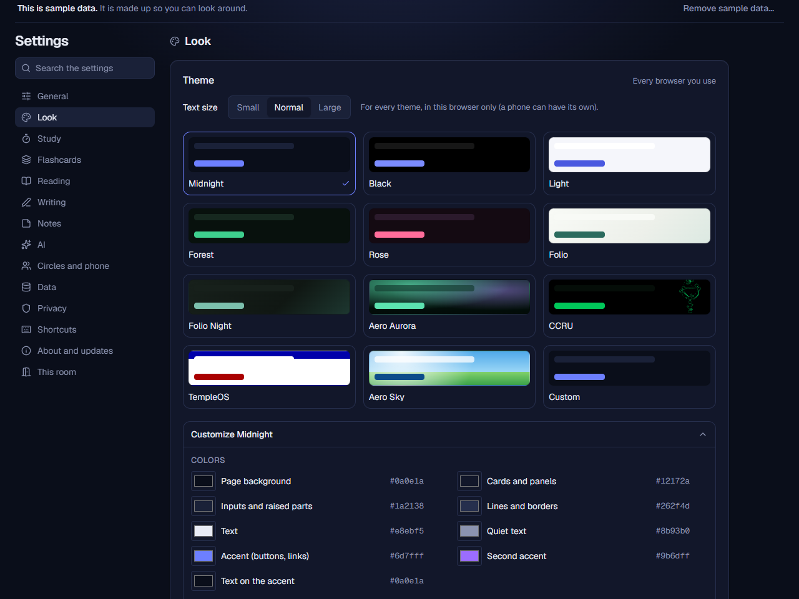
- Text size (above the themes): Small, Normal or Large for the whole app, in every theme. It is kept in this browser only, so a phone can have its own.
- The theme studio (Open the theme studio, under the themes) is, from 0.117, the one place to change a theme; Customize, which was in Look, moved into it. At its top: the theme to change (choosing one puts it in use), how many values are changed, Undo and Redo, Compare (hold it to see the theme as it ships; let go for yours), Click a part, a button to move it to the window’s other side, one to tuck it into a narrow strip at the edge (the page gets the room; the strip brings it back), and ×. Its groups: Colours (with the custom theme’s starting colours, and a warning where text would be hard to read), Letters, Space, Shapes (with Lines and frames: soft, usual or strong), Depth (with Shadows overall: none, usual or deep), Motion and scrolling, Parts, Picture, CSS, This theme (its name and Delete for a theme of yours, Copy … to make your own, Save as a file and Open a theme file, and Reset to default) and What I changed (every change to the theme in one list, each with its own put-back, and Put back everything). Everything shows on the page at once. On a phone it is a sheet over the lower half of the screen, above the bottom bar, so the tabs stay in reach.
- Every detail (from 0.112; the theme studio’s groups from 0.117) opens a panel at the window’s right with every setting of the theme; the page beside it shows each change at once, and on a phone the panel fills the screen. From 0.116 this panel is the theme studio: it belongs to the window, not to Settings, so it stays open while you go to any tab and change the look where you see it (a circle’s call tiles, a note card, the reader). It edits the theme in use and follows it when you choose another. On a window at least 1024 pixels wide the page narrows beside it, so nothing is hidden under it; on a narrower one it lies over the page. Open it with Open the theme studio in Look, with Ctrl+Alt+T on any tab (changeable in Settings, Shortcuts, under Anywhere; not while you type, where those keys can make a letter), or by searching “theme studio” with Ctrl+K. It stays open through a reload of the window. Esc inside it, or its ×, closes it; Esc on the page is the page’s own. Its groups: Colours (the nine, then errors, done and warnings, the glow at the top of the page and its strength, the keyboard’s focus ring and its width, selected text, scrollbars); Letters (a font for text, one for headings and one for code, each a built-in choice or a font installed on the computer; the size of each kind of text in pixels; line height; letter spacing; how heavy plain, medium and bold text are); Space (density, which makes every padding and gap tighter or roomier at once; the page margin; how wide running text and lists may be; the height of buttons and fields with a mouse, while a touch screen keeps 44 px); Shapes (corners of buttons, of cards, and of pills such as chips and tags, round, like buttons or square; how thick lines are, down to none); Depth (how strong shadows are, and the light edge on dark surfaces); Motion and scrolling (usual, fast or no motion; scrollbars usual, thin or hidden). Find a setting searches them all. Each has a slider or a picker and a box for the exact value, and its own button to put it back; Put back this group does a whole group. Every value is checked before it is used, and a
.vynthemefile carries them all (a Voynich before 0.112 opens such a file and keeps what it knows). - Parts (the last group of Every detail, from 0.113) sets 35 parts of Voynich one by one, in five areas: the frame (the top bar, the phone’s bottom bar, a tab’s header, cards and panels, side panes, dialogs, menus, pop-ups, notices, the reminders in the corner), buttons and controls (main, other, danger and icon buttons, fields, tabs and the chosen tab, chips, links), text (page titles, headings, code, tables, quiet text), circles and calls (the channel and member lists, chat messages, the box to write a message, members’ pictures, call tiles, the call’s bar) and reading and study (the reader’s bar, PDF pages, note cards, Home widgets). Open a part for its background and how see-through it is, its text colour, line colour and thickness, corners, shadow, room inside, text size, weight, font, capitals and slant. The room and text size reach everything inside the part. Click a part (at the top of the panel), then anything on the page: the nearest part it is in opens (the button, not the card around it; Esc stops). The eye button (Show me) outlines a part where it is on the page. Parts travel in a
.vynthemefile. The panel itself never changes with them, so it stays usable whatever you choose. From 0.116, while you pick, the part under the pointer is outlined with its name beside the pointer before you click, on any tab. From 0.117 the click also says which of the theme’s colours that spot is drawn with, and a spot that is not one of the named parts opens Colours with its colours marked. Parts starts with On this page, the parts on the page you are on (with how many); a part that is not there has an arrow, Take me there, to a tab where it shows, and says when it shows (call tiles during a talk, a dialog when one opens). - Your themes (under the theme tiles, from 0.114): Copy … to make your own makes a theme of your own from the one in use, built-in or yours, with every change made to it. It is chosen at once; name it in the theme studio, This theme (Name of this theme), change anything, and the theme it came from stays as it was. Delete this theme removes it (after asking), with its changes and its own CSS. You can have up to 60, and they follow you to your phone like the rest of the look. Opening a
.vynthemefile adds it to your themes under the file’s name. One with CSS (from 0.129) is shown first, as a theme sent in a circle is: its CSS off until you turn it on, with Try for a minute and Keep. - Undo and Redo (at the top of the theme studio; Ctrl+Z, Ctrl+Y) step back and forward through the changes to the theme in use. From 0.116 the steps are kept until the window is reloaded, the same in Customize and in the theme studio, on any tab. A slider dragged is one step; two different changes made in quick succession stay two. Where you type text, the keys undo the text instead.
- Background picture (the theme studio’s Picture): a PNG, JPEG, GIF or WebP of up to 1 MB, shown behind the whole page, filling it, tiled or in the centre, dimmed and blurred as you like. Panels and cards stay solid; to let the picture show through them, give them some See-through in Every detail, Parts. The picture is kept once on the computer; your phone shows it too, and a saved theme file carries it.
- The theme as CSS (the theme studio’s CSS, from 0.118): Open CSS shows the theme in use in four parts, each with Copy: As it ships (its nine colours and Voynich’s own rules for it), Your changes (one setting a line: the colours by their names such as
--background, then--font-text,--text-scale,--roundness,--shadows,--lines,--controlsand every detail by its name, such as--size-sm: 17px, and a block per part, such as@part card { border-radius: 12px; }), Your own CSS, and What the page gets. Edit turns your changes and your own CSS into text you can change, with suggestions of the names, find (Ctrl+F) and its own undo. It works both ways: a line of your changes sets its setting as you type (checked as every value is: a wrong value is marked on its line, with what it should be, and nothing is taken from it), and a slider or the studio’s Undo writes the text anew. A line no setting holds is marked too; Done moves it to your own CSS and puts your own CSS on (from 0.129 only the blocks your own CSS does not have yet, so a theme pasted again does not double it). - Theme jams (from 0.124): in the theme studio’s Jam, start a jam with the theme you are changing in one of your circles, and everyone in it can join from the same place (Jams shared with you). Then a change anyone makes (a colour, a detail, a part) shows on everyone’s Voynich as it is made; two people changing two things both keep theirs, and the same thing changed by two keeps the last. The jam’s CSS is taken part in only when you say so (Take part in the jam’s CSS, off as you join), cleaned of anything that loads from elsewhere, with the guard in sight. Leave the jam keeps the theme as it is, as one of your own. A jam travels as a document shared to write in the circle (as writing together does); an older Voynich sees that document, saying what it is.
- Your tabs (from 0.125): in the theme studio’s Layout, put the tabs in your order, hide the ones you do not use, rename them, and choose the tab each room opens on when you go to it from the room menu. It is for every theme, synced like your themes, and a phone’s bottom bar follows it (the first four, then More). Home cannot be hidden and Settings stays where it is. With Send my tab layout with the themes I send, a theme you send carries your tabs (not your start tabs); its card then says so and offers Use its tabs. Put the tabs back as they come undoes it all.
- Sound packs (from 0.126): in the theme studio’s Sounds, give the theme a short sound (Ogg, MP3, WAV, WebM or M4A, 300 KB at most) for a message coming in a circle, a flashcard answered, a call joined and a study timer saved, each with how loud it is. They are kept on this computer and go inside the theme’s file, saved or sent in a channel (a theme sent as words goes without them). Theme sounds off (Settings, Look, and the studio’s Sounds) silences every theme, and a safe start (hold Shift while Voynich starts) keeps them off whatever a theme does.
- Where it came from (from 0.123): keeping a theme someone sent remembers whose it was, its name and the day, and the theme carries that with it when you send it on, so a card can say “Can’s, remixed from Ali’s Rose”. Up to eight steps are kept. The theme studio shows them under This theme (Where it came from), and Forget where it came from takes the names out, so they no longer travel with it.
- What does this touch? (from 0.123): a theme sent to you with CSS says, on its card and before you turn the CSS on, what that CSS changes: the whole page, or which parts of Voynich (the top bar, cards, buttons and so on), the fonts it carries, and what it would hide, and how (display: none, made see-through, moved off the screen...). It reads the CSS without using it, by the parts’ own names and by what its rules find on the page you are on; a rule for something not on that page is still said. Whatever it hides, the way back (the try bar, and the guard once it is kept) is drawn where page CSS does not reach.
- Materials (from 0.122, the theme studio’s Materials): Stickers are small pictures pinned to a part, over it (a blossom in the corner of every card, a moon on the top bar): pick one of the twenty, or your own picture, the part, the corner and the size. Fonts are font files carried inside the theme (.woff2, .woff, .ttf or .otf, up to 400 KB), so the theme looks the same on a computer that does not have them; Use it for the text puts one on the text, and its name works in every font field. Icons swaps an icon (the tabs’ and the most seen ones, or any by its name) for an emoji or a picture, wherever it shows. All three are written into the theme’s own CSS, in blocks of their own you can read in CSS, so they stay on this computer, a safe start turns them off with it, and they go with the theme when you send it with its CSS. The pictures and fonts are written into the CSS itself, so nothing is loaded from anywhere; the browser checks a font file before it uses it, and a font that would come from elsewhere is taken out of CSS someone sent you.
- A prompt for an AI (from 0.122, in the theme studio’s CSS): to have an AI write a theme, Copy the prompt and paste it into the AI you use. It says everything the AI needs, taken from Voynich itself so it is always right for this version: every setting the theme sheet takes and the values it takes, every part and how to find it, the state hooks, the colours and fonts there are, what a theme sent to others keeps, and to keep text readable. It carries the theme you are changing as it is now (its pictures and fonts left out), and what you want, written in the box above it. The AI answers in two parts: paste the first into Your changes and the second into Your own CSS in Edit, then Done. Nothing is sent anywhere by Voynich: you copy it yourself.
- When a theme applies (from 0.121, the theme studio’s Rules): a theme that shows by itself, in a room (walk into Deutsch and Voynich turns its colours; leave and it turns back), in a circle, between two dates each year (a winter theme from 1 December to 6 January) or at a time of day. Each rule names a theme, built in or your own. The first rule that matches wins: move them up and down to set the order. With none, the theme you chose shows, and a rule never changes what you chose. The studio changes the theme you see, so with a rule showing it changes that one. Settings, Look says when a rule shows the theme, and Pause the rules in this window turns them off until the window closes (Resume the rules in Rules). The rules follow you to your other computers, like your themes.
- State hooks (from 0.120, the theme studio’s CSS): what is going on in Voynich, on the page for your CSS to react to. Each is an attribute on
htmlwith a word, for selectors, and where a number means something a variable with the exact value, forcalc(): the tab (data-v-page: home, library, writing, notes, flashcards, stats, circles, read, settings, other), the time of day (data-v-hour: morning, day, evening, night;--v-hour), a call (data-v-call: none, joining, live), days studied in a row (data-v-streak: none, some, hot from 7;--v-streak), flashcards due now (data-v-due: none, some, many from 50;--v-due), a book open (data-v-reading: no, yes;--v-reading, 0 to 100) and new circle messages (data-v-unread: none, some;--v-unread). For examplehtml[data-v-hour="night"] { --accent: #e0a060; }. The studio lists each with its value now and an example to copy, and Pretend shows a state in this window (night, a call, a hot streak) so you can design it; Stop pretending ends it. They describe only you, and CSS cannot send them anywhere. Folio Night shows the idea: late at night it warms a little (any colour you changed still wins). - Your own CSS (the theme studio’s CSS, with Open CSS and Edit) reaches anything the settings do not, for the theme in use, up to 4,000,000 characters (from 0.130; if this browser cannot keep that much, it says so instead of losing it when Voynich closes). Done puts it on. It stays on this computer: it is never synced to your phone, saved in a theme file only when you tick With my own CSS by Save as a file (from 0.129), and sent with a theme only when you choose With your own CSS. If it breaks the page, hold Shift while Voynich starts (in a browser, add
?safe=1to the address): your own CSS is then off until Voynich is started again, and the studio’s CSS says so with a button to turn it back on. - Theme effects (from 0.129, from Onur’s Ay Camı theme): two things a theme switches on from its CSS alone, so a theme from anyone can have them with nothing of its own running. While its CSS uses
var(--mouse-x)orvar(--mouse-y), they follow the pointer (0 to 1 across the window, 0.5 the middle), for figures that turn toward it or light from its side; with reduced motion in Windows they stand still.html { --vyn-liquid-glass: 1; }turns on liquid glass: the theme’s panels bend what is behind them near their rims, like thick glass, a little apart for each colour. It is tuned with--lg-blur,--lg-saturate,--lg-brightness,--lg-bend,--lg-bandand--lg-aberration(on the panels, so they can differ), and--vyn-lg-selectoronhtmlsays which panels (a quoted selector list). At most 48 panels, never the notes, the readers or the editor; in Firefox and on an iPhone the panels get a plain blur, as those browsers cannot bend a backdrop. The panels need a see-through background for it to show. - A scene (from 0.131, the theme studio’s Scene): a script that draws behind the whole page, on a canvas of its own (
#scene), for the theme in use: stars that drift, rain, a slow gradient. It runs sealed off, in a frame with no address of its own: it never sees the page, your notes, circles, keys or anything typed, cannot read this browser’s storage, and cannot reach the network (no fetching, pictures, fonts, sockets or WebRTC). It is told only whatvyn.stateholds: the state hooks (hooksandvalues), the theme’scolours, the window’swidthandheight, thescrolland themouse(0 to 1), whether the page isdark, andstillwhen reduced motion is on;vyn.on(fn)calls you when it changes. Start from an example gives a scene to begin with, and Show what it is told now shows it. It draws under every part of the page (a theme’s CSS may fade or blend[data-vyn-scene], never lift it over the page) and never takes the mouse. Up to 1,000,000 characters; 30 frames a second, or 60 (one choice for every theme’s scene); paused while the window is hidden; stopped, with a note, when it keeps slowing Voynich or tries to leave its page (Run it again brings it back). A safe start runs none, and on a phone scenes are off until Run scenes on a phone too is on there. It goes in the theme’s file and when you send the theme with your own CSS; a scene from someone else is kept off until Run its scene (on the card once kept, or in the studio, where you can read it first), and is asked again if its script changes. In Voynich’s own window a scene cannot leave its page at all; in a browser it can try once and is stopped as it does, so run only scenes you trust. - A theme sent with its CSS (from 0.119): the card says With CSS of its own, N lines: off, and what was taken out before it could be used. Everything that would load from elsewhere is taken out:
@import, fonts from elsewhere (@font-face), and anyurl()but a picture written into the CSS itself (PNG, JPEG, GIF or WebP); so is anything written with escapes, which can hide those. Show it shows the CSS as it would be used. It stays off until you press Turn its CSS on; then Try for a minute and Keep use it. The way back stays in sight whatever the CSS does: the try bar (with Turn off its CSS) and, after you keep it, a bar with Turn off this theme’s CSS and It looks right are drawn where the page’s CSS cannot reach, and the CSS cannot hide, fade or shrink the whole page. A safe start (Shift held while Voynich starts) turns it off like your own CSS. Kept, it is the theme’s own CSS, on this computer only. - If the colours you pick make some text hard to read, a warning says which text and how far off it is. Every built-in theme passes the standard readability rule (WCAG AA).
- Custom starts from the colours of any theme you pick and lets you build your own.
- Theme and look apply to every room and are the same in every browser you use, your phone too. Show cover pictures (Settings, Reading, Library) hides or shows book covers everywhere.
The pages also fit a narrow window or a small screen:

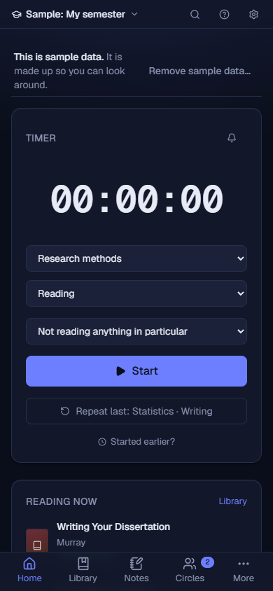
18. Backups, exports, moving

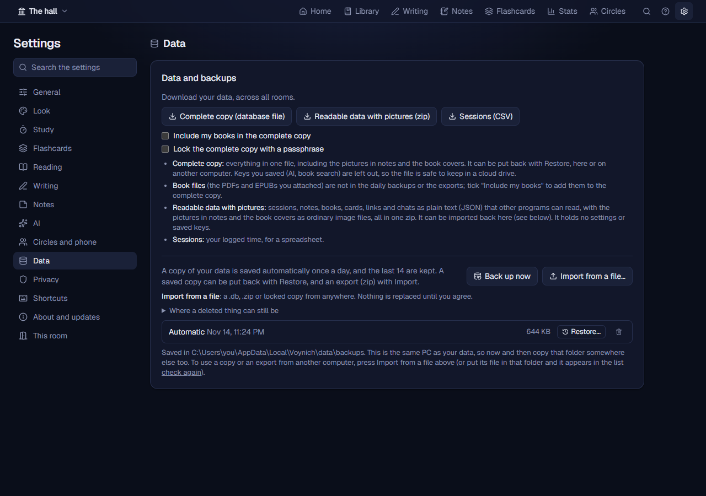
Where your data is
Everything (sessions, notes, books, highlights, pictures and covers) is in one file, tracker.db, in %LOCALAPPDATA%\Voynich\data (paste that into the File Explorer address bar; on a Mac, ~/Library/Application Support/Tracker/data). Saved copies are in its backups folder, and the PDF and EPUB files you attached to books in its books folder. Settings, Privacy lists all the places for your computer.
Saved copies
- Voynich saves one copy automatically each day and keeps the last 14. Back up now makes one on request; those are kept until you remove them.
- Voynich also saves a copy by itself before something risky, and labels it in the list: Before a restore, Before an update (when a new version has to change the database) and Before a delete (deleting a room). The list also shows Automatic, Manual, Export file and Other file entries.
- Restore... on a saved copy shows what is in it (rooms, sessions, hours, notes, books) next to what you have now, and asks you to confirm. Everything you have now is replaced by the copy, including its settings; keys you saved on this computer are kept unless the copy has its own. Your current data is saved first as Before a restore, so a restore can be undone. A copy from an older version is brought up to date; one from a newer version is refused (update Voynich first).
- Those copies live on the same computer as your data. Now and then copy the folder to a USB stick or cloud drive. The bin beside a copy deletes it, after asking.
- Book files are not in the saved copies (so the daily copies stay small). Notes, highlights and which file belongs to which book are. After restoring a copy on a computer without the files, each book asks for its file again.
Importing a file
Import from a file..., next to Back up now, lets you pick a complete copy (.db) or a readable-data zip from anywhere on your computer, for example one made on another computer or kept on a USB stick. Voynich keeps a copy of it in the list of saved copies, shows what is in it next to what you have now, and replaces nothing until you confirm. A file that does not start like one of Voynich’s own files is refused, and a file that is a database but not Voynich’s is explained in the preview.
Add to what I have (next to the button that replaces everything) adds what is in the file instead: its rooms, sessions, notes, books, cards, documents and the rest join yours, and nothing you have is replaced or doubled. What is in both (because one came from the other) is kept once; a room with the same name is the same room; a course or activity with the same name in the same room becomes one. Your settings, saved keys and on-screen choices stay as they are. It says what it added, and your data from just before is kept as Before a restore, so this can be undone too.
Taking your data with you
| Download | What it is for |
|---|---|
| Complete copy (database file) | Everything in one file, pictures and covers included, and the choices that follow you from browser to browser (see Your phone). Restore accepts it here or on another computer. Tick Include my books in the complete copy to get a zip with the same copy and the PDF and EPUB files of your books; importing that zip puts both back. |
| Readable data with pictures (zip) | Sessions, notes, books, highlights (the words, the page and the note), cards, links and chats as plain text (JSON) that other programs can read, with pictures as ordinary image files. The book files are not in it. It holds no settings or keys. It can be imported back: a zip in the backups folder appears in the list as an Export file with an Import... button. Importing replaces everything you have with the zip’s data (after saving a copy first); your settings and keys stay. The AI search index is not part of an export, so press Update the search index afterwards. |
| Sessions (CSV) | Your logged time for a spreadsheet. |
Your documents in Writing, and their earlier versions, are part of your data: the daily copies, the complete copy and the readable data hold them.
All three downloads cover all your rooms. Your saved keys (AI, book search) are left out of the complete copy and the zip on purpose, so the files are safe in a cloud drive.
A locked copy. Tick Lock the complete copy with a passphrase and type a passphrase twice (10 characters or more): the complete copy (with or without your books) is then encrypted with a key made from it (AES-256), for a copy that leaves your computer. Voynich keeps the passphrase nowhere, so a forgotten passphrase cannot be got round, by you or anyone. To put a locked copy back, press Import from a file... and pick it: it is listed as a Locked copy, and Open... asks for the passphrase. A wrong passphrase says so; a file that was changed or damaged is refused, and nothing is replaced. The automatic daily copies are not locked: they stay on this computer, with the data itself.
Where a deleted thing can still be
Deleting a note, a session or a room takes it out of Voynich at once. A copy of it can still be in these places, and the same list is under Where a deleted thing can still be in Settings, Data:
- The data file’s free space, until the file is written anew: press Compact now there.
- The saved copies: the automatic ones for 14 days; the ones you made, and those saved before a restore, an update or a delete, until you delete them with the bin beside each.
- Copies you downloaded or copied elsewhere, and what you sent in a circle: the other members keep what they received.
- The disk itself: the place a deleted file took is reused later, not wiped at once. Your computer’s disk encryption (BitLocker on Windows, FileVault on a Mac) is what protects it if the computer is lost or stolen.
Moving to another computer
Install Voynich there, make a complete copy or a zip here (with Include my books if you read books in Voynich), and on the new computer press Import from a file... and pick it (see below). Or, with Voynich closed on both, copy the whole %LOCALAPPDATA%\Voynich folder (~/Library/Application Support/Tracker on a Mac).
If the data file is damaged
After a crash, a power cut or a disk problem the file can become unreadable. Voynich then still starts, says so in plain words, and lists the healthy saved copies it found with what each holds. Use this copy puts one in place; the damaged file is not deleted but moved to a damaged folder next to your data. Anything you added after that copy was made is not in it.

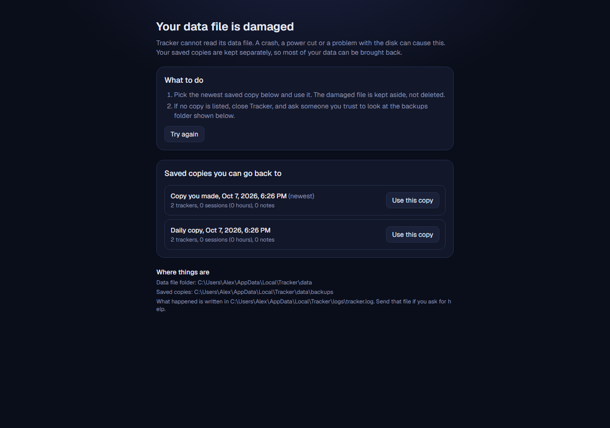
19. Updates

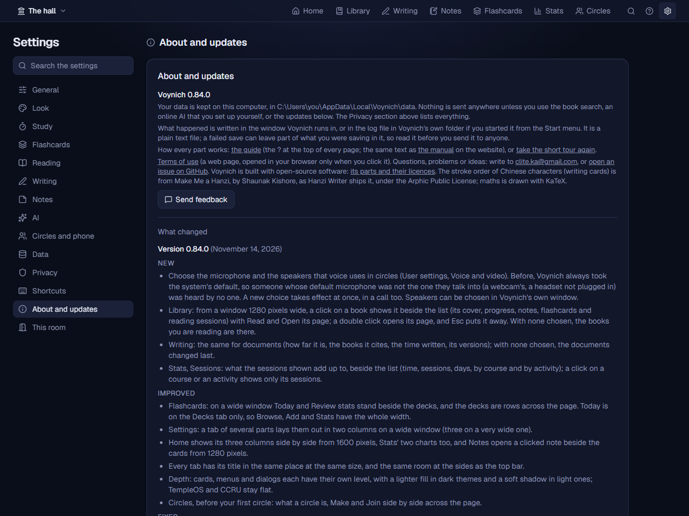
- Settings, About and updates also has a link to this manual, to the terms of use, the contact address and the GitHub issues page. They are links you click; Voynich sends nothing by itself.
- Send feedback (in About, and on the page Voynich shows when something breaks) is for telling the maker about a problem or an idea, in English or Turkish. Write what happened; under it you see everything that goes with it: the version, the computer’s system and, unless you untick it, the last lines of the log, with your home folder written as
~. Read it first: the log can hold words of something you were saving. Open in my email starts a new email in your own email program, which you send yourself; Copy puts it all on the clipboard, for any email. If it is too long for an email link, the email starts with the first part and Voynich says to paste the whole text from Copy. - Check now asks whether a newer version exists. It is the only thing that contacts anyone unless you turn the next option on.
- Check for updates every hour (on unless you turn it off, from 0.91; every hour from 0.93, once a day before) does the same by itself, about once an hour while Voynich runs and when it starts.
- The update pop-up (from 0.93). When a newer version is found, a small window shows on whatever page is open, with what is new: Restart and update downloads it if that has not happened yet (with the progress), installs it and opens Voynich again, in about a minute; Later hides it until Voynich starts again, and then the loading screen installs it. A copy that cannot install by itself shows Download it instead. A phone never shows it, since the computer is what is updated.
- When a newer version exists, Update now downloads it from GitHub (about 45 MB), checks that it is the file signed for Voynich, saves a copy of your data, closes Voynich, installs it and opens Voynich again; the page reloads by itself. Your data stays as it is. One press does all of it: the progress shows while it downloads.
- Install updates by itself (on unless you turn it off, from 0.91; one you turned off stays off) downloads a newer version in the background and installs it the next time Voynich starts, on the loading screen. It also turns on the hourly check. With it off, nothing installs by itself, and the pop-up still says a new version is out. The About page shows the download as it goes and then Install now, to install it at once instead; Update now pressed while it downloads installs it as soon as it is ready.
- Only an update signed with Voynich’s own key is ever installed automatically, and the program that runs the installer checks that signature (and the file’s checksum) again before it runs anything. An announcement that is not signed gets no download link, only a warning: every real release is signed, so an unsigned one is what someone who took over the releases repository would publish.
- You can always update by hand: download the newest Voynich-Setup.exe and run it. It closes Voynich, installs over it and keeps your data. On a Mac: quit Voynich and drag the Voynich from the newest Tracker-Mac.dmg onto the Applications folder. (On a Mac, Update now works only when Voynich is in a folder you can change, such as Applications.) (Versions before 0.3.0 cannot update themselves; install 0.3.0 or later by hand once.)
- Each release lists a SHA-256 checksum. In PowerShell,
Get-FileHash .\Voynich-Setup.exeshould show the same number; on a Mac,shasum -a 256 Tracker-Mac.dmgin Terminal.
20. Privacy
Your sessions, notes, books, the PDFs and EPUBs you read and pictures stay on your computer. These are the only things that can leave it, and only when you use them:
| What | When | What is sent, and to whom |
|---|---|---|
| Look up (the dictionary) | When a word you look up is in no dictionary on this computer (Offline only, in Settings, Reading, Look up, turns that off), and when you press a dictionary’s Download there | The word only, never its sentence or the book, to Wiktionary; a dictionary download comes from GitHub, checked against a fingerprint in Voynich. Looking words up in a downloaded dictionary sends nothing. |
| Natural voices for Read aloud | Only when you press Download (Settings, Reading, Read aloud, or the offer in the reader) | Nothing of yours: the request for the voice program (from npm) and the voices (from GitHub), each file checked against the one expected. Reading aloud itself happens on this computer. |
| Book and article search | Only when you press Search, or drop a book or article file that names its ISBN, DOI or arXiv number (Look up dropped books, in Settings, Reading, Book search, turns that off) | The ISBN, DOI, arXiv number or words you typed, to Open Library and Crossref (a DOI Crossref does not know, to DataCite; and Google Books or ISBNdb if you saved a key). |
| Cover pictures | While search results show them, and once when you save a book from a search | The cover’s address, to the cover site, without telling it which page you are on. Turn off Show cover pictures and your browser loads none. |
| Reading data for OCR | Only the first time a language is used to read a scanned book | The name of the language’s file, to jsDelivr (a public file server), once; the file is checked against a fingerprint in Voynich. The pages are read on your computer and never sent. |
| A document shared live | Only while you share it (Writing, Share live), with whoever opens its link | That one document (its text, comments and the books it cites), your name and your cursor, to their browser over your own network or Tailscale, as with your phone. Nothing else of yours, and nothing to the internet. |
| Find a free PDF | Only when you press Find a free PDF on an article | The article’s DOI and the email address you gave, to Unpaywall; then the download of the PDF from the address it names (the publisher, a repository or arXiv). Nothing else of yours. |
| Your Google Books and ISBNdb keys | Only if you save one | The key, to its own service only. |
| AI with Ollama | Only when you use the AI tab, or Ask in the reader | Your question and the notes found for it (in the reader, the passage you ask about; preparing a book sends its text to be indexed), to Ollama at the address in settings (this computer by default). |
| AI with an online service | Only if you choose it and save a key | The same, to that service, with your key. The one case where the text of your notes leaves your computer. |
| Your phone | Only while Use Voynich from your phone is on (off by default), and only for phones you paired | What the phone shows and changes goes between the phone and this computer over your own network (or Tailscale, which encrypts it), and nowhere else. On the plain address it is not encrypted; on the secure address (Voynich’s own certificate) or Tailscale it is. |
| A study circle | Only while you are in one (the hall, Circles) and Voynich is running | To find the members: joining Hyperswarm’s public directory (first through its three addresses), which sees that a computer joined and the circle’s scrambled meeting place, never its key. Between members, directly and encrypted: your name in the circle, who is in it and who is online; and only for the rooms you chose for that circle (the hall, Circles; none until you choose), each room’s name with each of the last two weeks’ minutes and flashcard answers, your streak and the “nice work” you gave; the files of the decks you share with it, without your progress; for a book you read with it, its details (never its file), the plan and your page; your chat messages, the recordings of the voice messages you send, and the images and files you send in the chat, with a very small blurred preview of each image in its message (kept by every member who has them for as long as the circle’s maker chose); in a Together reading where you turn sharing on, your highlights in that book (their words, colour, page in your copy and note; none you keep to yourself); a document you share with members, to them alone (its text, comments, your name and cursor while you write, and the details of the books it cites); while you are in a voice channel, which one, your mute, deafen and camera, and its study rounds; while you are in it and not muted, your voice, to the others in that channel only, never kept; while you share your screen there, the picture of what you picked (and its sound, if you ticked it), to those in the channel who press Watch only, never kept; while your camera is on there, its picture, to the others in the channel who take pictures only, never kept; and, while your timer runs in a room you share with it, that room’s name. Members see each other’s internet addresses. Leave the circle to stop it. |
| Updates | Check now, the daily check, Update now (the last two are off by default) | A request for one small file that carries only “Voynich” and the version; then the installer file if you update. |
There are no analytics, crash reports, accounts or advertising. Fonts and icons are part of the program. The reader shows a book from Voynich itself: a PDF or EPUB cannot make your browser fetch anything from elsewhere, and an EPUB’s scripts never run. Inside Voynich, Settings, Privacy shows this list again with your settings (“Right now”), the sites each item talks to, how to stop it and where everything is kept, and a test checks that list against the program’s code.

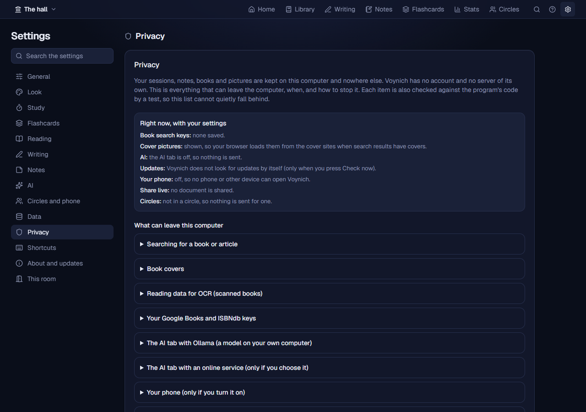
21. Keyboard and accessibility
- Everything can be done with the keyboard: Tab and Shift+Tab move between controls, Enter or Space press them, and the focus shows as a ring in the theme’s colour.
- Press ? on any page (outside a text box) for its keys: the page’s own first (studying cards, a circle, the reader, notes), then the ones that work everywhere.
- Windows that open on top (New room, adding a book, Cite, studying flashcards, Search everything and the others) keep Tab inside them and close with Esc.
- In a list with a grip (courses, activities, notes), focus the grip and press Up or Down to move the item. On touch screens it becomes two small arrow buttons. Rooms in the room menu are moved with the Move up and Move down buttons in Settings, This room.
- Search everything: Ctrl+K (Cmd+K on a Mac), / outside the reader, or the magnifying glass in the top bar. Type to find your notes, books, documents and flashcards, the words of your highlights and text boxes in every book (Highlights and text boxes, opening the book at one), or the name of a tab to go there; the arrow keys choose and Enter opens. With three letters or more it also searches inside your books (In your books): each place found says the book and the page (or chapter) with the words around it, and opens the reader there with the words marked. A book is searchable once its words have been read: Make them searchable at the foot of the results reads the books that are not yet, on this computer, a moment each (it goes on from where it stopped, and nothing is sent anywhere). A book prepared for questions in the reader’s Ask tab already is.
- Ctrl+Enter saves a note. In the reader, Page Down and Page Up turn the page and / searches the book. These and the graph’s shortcuts can be changed in Settings, Shortcuts.
- Every button and field has a name a screen reader can read, each page has a heading, and error messages are announced when they appear.
- Text in every built-in theme meets the WCAG AA contrast of 4.5 to 1, and the theme editor warns about colours that do not. Calendar squares are at least 24 pixels wide, and so is every button that is only an icon (44 on a touch screen).
- The graph’s animation follows your computer’s “reduce motion” setting unless you choose otherwise.
What has not been done: it has been checked with automated tools and by keyboard, but not yet with a real screen reader. If something does not work for you, write to clite.ka@gmail.com or open an issue on GitHub.
22. Troubleshooting
Windows says “Windows protected your PC”
The installer is not signed with a paid code-signing certificate. Choose More info, then Run anyway. To check the file is the real one, compare its SHA-256 (Get-FileHash) with the checksum on the release page.
Nothing opened, or the browser says it cannot connect
Wait a few seconds and reload: Voynich takes a moment to start. Look for its icon near the clock (the little arrow shows hidden icons), or in the menu bar on a Mac; clicking it opens Voynich. Starting Voynich again just opens the running one. If it still fails, open the log (right-click the icon, Show the log folder) and read the last lines.
I cannot find the tray icon
Windows may hide it under the arrow next to the clock. Drag it out to keep it visible. You can always start Voynich from the Start menu. On a Mac with a full menu bar, icons can be hidden (behind the notch on a laptop); opening Voynich from the Applications folder opens the running one.
macOS says Voynich cannot be opened
That is the first-start check, once: see Install on a Mac. If Update now says “Move Voynich into your Applications folder first”, Voynich is running from the disk image or a folder you cannot change: drag it into Applications and start it from there.
“Your data file is damaged”
Choose the newest saved copy listed and press Use this copy. The damaged file is kept in the damaged folder. See Backups. If no copy is listed, close Voynich and look in the backups folder shown on that page; the copies there are ordinary .db files, and someone you trust can help you look.
“The disk is full”, or a save fails
Free some space (empty the Recycle Bin, remove files you do not need) and try again. What you saved earlier is safe, and a running timer keeps running until a save works.
“Voynich cannot write to its data” or “Your data is busy”
A security or sync program may be holding the data folder. Wait a few seconds and retry; if it keeps happening, allow Voynich to use %LOCALAPPDATA%\Voynich (~/Library/Application Support/Tracker on a Mac).
A book search finds nothing, or says a service did not answer
Check your internet connection. Open Library does not know every edition; add an ISBNdb or Google Books key in Settings, Reading, Book search (see The Library), or choose Enter it by hand instead. A search for an article needs its DOI or title words (Crossref).
Update now does not work
It says why. If it fails to download, check your connection and try again; you can always run the newest Voynich-Setup.exe by hand. Version 0.3.0 could give up on computers where looking up GitHub’s address is slow; 0.3.1 fixed that, so update by hand to 0.3.1 or later once.
A book says its file is not on this computer
That happens after restoring a copy without the books, or when the file in the books folder was deleted. Edit the book and choose Attach it again with the same PDF or EPUB; its notes and highlights are still there. Next time, tick Include my books in the complete copy (see Backups) to take the files with you.
The phone cannot open Voynich
Check that Voynich is running on the computer and Use Voynich from your phone is on (Settings, Circles and phone says Ready for phones), and that the phone is on the same Wi-Fi (or Tailscale is on on both). A guest Wi-Fi often keeps devices apart: use the main one. On Windows, the first time, allow Node.js (Voynich) on private networks; if you chose otherwise, allow it in Windows Security, Firewall, Allow an app through firewall. If the phone shows the pairing page, it is not paired (or was removed): pair it again.
The AI tab says to choose a model, or cannot reach Ollama
Install Ollama from ollama.com and make sure it is running (its icon is near the clock), then open Settings, AI, and press check again. Choose a model that answers questions (and, optionally, one that searches your notes); the suggestions listed for your computer can be downloaded from there. Test the connection tells you which part fails.
“Voynich cannot find its data file”
The data file is not where Voynich expects it, or cannot be opened. Close Voynich and open it again. If the file is really gone, Voynich starts fresh, and your saved copies are still in the backups folder: open Settings, Data, and restore one.
I started a timer on one computer and cannot see it on another
The running timer lives in the browser it was started in. Voynich data does not sync between computers; save the session where you started it.
Where is the log, and what do I send when I ask for help?
Right-click the Voynich icon and choose Show the log folder (or see Settings, About and updates). It is a plain text file named tracker.log. A failed save can leave a piece of what you were saving in it, so read it before you send it to anyone (for example to clite.ka@gmail.com), and send only what you are comfortable with. Send feedback in Settings, About and updates puts its last lines under your message for you, to read before you send it.
How do I remove all my data?
Uninstall Voynich and answer Yes when it asks about your data, or delete the %LOCALAPPDATA%\Voynich folder (on a Mac, ~/Library/Application Support/Tracker) with Voynich closed. This cannot be undone, so make a complete copy first if you might want it.
23. Questions
Is it free? Is it open source?
It is free to download and use. It is not open source: the program’s code is not published. The terms of use say what you may do with it.
Does it work without the internet?
Yes. The timer, log, notes, goals, stats, backups, reading your books and the AI tab with Ollama on your computer all work offline. Only book lookups, covers, updates and an online AI service need a connection.
Can two people share a room?
No. Voynich is a private program for one person on one computer. Your data is not shared or synced.
Can I use it on my phone?
Yes, while Voynich runs on your computer: turn on Use Voynich from your phone in Settings, Circles and phone, and pair the phone (see Your phone). The phone opens Voynich on the computer; there is no separate phone app, and your data stays on the computer.
What happens to my data if I update?
It stays. A newer version installs over the old one, brings the data file up to date if needed, and a copy is saved first.
How much data can it hold?
It is built for years of daily use by one person; there is no fixed limit. Pictures in notes make the data file bigger, so the backups folder grows with them (daily copies are limited to 14). The PDF and EPUB files of your books are kept once, in the books folder, and are not copied into the backups.
Does it work on a Mac or Linux?
On a Mac, yes: macOS 11 or newer, Apple Silicon and Intel (Install on a Mac). On Linux, not yet.
Who made it, and how do I report a problem or suggest something?
Kerem Ates makes it. Write to clite.ka@gmail.com, or open an issue on GitHub if you have a GitHub account. Please read your log first (see Troubleshooting) and do not send anything private.
24. Words used
| Word | Meaning |
|---|---|
| Voynich (a room) | One of your areas, with its own courses, activities, notes and library. |
| Course / subfield | A part of a room; you choose what it is called. |
| Passive course | A course left out of the weekly goals list; its time and goals are kept. |
| Streak | Days in a row with time logged. |
| Heatmap (calendar) | The grid of days on a room’s Home; a darker square means more time. |
| Primary, secondary and tertiary note | How far down a note is: a primary note is about a book (or has no note above it), a secondary note is under a primary note, a tertiary note is under a secondary note or further down. The graph draws each level’s line in its own look. |
| Study circle | A small private group whose Trackers connect directly, with no server; you join with an invite code (see Study circles). |
| Wikilink | A link from one note to another written as [[Title]]. |
| Unwritten link | A link to a note title that does not exist yet. |
| Document | Something you write in Library, Writing; saved as you type, with earlier versions kept. |
| Citation style | The way citations and the bibliography are written: APA, Chicago author-date, MLA, Harvard, the Unified Style Sheet for Linguistics or IEEE (numbered). |
| Interlinear gloss | A line under an example that gives, word by word, its meaning and grammatical labels (1SG, PST). |
| Highlight | Words marked in colour in a book you read in Voynich; kept in Voynich, not in the file. |
| Printed page | The page number printed in a book (“p. 45”), which can differ from the count of pages in its PDF. |
| ISBN / DOI | The number that identifies a book (ISBN) or an article (DOI). |
| BibTeX / RIS | Formats that reference managers and word processors use for citations. |
| Ollama | A free program that runs AI language models on your own computer. |
| Search index | What lets the AI find the right pieces of your notes; refreshed with “Update the search index” in Settings, AI. |
| Spaced repetition | Showing a flashcard again after a longer gap each time you know it. |
| Complete copy | A single file holding all your data, which Restore accepts. |
| SHA-256 checksum | A fingerprint of a file; if two files have the same one, they are identical. |
| Signed update | An update carrying a signature made with Voynich’s private key, which Voynich checks before installing it by itself. |